مزاج شناسی
تخصصی مزاج شناسی، اردو ترجمہ
کتاب اور مصنف کے بارے میں
یہ کتاب فارسی زبان میں لکھی گئی «مزاجشناسی تخصصی» کا اردو ترجمہ ہے۔ اصل متن کے پہلے صفحے پر لکھا ہے کہ اس کا ماخذ «استاد طالقانی» کی کتاب کا تخصصی مزاج شناسی والا حصہ ہے۔
مصنف: استاد طالقانی
مترجم کا پیش لفظ
یہ ترجمہ مصنف کی اجازت سے کیا گیا ہے۔ اس میں مصنف کے مطلب، طبِ روایتی کی اصطلاحات، ابواب کی ترتیب اور مذہبی و ثقافتی پس منظر کو برقرار رکھا گیا ہے، اور کوشش کی گئی ہے کہ اردو عام فہم اور رواں ہو۔
پڑھنے سے پہلے: دو ضروری باتیں
پہلی بات: یہ کتاب زیادہ تر مردوں کو مخاطب کر کے لکھی گئی ہے۔
اصل فارسی متن میں مثالیں، خطاب اور بہت سے مقامات مردوں کے حوالے سے ہیں، اور بعض ابواب (مثلاً خصیوں کے مزاج والا حصہ) صرف مردوں سے متعلق ہیں۔ لیکن مزاج شناسی کے بنیادی اصول، یعنی چاروں اخلاط، ان کے غلبے کی علامات، غذا، رویے، علاج اور پرہیز، مرد اور عورت دونوں پر یکساں لاگو ہوتے ہیں۔ جہاں بات خاص طور پر مردوں سے متعلق ہے، وہ سیاق سے خود واضح ہو جاتی ہے۔ ہم نے ترجمے میں اصل متن کا اندازِ خطاب بدلا نہیں، تاکہ مصنف کی بات جوں کی توں سامنے آئے۔
دوسری بات: کسی ایک شخص میں کسی مزاج کی ساری علامات کا ہونا ضروری نہیں۔
اس کتاب میں ہر مزاج کی بہت سی علامات گنوائی گئی ہیں۔ ان کا مقصد یہ نہیں کہ کسی شخص میں ان میں سے ہر ایک علامت موجود ہو، تب ہی اس کا وہ مزاج مانا جائے۔ عملی طور پر ہوتا یہ ہے کہ کچھ علامات نمایاں ہوتی ہیں، کچھ ہلکی ہوتی ہیں اور کچھ بالکل نہیں ہوتیں۔ مزاج کا فیصلہ اکثریت اور مجموعی رجحان سے کیا جاتا ہے، ایک ایک علامت گن کر نہیں۔ اسی طرح بہت سے لوگوں میں دو مزاجوں کا ملا جلا غلبہ ہوتا ہے، جس کا ذکر مصنف نے پانچویں باب کے آخر میں کیا ہے۔
ترجمے کے بارے میں چند باتیں
- اخلاط کے نام (دم، صفرا، بلغم، سودا) اور طبِ روایتی کی بنیادی اصطلاحات (مزاج، غلبہ، منضج، مسہل وغیرہ) بغیر تبدیلی کے رکھی گئی ہیں۔
- «گرمی» اور «سردی» سے مراد اکثر مقامات پر مزاج کی گرمی اور سردی ہے، یعنی جسم اور دل کی وہ کیفیت جو توانائی یا سستی پیدا کرتی ہے، نہ کہ محض درجۂ حرارت۔
- قرآنی آیات اور عربی عبارتیں اصل عربی میں ہیں؛ فارسی اشعار جہاں آئے ہیں اصل فارسی میں رکھے گئے ہیں۔
- جہاں مصنف نے قدیم فارسی طبی متون سے نقل کیا ہے (خاص طور پر ساتویں اور آٹھویں باب میں)، وہاں قدیم عبارت کا مطلب سادہ اردو میں دیا گیا ہے۔
- پانچویں باب کے نسخے مصنف کے اپنے ہیں اور بغیر تبدیلی کے پیش کیے گئے ہیں۔ ان میں سے کوئی نسخہ استعمال کرنے سے پہلے کسی مستند حکیم یا طبیب سے مشورہ ضروری ہے۔ یہ نسخے ان لوگوں کے لئے ہیں جو بظاہر صحت مند ہیں اور کسی دوسری بیماری میں مبتلا نہیں؛ باب کے شروع میں اس بارے میں تفصیلی انتباہ دیا گیا ہے۔
- اصل کتاب میں ایران کے شہروں، پھلوں، درختوں اور رسموں کی مثالیں آئی ہیں۔ انہیں بدلا نہیں گیا، البتہ جہاں ضروری تھا وہاں مختصر وضاحت یا اپنے خطے کی مثال «مترجم کا نوٹ» کے تحت شامل کر دی گئی ہے۔
مترجم: ڈاکٹر سفیان سلیمان (Sufyan Suleman, PhD)
باب اول
جسمانی مزاج کی علامات
تخصصی مزاج شناسی
جسمانی مزاج کی علامات
تعارف: مزاج کیا ہے اور یہ کتاب کیا سکھاتی ہے
مزاج کیا ہے؟
طبِ روایتی کا کہنا ہے کہ ہم جو غذا کھاتے ہیں، وہ ہضم ہو کر جسم میں چار بنیادی سیال بناتی ہے۔ انہیں «اخلاط» کہتے ہیں: دم (خون)، صفرا، بلغم اور سودا۔ ان میں سے ہر ایک کی دو خاصیتیں ہیں، ایک گرمی یا سردی میں سے، اور ایک تری یا خشکی میں سے:
- دم: گرم و تر
- صفرا: گرم و خشک
- بلغم: سرد و تر
- سودا: سرد و خشک
ہر انسان میں چاروں اخلاط موجود ہوتے ہیں، مگر کسی ایک یا دو کا پلڑا بھاری رہتا ہے۔ یہی بھاری پلڑا اس شخص کا مزاج کہلاتا ہے، اور اسی کے مطابق اس کا رنگ، جسم، عادتیں، نیند، بھوک، غصہ اور پسند ناپسند بنتی ہیں۔
یہ بات شروع ہی میں سمجھ لینی چاہیے کہ مزاج کا ہونا بیماری نہیں۔ سوداوی یا بلغمی ہونا کوئی خرابی نہیں، یہ آپ کی قدرتی ساخت ہے۔ بیماری اس وقت پیدا ہوتی ہے جب کوئی خلط اپنی حد سے بڑھ جائے؛ اسے غلبہ کہتے ہیں، اور پانچویں باب کا موضوع یہی ہے۔ نیز «گرمی» اور «سردی» سے یہاں مراد مزاج کی کیفیت ہے، نہ کہ موسم یا درجۂ حرارت۔
مزاج کیسے پہچانا جاتا ہے؟
دو طرح سے، اور دونوں مل کر۔ پہلے دیکھ کر: رنگ، جسم کی ساخت، بال، آنکھیں، رگیں، چال اور حرکات۔ پھر پوچھ کر: نیند کیسی ہے، بھوک اور پیاس کا حال کیا ہے، مزاج میں جلدی ہے یا ٹھہراؤ، گرمی زیادہ محسوس ہوتی ہے یا سردی، کون سی غذا راس آتی ہے۔ فیصلہ کسی ایک نشانی سے نہیں ہوتا، بلکہ بہت سی نشانیوں کے مجموعی رجحان سے ہوتا ہے۔ بہت سے لوگوں میں دو مزاج ملے جلے ہوتے ہیں، اور یہ بالکل عام بات ہے۔
یہ کتاب کیا سکھاتی ہے؟
کتاب کی ترتیب سیدھی ہے: پہلے پہچان، پھر استعمال، پھر علاج، اور آخر میں گہرائی۔
- پہلا اور دوسرا باب: مزاج کی پہچان۔ پہلے جسم کی علامات سے، پھر عادتوں اور رویوں سے۔
- تیسرا باب: اس پہچان کا فائدہ روزمرہ زندگی میں: غذا، معاشرت، انتظام، خاندان اور شادی میں۔
- چوتھا باب: ہمارے ارد گرد کی چیزوں کا مزاج: رنگ، آوازیں، خوشبوئیں، جگہیں، کپڑے اور ماحول۔
- پانچواں باب: جب کوئی خلط بڑھ جائے تو اس کا علاج اور پرہیز۔
- چھٹا اور ساتواں باب: بدن کے الگ الگ اعضا کا اپنا مزاج، اور اسے پہچاننے کا طریقہ۔
- آٹھواں اور نواں باب: اخلاط کی گہری بحث، جو زیادہ تر ابو علی سینا کی «القانون فی الطب» سے ہے۔
شروع کے دو باب سب کے لئے ہیں۔ آخر کے دو باب نسبتاً علمی ہیں اور ان کا تعلق زیادہ تر طب کے طالب علموں سے ہے؛ اگر پہلی بار پڑھتے ہوئے وہ بھاری لگیں تو انہیں چھوڑ کر آگے بڑھ جائیں، باقی کتاب کا فائدہ اس سے کم نہیں ہوگا۔
ایک ضروری وضاحت
یہ کتاب زیادہ تر مردوں کو مخاطب کر کے لکھی گئی ہے، اور بعض حصے (جیسے خصیوں کے مزاج والا بیان) صرف مردوں سے متعلق ہیں۔ لیکن مزاج شناسی کے بنیادی اصول، یعنی چاروں اخلاط، ان کے غلبے کی علامات، غذا، رویے، علاج اور پرہیز، مرد اور عورت دونوں پر یکساں لاگو ہوتے ہیں۔ جہاں بات خاص طور پر مردوں سے متعلق ہے، وہ سیاق سے خود واضح ہو جاتی ہے۔
جسمانی علامات
استعمال کی گئی اکثر تصاویر چہرہ نگاری کے سافٹ ویئر کے ذریعے تیار کی گئی ہیں اور کسی خاص شخص سے متعلق نہیں ہیں۔
مترجم کا نوٹ: اس باب میں جسم کی جو علامات گنوائی گئی ہیں، وہ صدیوں کے مشاہدے پر مبنی رجحانات ہیں، کوئی تجربہ گاہی پیمائش نہیں۔ کسی ایک علامت سے کسی کا مزاج طے نہیں ہوتا؛ فیصلہ بہت سی علامتوں کے مجموعی رجحان سے کیا جاتا ہے، اور بہت سے لوگوں میں دو مزاج ملے جلے ہوتے ہیں۔ رنگ، قد، بال اور نقشے کا تعلق نسل اور خاندان سے بھی ہوتا ہے، اس لئے ان علامات کو اپنے ماحول کے لوگوں کے سامنے رکھ کر پرکھنا چاہیے، نہ کہ لفظ بہ لفظ۔
توجہ:
کسی شخص کا مزاج پہچاننے کے دو مرحلے ہیں۔ پہلے مرحلے میں دیکھنے اور مشاہدے سے مزاج کا اندازہ لگایا جاتا ہے، اور دوسرے مرحلے میں سوال و جواب کے ذریعے اس اندازے کو پرکھ کر تشخیص کی جاتی ہے۔
البتہ اس حصے میں اعضا کے مزاج کا ذکر کیا جاتا ہے تاکہ قاری، فرد کے مجموعی مزاج کی تشخیص میں مدد لینے کے ساتھ ساتھ ہر عضو اور ہر جسمانی حصے کے مزاج کو بھی پہچان سکے۔
جلد
جلد کی نرمی
- گرم و مرطوب خون (دموی): نرم
- گرم و خشک صفرا: خشک، اور گرمی بڑھنے کے ساتھ خشکی میں اضافہ ہوتا ہے
- سرد و خشک سودا: خشک، اور سردی بڑھنے کے ساتھ خشکی زیادہ ہو جاتی ہے
- سرد و مرطوب بلغم: نرم اور مرطوب
جلد کی تری
- گرم و مرطوب خون (دموی): گرم تری
- گرم و خشک صفرا: کم تری، خصوصاً چہرہ، پیشانی، گال اور ہاتھ زیادہ خشک ہوتے ہیں
- سرد و خشک سودا: کم تری اور خشکی
- سرد و مرطوب بلغم: سرد تری
جلد اور چہرہ
- گرم و مرطوب خون (دموی): سرخی اور تمتماہٹ
- گرم و خشک صفرا: چہرے اور آنکھوں میں زردی
- سرد و خشک سودا: جلد میں پھیلی ہوئی اور غالب سیاہی، البتہ بعض اوقات خون کی غلظت اور سطح تک خون نہ پہنچنے کی وجہ سے رنگ سفید بھی ہو جاتا ہے
- سرد و مرطوب بلغم: جلد کی سفیدی اور نرمی
جلد کے مسام
- گرم و مرطوب خون (دموی): نسبتاً بڑے
- گرم و خشک صفرا: بڑے
- سرد و خشک سودا: درمیانے
- سرد و مرطوب بلغم: باریک اور بند
جلد کا رنگ
- گرم و مرطوب خون (دموی): گندمی اور گلابی مائل
- سرد و خشک سودا: عموماً تیز سیاہ یا جامنی مائل گہرا رنگ
- گرم و خشک صفرا: زردی مائل
- سرد و مرطوب بلغم: سفید
ہاتھ کی رگیں
- گرم و مرطوب خون (دموی): نمایاں اور ابھری ہوئی
- گرم و خشک صفرا: کبھی ظاہر اور کبھی پوشیدہ
- سرد و خشک سودا: پوشیدہ
- سرد و مرطوب بلغم: پوشیدہ
غصے اور ذہنی دباؤ کے وقت جلد کا رنگ
- گرم و مرطوب خون (دموی): دباؤ میں جلد گلابی ہو جاتی ہے
- گرم و خشک صفرا: صفراوی دباؤ میں جلد زرد، ہونٹ خشک اور رگیں ابھر آتی ہیں
- سرد و خشک سودا: سودا کے بڑھنے سے جلد سیاہ یا نیلگوں ہو جاتی ہے
- سرد و مرطوب بلغم: غصے میں رنگ اڑا ہوا، ہونٹ خشک، اور چہرہ بے جان و مائل بہ تیرگی ہو جاتا ہے
جلدی مہاسے
- گرم و مرطوب خون (دموی): کندھوں اور سینے پر مہاسے زیادہ اور چہرے پر نسبتاً کم ہوتے ہیں، یہ عموماً سرخ اور گول ہوتے ہیں
- گرم و خشک صفرا: صفرا کی زیادتی سے مہاسے پیدا ہوتے ہیں؛ صفراوی مہاسے زیادہ تر پیشانی، چہرے، ناک اور گالوں پر ہوتے ہیں، ان کا سر سفید سے زرد، نوک تیز اور ابھرا ہوا ہوتا ہے، اور گرم و خشک موسم میں بڑھ جاتے ہیں
- سرد و خشک سودا: کم، البتہ نادر صورتوں میں بلیک ہیڈز نمودار ہو سکتے ہیں
- سرد و مرطوب بلغم: کم، البتہ نادر صورتوں میں سفید بلغمی مہاسے پیدا ہو سکتے ہیں
کان
قوت سماعت
- گرم و مرطوب خون (دموی): اچھی
- گرم و خشک صفرا: سماعت میں اضافہ، کبھی کبھی کان کی خشکی کے باعث سیٹی جیسی آواز سنائی دیتی ہے
- سرد و خشک سودا: سودا کے بڑھنے سے سماعت تیز ہو سکتی ہے، اور کان یا سر کی خشکی کے سبب سیٹی جیسی آواز بھی پیدا ہو سکتی ہے
- سرد و مرطوب بلغم: سماعت میں کمی، اور بلغم کے غلبے میں کان کے اندر بھاری یا کولر جیسی آواز محسوس ہو سکتی ہے
گردہ اور پیشاب کی نالیاں
گردوں کی کم کاری اور زیادہ کاری
- گرم و مرطوب خون (دموی): پیشاب زیادہ اور لیموں جیسا زرد
- گرم و خشک صفرا: رطوبتی مزاج رکھنے والوں کے مقابلے میں پیشاب کم ہوتا ہے، رنگ زرد یا گہرا زرد ہوتا ہے؛ صفرا کے غلبے کی صورت میں گرم صفراوی بار بار پیشاب آتا ہے اور رنگ زیادہ گہرا ہو جاتا ہے
- سرد و خشک سودا: رطوبتی مزاج رکھنے والوں کے مقابلے میں پیشاب کم ہوتا ہے؛ شدید سودا اور اس کے غلبے میں بار بار پیشاب آنے کی سرد کیفیت پیدا ہوتی ہے، جس کی وجہ سردی ہے اور علاج گرمی
- سرد و مرطوب بلغم: خشک مزاجوں سے زیادہ پیشاب آتا ہے اور عموماً اس کا رنگ ہلکا ہوتا ہے؛ بلغم کے غلبے میں پیشاب روکنے کی طاقت کمزور ہو جاتی ہے
تناسلی نظام
نطفہ یا سپرم
جنسی خواہش
- گرم و مرطوب خون (دموی): جنسی خواہش زیادہ
- گرم و خشک صفرا: جنسی خواہش زیادہ اور تیز، بلکہ بسا اوقات دموی مزاج سے بھی بڑھ کر
- سرد و خشک سودا: خیال بافی کی وجہ سے جنسی خواہش زیادہ
- سرد و مرطوب بلغم: جنسی خواہش کمزور
جنسی صلاحیت
- گرم و مرطوب خون (دموی): مقدار اور کیفیت دونوں کے لحاظ سے صلاحیت زیادہ
- گرم و خشک صفرا: صلاحیت زیادہ اور تیز، لیکن دموی مزاج کے مقابلے میں جلد تھک جاتے ہیں اور جلد تسکین پا لیتے ہیں؛ کیفیت بہتر مگر مقدار، مباشرت کی مدت اور لطف میں کمی ہو سکتی ہے
- سرد و خشک سودا: جنسی تحریک زیادہ اور بار بار ہوتی ہے، مگر عملی صلاحیت کم رہتی ہے؛ مقدار اور کیفیت دونوں میں کمزوری ہوتی ہے کیونکہ جسمانی طاقت اور اہم اعضا کمزور ہوتے ہیں
- سرد و مرطوب بلغم: جنسی صلاحیت کم، چاہے مقدار کے اعتبار سے ہو یا کیفیت کے اعتبار سے
منی کی کیفیت
- گرم و مرطوب خون (دموی): منی اور سپرم کی مقدار اور کیفیت زیادہ
- گرم و خشک صفرا: منی گرم اور زیادہ زرد ہوتی ہے، کبھی رحم میں جلن پیدا کرتی ہے، اور شدید گرمی کی وجہ سے سپرم کے ضائع ہونے سے گرم بانجھ پن کا امکان پیدا ہو سکتا ہے
- سرد و خشک سودا: منی کم ہوتی ہے؛ مقدار اور کیفیت دونوں کے اعتبار سے، یعنی گاڑھا مادہ اور سپرم کم ہوتے ہیں، اور سودا کے غلبے میں سردی اور خشکی کے باعث بانجھ پن پیدا ہو سکتا ہے
- سرد و مرطوب بلغم: منی اور گاڑھا مادہ بظاہر مناسب مقدار میں، سفید اور رواں ہوتے ہیں، مگر سپرم کی تعداد کم ہوتی ہے؛ عضو پر بلغم کے غلبے کی صورت میں سردی اور تری کے باعث بانجھ پن پیدا ہو سکتا ہے
بال
بالوں کا رنگ
- گرم و مرطوب خون (دموی): گہرا یا ہلکا سیاہ خرمایی
- گرم و خشک صفرا: سیاہ یا خرمایی؛ اگر بال روشن ہونے لگیں تو افسردگی کی طرف میلان بڑھ سکتا ہے
- سرد و خشک سودا: مدھم سیاہ یا جوگندمی؛ بعض اوقات فکر، خیال اور سر کی سردی کے باعث سفید بھی ہو سکتے ہیں
- سرد و مرطوب بلغم: زرد، سنہری، ہلکے خرمایی یا سفید؛ سر کے بالوں کا جلد سفید ہونا گرمی کے تحلیل اور رطوبت کے بڑھنے سے متعلق ہو سکتا ہے
جسم کے بالوں کی کثرت
- گرم و مرطوب خون (دموی): جسم پر بال زیادہ ہوتے ہیں، خصوصاً سینے اور کندھوں پر؛ بال موٹے، گھنے اور سیاہ ہوتے ہیں
- گرم و خشک صفرا: جسم کے بال کم ہوتے ہیں؛ صفراوی افراد میں سینے، کندھوں، ریڑھ کے نچلے حصے اور نچلے اعضا پر بال ہو سکتے ہیں مگر کم پھیلے ہوئے ہوتے ہیں، اور خشکی کے باعث کبھی گھنگریالے بھی ہو جاتے ہیں
- سرد و خشک سودا: بال کم ہوتے ہیں اور کبھی خشکی کے باعث گھنگریالے بھی ہو سکتے ہیں
- سرد و مرطوب بلغم: بال کم ہوتے ہیں اور کبھی بال نہ ہونے کے برابر ہوتے ہیں
سر کے بالوں کی باریکی اور موٹائی
- گرم و مرطوب خون (دموی): بال موٹے، لچک دار، اور اگر گھنگریالے ہوں تو موٹی لٹوں والے ہوتے ہیں
- گرم و خشک صفرا: بال خشک، موٹے، نمایاں، کبھی گھنگریالے اور سخت پیچ والے ہوتے ہیں
- سرد و خشک سودا: بال خشک، موٹے، گھنگریالے، اور شدید خشکی میں کبھی تار نما ہو جاتے ہیں
- سرد و مرطوب بلغم: بال نرم، باریک اور سیدھے ہوتے ہیں
سر کے بالوں کی کثرت
- گرم و مرطوب خون (دموی): بال گھنے
- گرم و خشک صفرا: بال گھنے
- سرد و خشک سودا: بال کم گھنے
- سرد و مرطوب بلغم: بال کم گھنے
نمونہ جاتی تصویریں: دموی بال، خشک مزاج کے بال، اور بلغمی و سرد مزاج کے بال
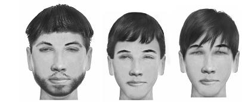
توجہ: خشک مزاج والوں کے سر کے بال لازماً گھنگریالے نہیں ہوتے، بلکہ بہت سے مواقع پر ان کی حالت وہی ہوتی ہے جو اوپر بیان کی گئی ہے۔
سر کے بالوں کا جھڑنا
- گرم و مرطوب خون (دموی): صورت مختلف ہو سکتی ہے، یعنی بال جھڑنا، گنج پن یا بہت زیادہ بال ہونا؛ دموی افراد میں گنج پن اکثر سر کے درمیانی حصے میں ہوتا ہے اور بہت سے مواقع پر غلبہ گرمی سے پیدا ہوتا ہے
- گرم و خشک صفرا: صورت مختلف ہو سکتی ہے؛ صفراوی گنج پن عموماً سر کے اگلے حصے میں ہوتا ہے؛ اگر صفرا کی حدت بہت زیادہ نہ ہو تو بال نہ بھی جھڑیں، لیکن جب صفرا سر پر غالب آ جائے تو جڑیں جلنے کے باعث صفراوی گنج پن پیدا ہوتا ہے
- سرد و خشک سودا: عموماً نہیں ہوتی
- سرد و مرطوب بلغم: بال کم گھنے ہوتے ہیں مگر جھڑتے نہیں
نمونہ جاتی تصویریں: دموی اور صفراوی گنج پن
ابرو
- گرم و مرطوب خون (دموی): ابرو گھنے ہوتے ہیں
- گرم و خشک صفرا: دموی کے مقابلے میں کم گھنے، مگر دوسرے مزاجوں سے زیادہ گھنے؛ ساتھ ہی نسبتاً زیادہ کھنچے ہوئے
- سرد و خشک سودا: کبھی کم گھنے اور کبھی گھنے، مگر بال خشک اور موٹے ہوتے ہیں
- سرد و مرطوب بلغم: ابرو باریک اور کم گھنے
آنکھ
آنکھ کی سفیدی کا رنگ
- گرم و مرطوب خون (دموی): آنکھ کی سفیدی میں سرخی
- گرم و خشک صفرا: آنکھ کی سفیدی میں زردی
- سرد و خشک سودا: آنکھ کی سفیدی ماند پڑ جاتی ہے اور سودا کے بڑھنے سے نیلاہٹ یا تیرگی کی طرف مائل ہو سکتی ہے
- سرد و مرطوب بلغم: آنکھ کی سفیدی بے رونق ہوتی ہے
پتلی کا رنگ
- گرم و مرطوب خون (دموی): گہری میشی اور سیاہ
- گرم و خشک صفرا: ہلکی میشی؛ غصے میں آنکھ خشک اور بے رنگ ہو جاتی ہے، لیکن سرخ نہیں ہوتی
- سرد و خشک سودا: میشی اور بھوری
- سرد و مرطوب بلغم: نیلی اور روشن
آنکھ کا سائز
- گرم و مرطوب خون (دموی): آنکھیں بڑی
- گرم و خشک صفرا: بادامی آنکھیں؛ چینی اور جاپانی لوگوں میں یہ بادامی پن زیادہ نمایاں ہوتا ہے
- سرد و خشک سودا: تنگ اور چھوٹی آنکھیں
- سرد و مرطوب بلغم: آنکھیں بڑی؛ جتنی تری زیادہ ہو اتنی آنکھیں بڑی ہوتی ہیں، اور جتنی سردی زیادہ ہو اتنی روشنی نمایاں ہوتی ہے
نمونہ جاتی تصویر: صفراوی آنکھ
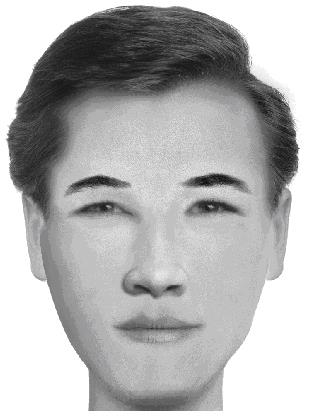
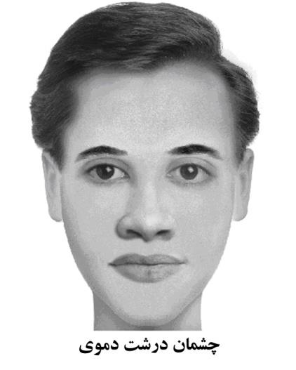
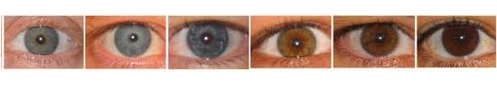
بینائی
- گرم و مرطوب خون (دموی): معتدل
- گرم و خشک صفرا: نظر تیز
- سرد و خشک سودا: نظر میں کمی، بڑھاپے کی نظر یا سودا کے زیادہ ہونے پر رات کو کم دکھائی دینا
- سرد و مرطوب بلغم: بڑھاپے کی نظر
آنکھ کی رطوبتیں
- گرم و مرطوب خون (دموی): زیادہ، اور زرد مائل
- گرم و خشک صفرا: کم، اور زرد مائل
- سرد و خشک سودا: کم
- سرد و مرطوب بلغم: زیادہ، اور سفید مائل
تنفسی نظام
آواز کا زیر و بم
- گرم و مرطوب خون (دموی): بھاری آواز
- گرم و خشک صفرا: آواز بھاری ہوتی ہے، مگر دموی کے مقابلے میں کم؛ صبح کے وقت زیادہ بھاری محسوس ہو سکتی ہے
- سرد و خشک سودا: پتلی آواز
- سرد و مرطوب بلغم: پتلی آواز
سانس
- گرم و مرطوب خون (دموی): گہرا سانس
- گرم و خشک صفرا: تیز اور سوداوی کے مقابلے میں کچھ زیادہ گہرا سانس
- سرد و خشک سودا: تیز اور سطحی سانس
- سرد و مرطوب بلغم: سانس سست ہوتا ہے؛ پھیپھڑوں میں زیادہ تری کے باعث بعض اوقات نیند میں سانس رکنے جیسی کیفیت بھی ہو سکتی ہے
نظام ہضم
منہ کا ذائقہ
- گرم و مرطوب خون (دموی): صبح کے وقت شیرینی
- گرم و خشک صفرا: صبح کے وقت تلخی
- سرد و خشک سودا: صبح کے وقت کھارا ذائقہ
- سرد و مرطوب بلغم: بے مزہ یا ہلکی شیرینی
لعاب دہن
- گرم و مرطوب خون (دموی): منہ مرطوب رہتا ہے؛ پیاس صفراوی مزاج سے کم مگر باقی دو مزاجوں سے زیادہ ہوتی ہے، کیونکہ رطوبت کے باوجود گرمی جلد پیاس پیدا کرتی ہے
- گرم و خشک صفرا: منہ خشک اور پیاس زیادہ
- سرد و خشک سودا: منہ خشک اور پانی کم، مگر پیاس زیادہ نہیں ہوتی
- سرد و مرطوب بلغم: منہ مرطوب اور پانی زیادہ؛ سب مزاجوں سے کم پیاس محسوس کرتے ہیں
قاعدہ: جتنی خشکی اور گرمی زیادہ ہو، اتنی پیاس زیادہ ہوتی ہے۔
ذائقوں کی طرف میلان
- گرم و مرطوب خون (دموی): ترشی کی طرف رغبت
- گرم و خشک صفرا: ترشی کی طرف رغبت
- سرد و خشک سودا: مٹھاس یا نمکینی یا دونوں کی طرف رغبت
- سرد و مرطوب بلغم: نمکینی اور مٹھاس کی طرف رغبت
قاعدہ: جتنا مزاج گرم ہو گا، اتنا ٹھنڈی چیزوں یعنی ترشی کی طرف رغبت بڑھے گی، اور جتنا مزاج سرد ہو گا اتنا گرمی بخش ذائقوں مثلاً مٹھاس، نمکینی اور کبھی گرم تلخیوں جیسے بابونہ یا کاکاؤ کے قہوے کی طرف رجحان بڑھے گا۔
بھوک
- گرم و مرطوب خون (دموی): بھوک زیادہ اور خوراک اچھی
- گرم و خشک صفرا: بھوک کم اور کھانا کم
- سرد و خشک سودا: بھوک زیادہ مگر خوراک کم
- سرد و مرطوب بلغم: بھوک زیادہ، خوراک بھی زیادہ، مگر ہضم کمزور
ہضم کی طاقت
- گرم و مرطوب خون (دموی): ہضم تیز اور اچھا
- گرم و خشک صفرا: ہضم تیز
- سرد و خشک سودا: ہضم سست
- سرد و مرطوب بلغم: سب سے زیادہ سست ہضم
قاعدہ: مجموعی طور پر اگر حرارت زیادہ اور رطوبت معتدل ہو تو ہضم زیادہ مضبوط ہوتا ہے۔
پیٹ کی گڑگڑاہٹ
- گرم و مرطوب خون (دموی): کم
- گرم و خشک صفرا: نہیں ہوتی
- سرد و خشک سودا: نہیں ہوتی
- سرد و مرطوب بلغم: زیادہ ہوتی ہے، کیونکہ رطوبت اور سردی زیادہ ہوتی ہے
قاعدہ: جتنی گرمی زیادہ اور رطوبت کم ہو، اتنی پیٹ کی آواز اور گڑگڑاہٹ کم ہوتی ہے۔
پیٹ پھولنا
- گرم و مرطوب خون (دموی): معدے میں پھولاؤ نہیں ہوتا
- گرم و خشک صفرا: معدے میں پھولاؤ نہیں ہوتا
- سرد و خشک سودا: معدہ زیادہ پھولتا ہے، کیونکہ معدہ کمزور اور ہضم ناقص ہوتا ہے
- سرد و مرطوب بلغم: سب سے زیادہ معدہ پھولتا ہے
قبض
- گرم و مرطوب خون (دموی): نہیں ہوتی
- گرم و خشک صفرا: کبھی ہوتی ہے، اور اس کی بنیاد گرمی اور خشکی ہوتی ہے
- سرد و خشک سودا: ہوتی ہے، اور اس کی بنیاد سردی اور خشکی ہوتی ہے
- سرد و مرطوب بلغم: کبھی ہوتی ہے، لیکن خشک مزاجوں جیسی نہیں؛ رطوبت موجود ہوتی ہے، مگر آنتیں زیادہ رطوبت اور سردی کے باعث کمزور ہو جاتی ہیں اور ان کی دودی حرکت کمزور پڑ جاتی ہے
زبان کا رنگ
- گرم و مرطوب خون (دموی): گہرا سرخ
- گرم و خشک صفرا: زرد مائل، اور غلبہ صفرا میں زبان پھٹ سکتی ہے
- سرد و خشک سودا: گہرا بلکہ جامنی مائل
- سرد و مرطوب بلغم: پھیکا، شیرے جیسا اور سفید مائل
رال ٹپکنا
- گرم و مرطوب خون (دموی): کم
- گرم و خشک صفرا: نہیں
- سرد و خشک سودا: نہیں
- سرد و مرطوب بلغم: زیادہ
منہ کی بو
- گرم و مرطوب خون (دموی): نہیں ہوتی، لیکن اگر مزاج سردی کی طرف مائل ہو جائے تو منہ کی بو بڑھ جاتی ہے اور ہضم کی طاقت کم ہو جاتی ہے
- گرم و خشک صفرا: منہ کی بو ہوتی ہے
- سرد و خشک سودا: منہ کی بو ہوتی ہے
- سرد و مرطوب بلغم: بدبو ہوتی ہے، مگر اس کی اصل وجہ خود منہ نہیں بلکہ معدے کی کمزوری اور ناقص ہضم ہوتی ہے
قدوقامت، ڈھانچا اور جوڑ
موٹاپا اور دبلا پن
- گرم و مرطوب خون (دموی): جسم بھرا ہوا، مضبوط اور عضلانی
- گرم و خشک صفرا: جسم دبلا اور خشک
- سرد و خشک سودا: جسم دبلا اور خشک
- سرد و مرطوب بلغم: جسم میں چربی اور چکنا موٹاپا زیادہ
قد کی بلندی اور پستی
- گرم و مرطوب خون (دموی): قد لمبا
- گرم و خشک صفرا: قد لمبا
- سرد و خشک سودا: صفراوی کے مقابلے میں کچھ کم قد
- سرد و مرطوب بلغم: عموماً قد زیادہ لمبا نہیں ہوتا؛ بلغم کے غلبے کے وقت جسم کی چوڑائی بڑھتی ہے اور اس کے دباؤ سے ڈھانچا دب کر قد کچھ کم رہ جاتا ہے
عضلات
- گرم و مرطوب خون (دموی): عضلات مضبوط اور بھرپور، البتہ صفراوی اور سوداوی کے مقابلے میں اعضا کم کھنچے ہوئے ہوتے ہیں
- گرم و خشک صفرا: عضلات کھنچے ہوئے، باریک اور تکلے جیسے
- سرد و خشک سودا: باریک، کھنچے ہوئے اور کمزور عضلات
- سرد و مرطوب بلغم: عضلات ڈھیلے؛ ان کے سرے نمایاں نہیں ہوتے، بے حسی اور سستی پائی جاتی ہے اور جلد تھک جاتے ہیں
جوڑ
- گرم و مرطوب خون (دموی): بڑے
- گرم و خشک صفرا: دموی کے مقابلے میں باریک
- سرد و خشک سودا: بڑے جوڑ
- سرد و مرطوب بلغم: موٹے مگر دموی کے مقابلے میں نرم تر
سینہ
- گرم و مرطوب خون (دموی): چوڑا اور کشادہ سینہ
- گرم و خشک صفرا: چوڑا مگر دموی سے کم، بعض اوقات کبوتری سینہ
- سرد و خشک سودا: چھوٹا، چپٹا اور تختی نما
- سرد و مرطوب بلغم: قدرے بڑا مگر زیادہ نمایاں نہیں
انگلیاں
- گرم و مرطوب خون (دموی): موٹی انگلیاں
- گرم و خشک صفرا: لمبی، خشک اور تکلے جیسی انگلیاں
- سرد و خشک سودا: لمبی اور خشک انگلیاں
- سرد و مرطوب بلغم: موٹی اور صفرا و سودا کے مقابلے میں زیادہ بھری ہوئی انگلیاں
ناخن
- گرم و مرطوب خون (دموی): ناخنوں کے نیچے سرخ یا شرابی رنگ
- گرم و خشک صفرا: ناخن زرد اور سرخ مائل؛ صفرا بڑھ جائے تو زردی میں اضافہ ہوتا ہے اور شدید خشکی سے ناخن ٹوٹنے لگتے ہیں
- سرد و خشک سودا: ناخن گہرے رنگ کے، اور ان میں ٹوٹ پھوٹ یا طولی لکیریں ہو سکتی ہیں
- سرد و مرطوب بلغم: ناخنوں کے نیچے رنگ ہلکا ہوتا ہے اور ناخن نرم ہوتے ہیں
درمیانی دھڑ
- گرم و مرطوب خون (دموی): پیٹ اور کولہے درمیانے
- گرم و خشک صفرا: درمیانی حصہ دبلا
- سرد و خشک سودا: درمیانی حصہ دبلا
- سرد و مرطوب بلغم: جسم کا درمیانی حصہ چوڑا ہوتا ہے اور نیچے کی طرف جاتے ہوئے ٹانگیں نسبتاً باریک ہو جاتی ہیں
اعضا کی حرکت کی تیزی اور سستی
- گرم و مرطوب خون (دموی): رفتار معتدل مگر تیزی کی طرف مائل
- گرم و خشک صفرا: تیز اور بہت جلد، حتیٰ کہ گفتگو میں بھی
- سرد و خشک سودا: حرکات سست، خشک اور کچھ مشینی انداز کی ہوتی ہیں
- سرد و مرطوب بلغم: حرکات پُرسکون، آہستہ اور سنبھلی ہوئی ہوتی ہیں، حتیٰ کہ گفتگو میں بھی
شانوں کی ساخت
- گرم و مرطوب خون (دموی): چوڑے شانے
- گرم و خشک صفرا: مضبوط مگر دموی سے زیادہ دبلا
- سرد و خشک سودا: شانوں میں کمزوری اور بے حالی
- سرد و مرطوب بلغم: شانوں میں زیادہ جھکاؤ، جو سردی اور رطوبت کے باعث ہوتا ہے
ٹھوڑی
- گرم و مرطوب خون (دموی): ٹھوڑی بڑی
- گرم و خشک صفرا: ٹھوڑی نسبتاً بڑی
- سرد و خشک سودا: ٹھوڑی چھوٹی
- سرد و مرطوب بلغم: دونوں خشک مزاجوں کے مقابلے میں ٹھوڑی زیادہ چوڑی
نمونہ جاتی تصویریں: دموی اور سوداوی ٹھوڑی
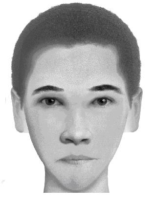
ہونٹوں کا سائز
- گرم و مرطوب خون (دموی): ہونٹ لمبائی اور چوڑائی دونوں کے اعتبار سے بڑے اور نسبتاً موٹے
- گرم و خشک صفرا: لمبائی زیادہ، مگر چوڑائی دموی سے کم
- سرد و خشک سودا: ہونٹ باریک اور چھوٹے
- سرد و مرطوب بلغم: دموی کے مقابلے میں ہونٹ نسبتاً چھوٹے
نمونہ جاتی تصویریں: گرم اور سرد مزاج کے ہونٹ
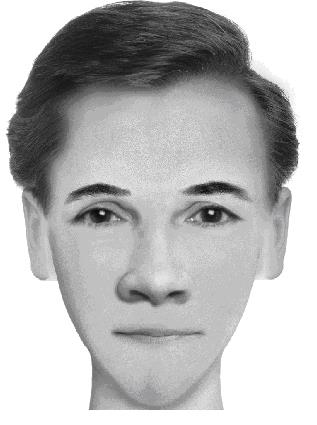
ہونٹوں کا رنگ
- گرم و مرطوب خون (دموی): تروتازہ سرخ اور گہرا سرخ رنگ
- گرم و خشک صفرا: صفرا کے اثر کے مطابق کم سرخی سے زردی مائل رنگ تک، اور اس کے ساتھ واضح خشکی
- سرد و خشک سودا: نسبتاً گہرے اور خشک ہونٹ
- سرد و مرطوب بلغم: دموی کے مقابلے میں ہلکے رنگ کے، اور رطوبت کی وجہ سے زیادہ ڈھیلے اور نرم
سر کا سائز
- گرم و مرطوب خون (دموی): طول و عرض دونوں کے لحاظ سے سب سے بڑا سر
- گرم و خشک صفرا: دموی کے بعد بڑا سر، یعنی لمبائی زیادہ مگر چوڑائی کم
- سرد و خشک سودا: سب سے چھوٹا سر
- سرد و مرطوب بلغم: دموی کے بعد نسبتاً بڑا سر
نمونہ جاتی تصویر: ایک دموی فرد کا چہرہ
پیشانی
- گرم و مرطوب خون (دموی): بلند اور بڑی پیشانی
- گرم و خشک صفرا: دموی کے بعد بڑی پیشانی
- سرد و خشک سودا: سب سے چھوٹی پیشانی
- سرد و مرطوب بلغم: صفراوی کے بعد تیسرے درجے پر
نمونہ جاتی تصویریں: دموی اور سوداوی پیشانی
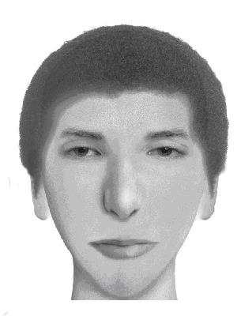
ناک
- گرم و مرطوب خون (دموی): بڑی ناک اور بڑے نتھنے، کیونکہ پھیپھڑوں کو ٹھنڈا رکھنے اور ہواداری کی ضرورت زیادہ ہوتی ہے
- گرم و خشک صفرا: رطوبت کم ہونے کی وجہ سے ناک دموی کی طرح بڑی نہیں ہوتی، مگر نتھنے دموی سے بڑے ہو سکتے ہیں
- سرد و خشک سودا: رطوبت کی کمی اور سردی کے باعث ناک چھوٹی اور نتھنے بھی چھوٹے ہوتے ہیں
- سرد و مرطوب بلغم: ناک سوداوی سے بڑی مگر دموی سے چھوٹی، جبکہ نتھنے نسبتاً چھوٹے ہوتے ہیں
نمونہ جاتی تصویریں: گرم اور سرد مزاج کی ناک
گردن
- گرم و مرطوب خون (دموی): گردن موٹی اور عضلانی
- گرم و خشک صفرا: گردن دبلی مگر چھوٹے عضلات کے ساتھ، تکلے جیسی اور نمایاں
- سرد و خشک سودا: گردن دبلی اور کم عضلات والی
- سرد و مرطوب بلغم: گردن موٹی، چربی والی اور کم عضلاتی
نمونہ جاتی تصویریں: دموی اور سوداوی گردن
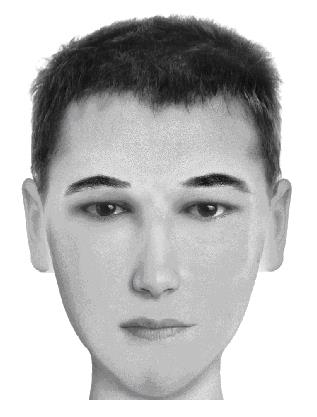
قلب اور عروق
فشار خون
- گرم و مرطوب خون (دموی): گرم قسم کے فشار خون کا رجحان
- گرم و خشک صفرا: دموی کے مقابلے میں کم
- سرد و خشک سودا: فشار خون نہیں ہوتا
- سرد و مرطوب بلغم: سرد فشار خون
نبض
- گرم و مرطوب خون (دموی): بھری ہوئی نبض
- گرم و خشک صفرا: کبھی مضبوط اور کبھی کمزور
- سرد و خشک سودا: کمزور اور چھوٹی نبض
- سرد و مرطوب بلغم: کمزور اور پھیلی ہوئی نبض
دل کی دھڑکن
- گرم و مرطوب خون (دموی): مضبوط اور باقاعدہ
- گرم و خشک صفرا: تیز، اور کبھی بے ترتیب
- سرد و خشک سودا: دل کی بے قاعدگیاں، خصوصاً عروقی سودا کی صورت میں
- سرد و مرطوب بلغم: رطوبت کے بڑھنے کے باعث کمزور
رگوں کا ابھار
- گرم و مرطوب خون (دموی): رگیں مستقل طور پر نمایاں اور نلی کی طرح ابھری ہوئی
- گرم و خشک صفرا: رگیں نمایاں، لیکن سردی میں جلد چھپ جاتی ہیں
- سرد و خشک سودا: کم ابھری ہوئی، باریک اور گہری رنگت والی رگیں
- سرد و مرطوب بلغم: رگیں پوشیدہ رہتی ہیں
جسم کی گرمی اور سردی
- گرم و مرطوب خون (دموی): پورے جسم میں گرمی
- گرم و خشک صفرا: جسم گرم ہوتا ہے، مگر صفراوی بے نظمی میں اوپری حصہ حد سے زیادہ گرم اور نچلا حصہ سرد محسوس ہو سکتا ہے
- سرد و خشک سودا: جسم میں سردی ہوتی ہے، اگرچہ گرمی کی طرف میلان بھی رہتا ہے
- سرد و مرطوب بلغم: پورے جسم میں سردی، مگر گرم چیزوں کی خواہش
جسمانی طاقت
- گرم و مرطوب خون (دموی): حرکت میں گرمی کے ساتھ اچھا ردعمل اور جسمانی طاقت زیادہ
- گرم و خشک صفرا: رفتار زیادہ مگر برداشت کم
- سرد و خشک سودا: جلد تھک جانے والا، برداشت اور رفتار دونوں کم
- سرد و مرطوب بلغم: رفتار کم مگر برداشت نسبتاً زیادہ
باب دوم
مزاجی رویوں کی علامات
تخصصی مزاج شناسی
روحی، نفسیاتی اور مزاجی رویوں کی علامات
مترجم کا نوٹ: اس باب میں رویوں اور عادتوں کی جو فہرستیں آئی ہیں، وہ میلان اور رجحان بتاتی ہیں، کسی کے کردار کا فیصلہ نہیں۔ ان کا مقصد اپنے آپ کو اور اپنے قریبی لوگوں کو بہتر سمجھنا ہے، کسی پر لیبل لگانا یا کسی کی کمزوری کا طعنہ دینا نہیں۔ مزاج بدلتا بھی ہے: عمر، موسم، غذا، بیماری اور حالات سے اس میں فرق آتا رہتا ہے، اس لئے کسی شخص کو ہمیشہ کے لئے کسی ایک خانے میں نہ رکھیں۔
روحی، نفسیاتی اور رویوں سے متعلق حالتیں مزاج شناسی میں صرف کسی فرد کے مزاج کی تشخیص ہی میں مدد نہیں دیتیں بلکہ فرد کی نفسیات اور سماجی رویوں کو سمجھنے میں بھی ہمارے لئے مددگار ثابت ہوتی ہیں۔
مثال کے طور پر ایک کم تجربہ کار شخص شاید کسی فرد کے دماغ میں زیادہ سودا کو فوراً نہ پہچان سکے، لیکن شک و شبہ میں پڑے رہنا، اپنے اندر سمٹے رہنا، منفی سوچ، خوف اور اسی طرح کی دوسری صفات اس عضو میں سودا کی زیادتی کی نشانیاں ہو سکتی ہیں۔
ان رویوں اور روحی و نفسیاتی حالتوں میں جس چیز کی خاص اہمیت ہے وہ پانچویں رکن کو سمجھنا اور پیش نظر رکھنا ہے، جو انسان کو دوسری مخلوقات سے ممتاز کرتا ہے۔ اس پانچویں رکن سے مراد وہی بات ہے جسے کتاب میں دوسری جگہ بیان کیا گیا ہے: انسان چونکہ اشرف المخلوقات ہے اور خداوند نے اپنی روح اس میں پھونکی ہے، اس لئے وہ فطری عناصر پر غلبہ پانے اور ان کے اثرات کو اپنی روح، نفس اور رویے پر قابو میں رکھنے کی قوت رکھتا ہے؛ ورنہ حساب، عذاب اور جزا و سزا سب بے معنی ہو جاتے۔
مثال کے طور پر ایک صفراوی فرد، بلکہ وہ شخص جس پر صفرا غالب ہو، عموماً جلد غصے میں آ سکتا ہے، بداخلاقی دکھا سکتا ہے اور جنسی خواہش کے معاملے میں اپنے آپ پر قابو کھو سکتا ہے۔ لیکن یہی شخص اگر خودسازی، تہذیب نفس، آیات و روایات کی رہنمائی اور یوم جزا پر ایمان سے کام لے تو وہ ان نفسانی، حیوانی اور فطری خواہشات کو، جو چار عناصر سے اٹھتی ہیں، قابو میں لا کر ان پر غالب آ سکتا ہے اور صبر، عفت اور متانت والا انسان بن سکتا ہے۔
پس انسان کی برتری اور اشرفیت کا راز یہی ہے کہ وہ چار عناصر اور ان کے مزاجی اثرات پر قابو پا سکتا ہے، ورنہ جیسا کہ قرآن میں آیا ہے: «أُولَٰئِكَ كَالْأَنْعَامِ بَلْ هُمْ أَضَلُّ» (الأعراف: 179) یعنی وہ جانوروں کی مانند ہیں، بلکہ ان سے بھی زیادہ بھٹکے ہوئے۔
جانور جب پیاسا ہوتا ہے تو بدن میں رطوبت اور تری کی کمی اور خشکی کے بڑھنے کے باعث لاشعوری طور پر علاج بالضد کی طرف جاتا ہے؛ یعنی جہاں پانی یا کوئی تر غذا دیکھتا ہے، اسے کھا پی لیتا ہے تاکہ اپنے بدن میں مزاجی توازن قائم کر سکے۔ لیکن انسان کو بھوک یا پیاس کی حالت میں یہ آزادی نہیں کہ جو کچھ ملے استعمال کر لے؛ اسے صرف حلال پانی اور حلال غذا اختیار کرنی چاہیے۔ یہی وہ مقام ہے جہاں انسان دوسروں کے حق اور شرعی حدود کا خیال رکھتے ہوئے ان نفسانی خواہشات پر قابو پاتا ہے جو عناصر اربعہ کے اثرات کی غلام ہیں، اور اسی بنا پر اشرف المخلوقات بنتا ہے۔
فکری رویہ
- گرم و مرطوب خون (دموی): خوش بین، ہنس مکھ، زندہ دل، بے فکر اور بے تکلف
- گرم و خشک صفرا: تیزہوش اور حاضر جواب
- سرد و خشک سودا: شک و شبہے میں رہنے والا، فیصلہ نہ کر پانے والا، منفی سوچ رکھنے والا، اپنے اندر رہنے والا، حساس اور محتاط
- سرد و مرطوب بلغم: منفی سوچ رکھنے والا، اپنے اندر رہنے والا، حقیقت کو سامنے رکھ کر چلنے والا، حساس، محتاط، ارادے میں کمزور، دوسروں سے جلد متاثر ہونے والا، خود میں گھلنے والا، بھولنے والا، سست ذہن اور افسردگی کی طرف مائل
عملی رویہ
- گرم و مرطوب خون (دموی): تیز، چست اور پُر توانائی
- گرم و خشک صفرا: تیز، چست اور پُر توانائی، مگر بے قرار اور ایک جگہ نہ ٹھہرنے والے
- سرد و خشک سودا: سست، پُرسکون اور کم توانائی والے
- سرد و مرطوب بلغم: سست، پُرسکون اور کم توانائی والے
مہربانی اور اپنائیت
- گرم و مرطوب خون (دموی): مہربان، اپنائیت رکھنے والے، کبھی کبھی عاشق مزاج اور لوگوں سے محبت رکھنے والے
- گرم و خشک صفرا: کبھی عاشقانہ، کبھی بے پروا، اور بعض اوقات دوسروں کی دل آزاری کا سبب بننے والے
- سرد و خشک سودا: محبت میں گرم جوش نہیں ہوتے، مگر طلاق بھی نہیں دیتے (سب سے دیرپا خاندان سوداوی لوگوں کے ہوتے ہیں)؛ معاشرتی تعلقات میں لچک کم رکھتے ہیں، اور اگر لچک ہو بھی تو اکثر پیچھے ہٹنے کی شکل میں ہوتی ہے؛ دوسروں کی محبت ان کے شبہے کا سبب بن جاتی ہے (مثلاً یہ کہ اس نے مجھے کس غرض سے سلام کیا)، اور کسی کی طرف جلد کھنچے نہیں چلے جاتے؛ عموماً کم جذباتی مگر زیادہ سوچ سمجھ کر چلنے والے ہوتے ہیں
- سرد و مرطوب بلغم: محبت کے محتاج، دوسروں سے جلد متاثر ہونے والے، اور تعلقات میں زیادہ نرمی رکھنے والے
صبر (غصے پر قابو)
- گرم و مرطوب خون (دموی): صفراویوں کے مقابلے میں دیر سے غصہ کرتے ہیں، لیکن غصہ آ جائے تو دیر سے ٹھنڈے ہوتے ہیں؛ اس میں ان کی تری کا اثر ہوتا ہے
- گرم و خشک صفرا: غصہ فوری آتا ہے، اور سختی یا بداخلاقی کا رجحان بھی پایا جاتا ہے
- سرد و خشک سودا: جھگڑے، بحث اور انتقام کی طرف مائل ہو سکتے ہیں؛ اندرونی غصہ رکھتے ہیں، خود میں گھلتے رہتے ہیں اور کھل کر مقابلہ کرنے کی طاقت کم ہوتی ہے
- سرد و مرطوب بلغم: بہت دیر سے غصہ کرتے ہیں اور زیادہ رطوبت کی وجہ سے ان میں لچک بھی زیادہ ہوتی ہے
قاعدہ: مجموعی طور پر رطوبت کی کمی اور حرارت کی زیادتی اعصاب کو زیادہ چڑچڑا، غصے کو زیادہ تیز، اور جھگڑالو پن کو حد سے بڑھا سکتی ہے۔
رجحانات اور دلچسپیاں
- گرم و مرطوب خون (دموی): ادب اور موسیقی میں دل چسپی، شاعری کی صلاحیت، فطرت سے محبت، عشق و محبت کی طرف رغبت، تنوع پسندی، گرمیوں میں جلد بے حال ہونا، اور نئی چیزیں پیدا کرنے اور بنانے کی زیادہ صلاحیت (شاعر، اور مختلف شعبوں میں موجد)، یہاں تک کہ منفی رخ میں بڑے فراڈ کرنے کی صلاحیت بھی
- گرم و خشک صفرا: کبھی ادب کی طرف اور کبھی ریاضی کی طرف جھکاؤ؛ خزاں اور سردی کا موسم پسند کرتے ہیں، گرمی سے جلد اکتاتے ہیں، ٹھنڈے پانی یا ٹھنڈے غسل کی طرف مائل ہوتے ہیں، اور حمام میں زیادہ دیر رہنا پسند نہیں کرتے
- سرد و خشک سودا: حساب کتاب اور فنی مسائل میں دلچسپی رکھتے ہیں، اور بہار اور گرمی کا موسم زیادہ پسند کرتے ہیں
- سرد و مرطوب بلغم: عقلی علوم اور ریاضیات میں دل چسپی رکھتے ہیں اور باریک و نازک کاموں میں دلچسپی لیتے ہیں
تدبیر، سوچ اور فیصلہ سازی
- گرم و مرطوب خون (دموی): زندگی میں بڑے قدم اٹھانے والے، بلند ارادہ، دوراندیش، خطرہ مول لینے کی ہمت رکھنے والے، اور خود اعتمادی میں مضبوط
- گرم و خشک صفرا: حساس، آگے کی سوچ رکھنے والے، کبھی خیالوں میں رہنے والے، اور کبھی مضبوط ارادے والے تو کبھی ڈھیلے
- سرد و خشک سودا: بہت باریک بینی سے دیکھنے والے، یہاں تک کہ بعض اوقات جزئیات میں الجھ کر بڑے پہلو بھول جاتے ہیں؛ خطرہ مول لینے سے بچتے ہیں، مگر نہایت گہری نظر اور ہر طرف دھیان رکھنے والے ہوتے ہیں
- سرد و مرطوب بلغم: ارادے میں کمزور، خطرہ مول لینے کی ہمت کم، بڑے منصوبے بنانے میں جھجھک، سوچ میں ربط کم، توجہ جلد بٹنے والی، اور قریب کی چیزوں پر نظر رکھنے والے مگر اپنے انداز میں حقیقت کو سامنے رکھنے والے
ذہنی تیزی اور حافظہ
- گرم و مرطوب خون (دموی): ذہنی تیزی زیادہ؛ نئی چیز ایجاد کرنے اور دریافت کرنے کی صلاحیت رکھتے ہیں، موجود حالت پر آسانی سے راضی نہیں ہوتے، اور حافظہ بھی اچھا ہوتا ہے
- گرم و خشک صفرا: تیز فہمی زیادہ؛ ذہین ہوتے ہیں مگر پڑھتے یا سیکھتے وقت دھیان جما کر بیٹھنے کی عادت کم ہوتی ہے
- سرد و خشک سودا: ہر طرف نظر رکھنے والے اور ذہین ہوتے ہیں؛ یاد زیادہ کرتے ہیں، اگرچہ گرم مزاجوں کے مقابلے میں یاد کرنے میں زیادہ وقت لگ سکتا ہے، مگر ایک بار سیکھ لیں تو بھولتے نہیں
- سرد و مرطوب بلغم: ذہنی رفتار سست ہوتی ہے، مگر باتوں کو لفظ بہ لفظ یاد رکھنے کی خوبی ہو سکتی ہے
دلیری
- گرم و مرطوب خون (دموی): دلیر
- گرم و خشک صفرا: دلیر، اور بہت سے مواقع پر حد سے بڑھی ہوئی دلیری بھی دکھا سکتے ہیں
- سرد و خشک سودا: ڈرنے والے، مگر کبھی حملہ آور انداز اپنا لیتے ہیں؛ اگر ان پر حملہ کیا جائے تو پیچھے ہٹ جاتے ہیں (کتے جیسا رویہ): جتنا تم پیچھے ہٹو گے وہ اتنا ہی آگے بڑھے گا، اور جتنا تم آگے بڑھو گے وہ اتنا ہی پیچھے ہٹے گا
- سرد و مرطوب بلغم: ڈرپوک، اور عموماً مسائل کو نرمی اور سکون سے حل کرنے کی کوشش کرتے ہیں
جنسی خواہش
- گرم و مرطوب خون (دموی): جنسی خواہش اور جنسی صلاحیت دونوں زیادہ
- گرم و خشک صفرا: جنسی خواہش زیادہ، مگر دموی مزاج کے مقابلے میں جنسی صلاحیت کم
- سرد و خشک سودا: جنسی خواہش زیادہ، مگر جنسی صلاحیت کم
- سرد و مرطوب بلغم: جنسی خواہش بھی کم اور جنسی صلاحیت بھی کم
دباؤ کے وقت ردعمل
- گرم و مرطوب خون (دموی): نسبتاً معتدل ردعمل دیتے ہیں؛ ان کی رطوبت شور دبانے والے فلٹر کی طرح کام کرتی ہے اور عصبی ردعمل کو دبا دیتی ہے
- گرم و خشک صفرا: تیز مگر وقتی ردعمل دیتے ہیں
- سرد و خشک سودا: دباؤ کے وقت اپنے اندر سمٹ جاتے ہیں، ایک ہی بات دہراتے رہ سکتے ہیں، اور بار بار ایک ہی طرح کا رویہ دکھاتے ہیں
- سرد و مرطوب بلغم: اپنے ردعمل کو زیادہ ظاہر نہیں کرتے
خیال کا انداز
- گرم و مرطوب خون (دموی): خیال پرداز، اونچی امنگوں والے، اور کبھی کبھی غیر عملی خیال باندھنے والے
- گرم و خشک صفرا: ذہنی الجھن، بے قراری، فکری بے ثباتی، اور کچھ شوخی یا کھیل پن
- سرد و خشک سودا: خیال اور حقیقت کو کبھی ایک دوسرے کے بہت قریب لے آتے ہیں، اپنی خیالی باتوں کو سچ مان سکتے ہیں، مسلسل فکرمند، شک و شبہے میں رہنے والے، فیصلہ نہ کر پانے والے اور دوسروں پر جلد شبہ کرنے والے ہو سکتے ہیں، بدگمان، اور اپنا نمونہ منفی رکھتے ہیں، یعنی اپنے سے بدتر شخص کو اپنے لئے معیار بنا لیتے ہیں
- سرد و مرطوب بلغم: ماضی کی طرف دیکھنے والے، حساس، کینہ رکھنے والے، سیکھنے میں کم دلچسپی والے، سمجھوتہ پسند، کبھی بیماری کا بہانہ بنانے والے، اور پیچھے ہٹنے یا منفی سوچ کی طرف زیادہ مائل
نیند کی مقدار
- گرم و مرطوب خون (دموی): زیادہ
- گرم و خشک صفرا: کم
- سرد و خشک سودا: بہت کم
- سرد و مرطوب بلغم: بہت زیادہ
نیند کی ضرورت
- گرم و مرطوب خون (دموی): درمیانی
- گرم و خشک صفرا: سب سے کم
- سرد و خشک سودا: کم
- سرد و مرطوب بلغم: سب سے زیادہ؛ ممکن ہے نو گھنٹے نیند کے بعد بھی کمی محسوس ہو
آواز پر حساسیت اور نیند میں ردعمل
- گرم و مرطوب خون (دموی): کم
- گرم و خشک صفرا: زیادہ
- سرد و خشک سودا: بہت زیادہ
- سرد و مرطوب بلغم: بہت کم؛ اس حد تک کہ اردگرد شور ہو تب بھی نیند برقرار رہ سکتی ہے
روحانیت کی طرف رجحان
- گرم و مرطوب خون (دموی): روحانی رجحان نسبتاً زیادہ
- گرم و خشک صفرا: روحانیت کی طرف مائل ہو سکتے ہیں، مگر یہ کیفیت مستقل نہیں رہتی
- سرد و خشک سودا: روحانیت کی طرف رجحان کم
- سرد و مرطوب بلغم: اس رجحان کا ظہور کم ہوتا ہے اور اس طرف حرکت بھی سست رہتی ہے
سخاوت
- گرم و مرطوب خون (دموی): سخی
- گرم و خشک صفرا: سخاوت کم، اور خشکی کا اثر غالب
- سرد و خشک سودا: مال کی حرص رکھنے والے اور اکثر شکوہ کرنے والے
- سرد و مرطوب بلغم: صفراوی اور سوداوی سے بہتر، مگر دموی سے کم
قاعدہ: عمومی طور پر جتنی خشکی زیادہ ہو، بخیلی یا تنگ دلی کا امکان بھی اتنا ہی بڑھتا ہے؛ اسی لئے فارسی محاورے میں ایسے شخص کو «ناخن خشک» کہا جاتا ہے۔
سونگھنے اور سننے کی حس
- گرم و مرطوب خون (دموی): سونگھنے اور سننے کی حس معتدل
- گرم و خشک صفرا: تیز
- سرد و خشک سودا: بہت تیز
- سرد و مرطوب بلغم: کمزور
ظاہری رویہ اور خلق
- گرم و مرطوب خون (دموی): خوش اخلاق، خوش رو اور خندہ پیشانی والے
- گرم و خشک صفرا: بہت بولنے والے، بدلتے مزاج کے، جھگڑالو، تیز مزاج، بے قرار، اور کبھی بہت دلیر تو کبھی پُرسکون
- سرد و خشک سودا: اپنے آپ کو معیار بنا کر دوسروں کو پرکھنے والے (جو ان جیسے ہوں انہیں پسند کرتے ہیں؛ جیسے کنجوس آدمی کو اپنے سے بڑا کنجوس بھلا لگتا ہے)، زیادہ بولنے والے، خود میں گھلنے والے، اپنے اندر رہنے والے، اور بعض اوقات اعصابی جھٹکوں (ٹِک) اور کپکپاہٹ کا شکار
- سرد و مرطوب بلغم: حرکات میں سست اور دھیمے، کبھی چپکے سے دوسروں کا نقصان کرنے والے، مگر ظاہر میں سوچ سمجھ والے، سمجھ دار اور متوازن
نظم و ضبط
- گرم و مرطوب خون (دموی): نامنظم
- گرم و خشک صفرا: شدید گرمی اور بے حوصلگی کے باعث نظم و ضبط نہیں رکھتے
- سرد و خشک سودا: منظم، اور ایک خشک یا سخت قسم کا نظم و ضبط رکھنے والے
- سرد و مرطوب بلغم: منظم
غم اور غصہ
- گرم و مرطوب خون (دموی): کم
- گرم و خشک صفرا: وقتی
- سرد و خشک سودا: خوشی کم محسوس کرتے ہیں، مگر غم زیادہ کھاتے ہیں
- سرد و مرطوب بلغم: خوشی کم محسوس کرتے ہیں، مگر غم زیادہ کھاتے ہیں
کام انجام دینے کا انداز
- گرم و مرطوب خون (دموی): ایک ہی طرح کے بار بار ہونے والے کاموں میں کم دل چسپی رکھتے ہیں
- گرم و خشک صفرا: ہر وقت ایک کام سے دوسرے کام کی طرف چھلانگ لگانے والے (مصنف اسے «خلقِ گنجشکی» یعنی چڑیا جیسی طبیعت کہتے ہیں)، ادھورے کام چھوڑ دینے والے، بعض معاملات میں اصرار کرنے والے، اور بعض اوقات کام سے جی چرانے والے
- سرد و خشک سودا: دفتری اور انتظامی ماحول میں زیادہ پائے جاتے ہیں، دوسروں پر نظر رکھنے والے، اچھی تفتیش یا جانچ پڑتال کرنے والے (ان کی رپورٹیں پڑھیں، مگر ان کی تجاویز پر عمل نہ کریں)، سنبھلے ہوئے، محتاط، کم توانائی مگر کام جاری رکھنے کی صلاحیت والے
- سرد و مرطوب بلغم: حساب سے چلنے والے، محتاط، باریک کام کرنے والے، اور اکثر معاملات میں آسانی پسند
باب سوم
مزاج شناسی کا اطلاق
(غذا، معاشرت، انتظام، خاندان اور شادی میں)
مترجم کا نوٹ: اس باب کی مثالیں مصنف کے اپنے ماحول، یعنی ایران، سے لی گئی ہیں: وہاں کے شہر، کھانے، رسمیں اور معاشرتی حالات۔ انہیں بدلا نہیں گیا، کیونکہ اصل بات مثال نہیں بلکہ اس کے پیچھے کا اصول ہے۔ پڑھتے ہوئے مثال کی جگہ اپنے ماحول کی ویسی ہی صورت رکھ کر دیکھیں، بات اسی طرح لاگو ہوگی۔
غذا میں مزاج شناسی کا اطلاق
ہر انسان چار اخلاط کے ملے جلے اثر کا نتیجہ ہے:
- صفرا: گرم و خشک
- دم: گرم و تر
- بلغم: سرد و تر
- سودا: سرد و خشک
گرمی اور خشکی ان چاروں اخلاط میں سانجھی خوبی ہے۔ اسی بنیاد پر لوگ دو بڑے گروہوں میں بٹ جاتے ہیں: گرم مزاج افراد اور سرد مزاج افراد۔
جسم میں توازن رکھنے کے لئے سرد مزاجوں کو گرم غذا اور گرم مزاجوں کو سرد غذا کھانی چاہیے۔ جب بھی غلط غذا کھائی جائے تو بیماری یا کام کاج میں خلل پیدا ہوتا ہے، جس کی کم سے کم شکل سستی اور کمزوری ہے۔ درست غذا وہ ہے جس میں لوگ اپنے لئے مناسب غذا کو پہچانتے ہوں، اور جب غذا کا نظام اس اصول (مزاج شناسی) کی بنیاد پر نہ بنایا جائے تو ویسی ہی گڑبڑ پیدا ہوتی ہے جیسی بیسویں صدی میں دیکھی گئی۔ جدید غذائی نظام میں چونکہ یہ بات سمجھی نہیں گئی، اس لئے کھانوں اور دواؤں کے ضمنی اثرات («سائیڈ ایفیکٹس») کا تصور بنا لیا گیا۔ مثال کے طور پر کھیرا ایک سرد غذا ہے۔ یہی کھیرا اگر کوئی سرد مزاج شخص کھائے تو اس کے پیٹ میں درد ہو جاتا ہے، لیکن ایک گرم مزاج شخص اسی کھیرے کے کئی دانے کھا جاتا ہے اور لطف بھی اٹھاتا ہے! ہم یہ نہیں کہہ سکتے کہ اس کھیرے کے سائیڈ ایفیکٹس ہیں، کیونکہ بعض لوگوں کو اسے کھانے سے پیٹ درد ہو جاتا ہے! نہیں، بات یہ نہیں ہے، بلکہ یہاں اسے غلط جگہ استعمال کیا گیا۔ سرد مزاج شخص کو (کچھ اصولوں کی پابندی کے بغیر) کھیرا نہیں کھانا چاہیے۔ لیکن یہی کھیرا گرم مزاجوں کے لئے کم از کم دو فائدے رکھتا ہے: ایک تو یہ کہ ان کا پیٹ بھر دیتا ہے! اور دوسرا یہ کہ انہیں غصے میں آنے سے بچاتا ہے۔
«صفراوی آدمی اگر ٹھنڈی تاثیر کی چیز نہ کھائے تو غصے میں آ جاتا ہے۔ ایک سمجھ دار بیوی اگر یہ چاہے کہ اس کا صفراوی شوہر غصے میں نہ آئے تو اسے ٹھنڈی تاثیر کی چیز دیتی ہے؛ لیموں کا شربت یا کیوی دیتی ہے، کیوی چھیل کر کہتی ہے: لیجیے، کھائیے!... اگر اسے کیوی نہ دے تو وہ غصے میں ہی رہتا ہے۔ لیکن اگر یہی خاتون غذاؤں کے مزاج سے واقف نہ ہو تو اپنے گرم مزاج شوہر کو زعفران کا شربت پلا دیتی ہے، اور ظاہر ہے کہ وہ غصے میں آ جاتا ہے (زعفران گرم ہے اور اس کا شوہر بھی گرم مزاج)۔»
صحت کی حفاظت اور علاج، دونوں میں ان چاروں اخلاط کا ملا جلا اثر جسم میں توازن پر آ جانا چاہیے۔
- صحت: وہ حالت ہے جس میں چاروں اخلاط جسم میں توازن میں ہوں۔
- حفظانِ صحت: چاروں اخلاط کے توازن کو قائم رکھنا۔
- علاج: کھوئے ہوئے توازن کو واپس لانا (اخلاط میں توازن پیدا کرنا)۔
اسی بنیاد پر ہم طب کے ان بیس سے زیادہ تخصصی شعبے بنانے کو (ایک دو شعبوں کے سوا) بے فائدہ سمجھتے ہیں، کیونکہ ان میں سے کوئی بھی ان چار اخلاط میں توازن پیدا نہیں کر سکتا۔
معاشرت میں مزاج شناسی کا اطلاق
اگر اس خاندانی اکائی کو بڑھایا جائے تو ایک محلہ بن جاتا ہے۔ اگر اس محلے کے لوگوں کا غالب مزاج گرم ہو تو ہمیں ایسا محلہ ملے گا جس پر ہمدردی اور مہمان نوازی کی فضا چھائی ہوگی۔ جو شخص اس محلے میں آئے گا، اس کی یاد اس کے ساتھ رہ جائے گی، کیونکہ محلے والے، دکان دار اور دوسرے لوگ اسے ہاتھوں ہاتھ لیں گے اور اس سے گرم جوشی سے پیش آئیں گے۔
اور اگر اس محلے میں سرد مزاج لوگ زیادہ ہوں تو آپ دیکھیں گے کہ مثلاً کسی حادثے میں ایک لاش زمین پر پڑی ہے، مگر کوئی اسے اٹھاتا نہیں۔
«... کہتا ہے: کہیں مجھ سے یہ نہ کہہ دیں کہ تم نے اسے ٹکر ماری ہے... آس پاس والے کہتے ہیں: ارے، صاف ظاہر ہے کہ اسے موٹر سائیکل نے ٹکر ماری ہے، آپ کا اس سے کیا تعلق... کہتا ہے: نہیں، آخر سو میں ایک امکان تو ہے کہ مجھے ہی پکڑ لیں...»
ان کے رویے میں نیکی کی طرف جھکاؤ نہیں ہوتا (وہ حساب کتاب سے چلتے ہیں)۔ آخر آپ دیکھیں گے کہ ایک گرم مزاج شخص، جو اس محلے میں مہمان ہے، آتا ہے اور اس لاش کو اٹھا لیتا ہے! اب اس نقطۂ نظر سے ماہرینِ سماجیات جا کر تحقیق کریں: وہ لوگ جو حادثوں کے شکار اور بڑی مشکلوں میں گھرے لوگوں کو سنبھالتے ہیں، کون ہوتے ہیں؟ ... ہم کہتے ہیں کہ وہ گرم مزاج ہوتے ہیں۔ اگر اس کے چہرے پر نظر ڈالو تو دیکھو گے کہ وہ موٹے ہونٹوں، گلابی چہرے، پھولے ہوئے بالوں، چوڑے سینے، بھاری کندھوں اور ابھری ہوئی رگوں والا شخص ہے۔
اگر کسی ملک کے لوگوں میں سرد مزاج غالب ہو تو ایسے ملک کبھی انقلابوں اور بڑی تبدیلیوں کی زد میں نہیں آتے۔ وہ ہمیشہ پُرامن سیاسی راستے اور بات چیت کے ذریعے مسئلے سلجھانے کی کوشش کرتے ہیں۔ یہ لوگ فوج اور حملے کی طاقت بڑھانے کے بجائے اپنی جاسوسی اور خفیہ اداروں کو مضبوط کرتے ہیں۔ چونکہ سرد ہیں، اس لئے ان میں چھپ کر چالیں چلنا اور گھما پھرا کر کام کرنا زیادہ ہوتا ہے۔ اگر فوج تیار بھی کریں تو اس کے اندر کئی تہہ در تہہ خفیہ نظام بنا لیتے ہیں؛ مثلاً جرمن فوج کا خفیہ ادارہ ایس ایس افسروں کے اندر ایس ایس افسر بناتا ہے۔
جن معاشروں میں گرم مزاج غالب ہو، ان میں انقلابوں، بڑی تبدیلیوں اور 180 درجے پلٹ جانے کی صلاحیت پائی جاتی ہے۔ مشرقی معاشرے ہمیشہ ایسی تبدیلیوں کی زد میں رہتے ہیں جو سماجی نظام کو الٹ دیتی ہیں۔ دنیا میں رائج سیاسی معادلے ان معاشروں میں کام نہیں کرتے۔ سامنے موجود لوگوں کے اعداد و شمار پر بنائے گئے حقیقت پسندانہ معادلے بھی ان معاشروں میں الٹا نتیجہ دیتے ہیں۔ ایران کے انتخابات میں بھی یہی بات دیکھی جا سکتی ہے: ایک گمنام شخص اچانک ابھر کر سامنے آ جاتا ہے، پھر یہی نمایاں شخص اچانک دفن ہو جاتا ہے اور ایک اور گمنام شخص مقبولیت کے عروج پر پہنچ جاتا ہے۔ سیاست کے یہ الٹے سیدھے رویے مشرقی معاشروں کے سماجی مزاج کا حصہ ہیں، اور ہنرمند وہ ہے جو معاشرے کی نبض ٹھیک ٹھیک پہچان لے۔
انتظام و قیادت میں مزاج شناسی کا اطلاق
ہر انسان اپنے اندر کے اخلاط کے مطابق اچھی اور بری صلاحیتیں دکھاتا ہے: یا تو وہ بڑی تصویر دیکھنے والا ہوتا ہے یا باریک بین؛ یا اس میں پیروی کی صلاحیت ہوتی ہے یا قیادت کی۔
اگر صفراویوں کو انتظامی ذمہ داری دے دیں تو وہ بعض اوقات بہت جوش اور توانائی سے بھرے ہوں گے، مگر بعض اوقات سست اور ڈھیلے بھی پڑ جائیں گے، کیونکہ صفرا آگ کی جنس سے ہے: یکایک شعلہ بن کر اوپر اٹھتا ہے اور یکایک بجھ کر نیچے آ جاتا ہے۔ کبھی ان میں بہت توانائی ہوتی ہے اور کبھی اتنے ڈھیلے پڑ جاتے ہیں کہ اپنا طے شدہ روزمرہ کا کام بھی نہیں کرتے۔
دموی انسان انجانے میں ہی منتظم کی طرح برتاؤ کرتا ہے، اپنے میل جول کو اچھی طرح سنبھالتا ہے، بڑی تصویر دیکھتا ہے اور وسیع سوچ رکھتا ہے۔
سوداوی انسان باریک بین، حساس اور بہت محتاط ہوتا ہے۔ باریکیوں میں اتنا کھو جانے کا نتیجہ یہ ہوتا ہے کہ وہ معاملات کا بڑا آپسی جوڑ بھول جاتا ہے۔ اگر ہم سوداوی افراد کو انتظام کے سربراہ بنا دیں تو وہ پورا سماجی نظام اور سارے وسائل باریکیوں، بے کار باتوں، جاسوسیوں اور نکتہ چینیوں پر لگا دیں گے اور معاشرے کے بڑے مستقبل (مثلاً اگلے 200 سال) سے غافل رہیں گے۔
«... اگر ایک دموی شخص کہیں جانچ پڑتال کے لئے جائے تو ظاہر ہے کہ اس کا استقبال کیا جاتا ہے اور چائے، مشروب وغیرہ سے اس کی خاطر داری کی جاتی ہے۔ یہ دموی شخص واپس آ کر کہتا ہے: ‹اس اللہ کے بندے کے خلاف جو باتیں کی جا رہی تھیں وہ سب بے بنیاد تھیں، یہ تو اچھا آدمی ہے›، کیونکہ اس کی آؤ بھگت کی گئی۔
لیکن اگر ایک سوداوی شخص جانچ پڑتال کے لئے جائے تو اپنے آپ سے کہتا ہے: ‹مجھے شک ہے؛ میرا خیال ہے کہ اس کی خاطر داری ضرورت سے زیادہ تھی۔ دال میں کچھ کالا ہے، وہ کچھ چھپانا چاہتا ہے، اسی لئے اتنی عزت دے رہا ہے۔ ایک فون کا جواب بھی اس نے بہت مختصر دیا، حالانکہ تفصیل سے دے سکتا تھا۔ البتہ جب وہ بیت الخلا گیا تو میں نے فون نمبر پڑھ لیا؛ بعد میں پتا کروں گا کہ کون تھا۔›
وہ ہر رویے کا الٹا مطلب نکالتا ہے۔»
بازار میں ایک شخص تھا جسے اگر کوئی سلام کرتا تو کہتا: «مطلب؟» وہ سمجھتا تھا کہ اسے ضرور کوئی کام ہوگا جو بعد میں بتائے گا، اسی لئے سلام کر رہا ہے۔
منتظم کے لئے ضروری ہے کہ سوداویوں سے جانچ پڑتال کا کام ضرور لے، کیونکہ اسے اپنے ادارے کے سماجی، مالی اور انتظامی معاملات کی تہہ اور آگے پیچھے کی خبر ہونی چاہیے۔ ان کی رپورٹیں پڑھیں، مگر ان کی تجاویز پر عمل نہ کریں، ورنہ آپ کو روز اپنا ادارہ الٹنا پلٹنا پڑے گا۔
دموی اکیلے ہی بڑے بڑے قدم اٹھاتے ہیں۔ وہ کام کو آگے بڑھاتے ہیں، اور اگر ان کے پاس بلغمی مشیر ہوں تو اپنے پاؤں تلے کی زمین بھی نہیں بھولتے؛ لیکن اگر یہ مشیر نہ ہوں تو یا شان سے آگے بڑھتے ہیں یا شان سے ہار جاتے ہیں! بہرحال، دنیا کے کامیاب رہنما دموی رہنما رہے ہیں اور بلغمی کبھی قیادت کی سطح تک نہیں پہنچے۔ سرد مزاج لوگوں کے پاس گہری فنی معلومات ہونے سے بھی وہ گرم نہیں بن جاتے۔ عورتیں اچھی مشیر ہوتی ہیں مگر اچھی فیصلہ ساز نہیں، کیونکہ ان پر سردی غالب ہوتی ہے۔ جو باریک نکتے یہ دیکھ سکتی ہیں، دموی ان پر توجہ نہیں دیتے؛ اور جو شخص بڑے قدم اٹھانا چاہے، اگر باریک باتوں کا خیال نہ رکھے تو کہیں نہ کہیں ہار جاتا ہے۔ ایک دموی منتظم بڑی بڑی رقموں کے چیک کاٹتا ہے، اس لئے اس کا حساب دار بلغمی ہونا چاہیے تاکہ یاد دلائے کہ «یہ کہاں سے ادا ہوں گے؟» بڑے فیصلے باریک پہلوؤں کا خیال رکھتے ہوئے ہونے چاہئیں۔
اگر کوئی نظام دور اندیشی سے کام لے کر منتظم تیار کرنا چاہتا ہے تو اسے انہی مزاجی خوبیوں والے لوگ چننے چاہئیں اور پھر انہیں معلومات دینی چاہئیں۔ ہم کہتے ہیں کہ خاندانی نظام کا توازن بھی گرم اور سرد کا توازن ہے۔
خاندان میں مزاج شناسی کا اطلاق
- صفراوی: گرم و خشک ہے۔
- دموی: گرم و تر ہے۔
- بلغمی: سرد و تر ہے۔
- سوداوی: سرد و خشک ہے۔
ہم میں سے ہر ایک کا ان چار قسموں میں سے ایک خاص مزاج ہوتا ہے۔ چونکہ گرمی اور سردی ان میں سانجھی ہیں، اس لئے لوگوں کو دو بڑے گروہوں میں بھی بانٹا جا سکتا ہے:
- گرم مزاج لوگ
- سرد مزاج لوگ
(مزاجوں کی خصوصیات اور پہچان کا طریقہ آگے بیان کروں گا، مگر پہلے ان کے اطلاق کی طرف اشارہ کرتا ہوں۔)
مزاجوں کے میل کی بنیاد پر میاں بیوی کی زندگی کی کچھ خصوصیات:
سرد مزاج بیوی، اگر شوہر بھی سرد مزاج ہو:
ایسا گھرانہ بنتا ہے جو بہت سرد، بے پروا، نرم، پرسکون اور خطرے سے دور رہنے والا ہوتا ہے، اور رشتہ داروں کے ساتھ اس گھرانے کا برتاؤ بہت ناپا تلا اور حساب کتاب والا ہوگا۔
«اگر بیوی کے رشتہ داروں میں سے کوئی گل مریم کی ایک شاخ لے کر ملنے آئے تو بعد میں یہ بھی ایک ہی شاخ واپس لے جاتے ہیں، اور ایک دوسرے سے کہتے ہیں: کہیں ایک پھول اور بڑھا کر نہ دے دینا! حساب حساب ہے۔»
سرد مزاج بیوی، اگر شوہر گرم مزاج ہو:
اس صورت میں بیوی اپنے شوہر کے قد و قامت پر فخر کرتی ہے! اس کے خطرے والے کاموں کو رشتہ داروں میں بڑھا چڑھا کر سناتی ہے، حالانکہ خود ان کاموں کے انجام سے ڈرتی ہے، کیونکہ وہ سرد ہے اور ڈرپوک ہے۔ لیکن ساتھ ہی جب اپنا ہاتھ شوہر کے ہاتھ میں دیتی ہے تو اس کی گرمی سے پوری توانائی پاتی ہے اور پورے سکون میں آ جاتی ہے، کیونکہ وہ سرد ہے اور اسے گرمی کی ضرورت ہے۔
سرد بیوی پوری طرح شوہر کے پیچھے چلتی ہے، مگر «دموی» مرد کی اونچی اڑان کو اپنے حساب کتاب اور خطرے سے بچنے کی عادت سے متوازن کر دیتی ہے۔
صفراوی بیوی، اگر شوہر بھی صفراوی ہو:
جب تک ٹھنڈے رہتے ہیں، عاشقانہ زندگی گزارتے ہیں! لیکن اگر دونوں گرمی کے عروج پر پہنچ جائیں تو ان کی زندگی ہوا میں اڑ جاتی ہے! اس کے باوجود وہ چند منٹ کی روٹھا روٹھی بھی نہیں سہہ سکتے، کیونکہ صفرا تھوڑی دیر کے لئے اوپر جاتا ہے اور پھر فوراً بیٹھ جاتا ہے، اور جب بیٹھ جاتا ہے تو صفرا کی ضد کی طرف لوٹتا ہے اور بلغم بن جاتا ہے۔ اس حالت میں چونکہ بلغم سردی ہے، اسے گرمی کی ضرورت ہوتی ہے، اور یہاں گرمی کا مطلب ہے صلح۔ آخر دونوں میں سے جس کی «سردی» زیادہ ہو وہی صلح کے لئے پہلا قدم بڑھاتا ہے (کیونکہ وہ دوسرے سے زیادہ گرمی کا محتاج ہے)، اور جس میں گرمی زیادہ ہے وہ ذرا ناز نخرے دکھاتا ہے!
دموی بیوی، اگر شوہر بھی دموی ہو:
تاریخ کے مشہور اور داستانوں والے عاشق سب دموی تھے، عورتیں بھی اور مرد بھی۔ بدن میں دم کی شدت جتنی زیادہ ہو، عاشقانہ رویہ اتنا ہی بھرپور اور ہر طرف پھیلا ہوا ہوتا ہے اور اپنے زمانے کے رواج سے ہٹ کر دلیرانہ قدم اتنے ہی زیادہ اٹھاتے ہیں۔
دم جتنا زیادہ ہو، رسم و رواج توڑنے کا حوصلہ اتنا زیادہ، اور مزاج جتنا سرد ہو، اتنا ہی قانون کا پابند اور آداب کا خیال رکھنے والا۔
اچھی اور آئیڈیل زندگی کے لئے مرد کی گرمی عورت کی گرمی سے زیادہ ہونی چاہیے، ورنہ عورت گھر کی حاکم بن جاتی ہے۔
مصنف ایران سے اپنی ایک یاد سناتے ہیں:
«ہماری ایک مکان مالکن کرمانی تھیں اور گرم طبیعت کی تھیں؛ یہ خاتون گھر گرہستی پر بالکل توجہ نہیں دیتی تھی۔ جب ہم پوچھتے کہ آپ کہاں تھیں؟ تو مثلاً کہتی: کرمان گئی تھی پستہ بونے۔ کبھی جو آ جاتی تو میں پوچھتا: کیسے آنا ہوا؟ کہتی: میرے شوہر نے گاڑی کا سودا کیا اور دھوکا کھا گیا، میں اپنے شوہر کا مسئلہ سلجھانے آئی ہوں!... نام کی عورت تھی، مگر درحقیقت شوہر وہی تھی۔»
زندگی کے نظام میں ایسی صورتیں موجود ہیں۔ اس حالت میں قدرتی طور پر زندگی کا توازن بدل جاتا ہے اور ایک اور شکل لے لیتا ہے۔ ایسے افراد (جن کا مزاج زیادہ گرم ہو) خاندان میں سربراہ بن جاتے ہیں اور پورا کنبہ اپنے معاملات میں انہی کی طرف رجوع کرتا ہے۔ یہ لوگ قدرتی طور پر بچپن ہی سے اپنے لئے اونچی جگہ بنا لیتے ہیں۔ اگر چند ہم عمر بچوں کو ایک ساتھ بٹھا دیں تو جو بچہ گرم ہے وہی کھیل کا سردار بن جاتا ہے اور انجانے میں ہی حکم چلاتا ہے۔ ممکن ہے خاندان کے پڑھے لکھے افراد خود بھی نہ جانتے ہوں کہ وہ مثلاً اس ان پڑھ شخص کی پیروی کیوں کرتے ہیں، انجانے میں اس کے پاس کیوں چلے جاتے ہیں، اس سے دل کی باتیں کیوں کرتے ہیں اور اس کی رہنمائی کیوں مان لیتے ہیں۔ اسے مزاج کا قدرتی ردعمل کہتے ہیں۔ ضروری نہیں کہ وہ شخص زیادہ پڑھا لکھا ہو یا کسی اونچے عہدے پر ہو۔
اسی بنیاد پر خاندان کے بزرگ لڑکے اور لڑکی کے لئے مناسب رشتہ چن لیا کرتے تھے۔
«دادی خاندان کی ضرورت کے مطابق اپنے بیٹوں کے لئے بہو اور بیٹیوں کے لئے داماد کی قسم چنتی تھی۔ کہتی: اس لڑکی سے شادی کرو... اس لڑکی کے ہاں بیٹے ہوں گے... یہ والی غم زدہ رہے گی، ہر وقت تمہارے سامنے روتی دھوتی رہے گی... یہ والی ہنستی مسکراتی ہے... یہ تو بوڑھے کو بھی نچا دے گی!... دادی مزاج شناسی کی جو معلومات رکھتی تھی، اس کی بنیاد پر باریک باریک باتیں اپنے پوتے پوتیوں کو بتا دیتی تھی۔»
اسی بنیاد پر معاشرے میں «نظم» قائم رہتا تھا۔ لیکن آج انسان کے بجائے دو اینٹیں ایک دوسرے کے ساتھ رکھ دی جاتی ہیں! لوگوں کے رویوں کے بجائے ان کے جسموں کو ایک دوسرے کے ساتھ رکھا جاتا ہے، کیونکہ ان رویوں کو سمجھا ہی نہیں جاتا۔ بس اس بنیاد پر کہ فلاں اچھا ہے اور خوبصورت ہے وغیرہ، رشتہ طے ہو جاتا ہے، مگر کچھ عرصے بعد بات عدالت تک پہنچ جاتی ہے، اور جب مقدمہ دیکھا جائے تو پتا چلتا ہے کہ کوئی خاص مسئلہ نہیں اور دونوں میں سے کسی کا کوئی بڑا قصور نہیں، بس یہ دونوں سرے سے ایک دوسرے کے ساتھ جوڑے ہی نہیں جانے چاہیے تھے۔
شادی اور ازدواجی زندگی میں مزاج شناسی کا کردار
شادی اور شریکِ حیات چننے کی اہمیت سب پر کسی حد تک واضح ہے، کیونکہ مقصد یہی ہے کہ دو ایسے انسانوں کے رشتے سے، جو بظاہر مخالف جنس اور الگ الگ طبیعت کے ہوتے ہیں، ان کی روحانی اور جسمانی ترقی کی راہ کھلے۔
لہٰذا جس طرح ہر انسان ایک چھوٹے سے سفر کے لئے بھی اچھا ساتھی چننے کی کوشش کرتا ہے، عقل یہی کہتی ہے کہ آخرت کے لمبے سفر کے لئے وہ ایسا ساتھی اور شریکِ حیات چنے جو اس اہم سفر میں بہترین طریقے سے اس کی مدد کر سکے۔
قرآنِ کریم، احادیث، روایات اور حکیموں کی باتوں میں شریکِ حیات چننے کے بارے میں قیمتی ہدایات ملتی ہیں، مثلاً ثقافت، مال، تعلیم، مذہب، خاندان اور ظاہری خوبصورتی وغیرہ میں ہم پلہ ہونا۔ عزیز قارئین ان باتوں کو سمجھنے کے لئے اس موضوع پر لکھی گئی بہت سی کتابیں دیکھ سکتے ہیں؛ ان میں سے ہر پہلو اپنی جگہ خاص اہمیت رکھتا ہے۔
لیکن اس حصے میں مقصد یہ ہے کہ ایسی باتیں بتائی جائیں جن سے لوگ اپنی اور اپنے ہونے والے شریکِ حیات کی طبیعت، پسند ناپسند اور جسمانی و نفسیاتی طبی مزاج کو ٹھیک سے پہچان کر اپنے مستقبل کا نقشہ زیادہ صاف کھینچ سکیں اور اس نیک اور اہم معاملے میں زیادہ سوجھ بوجھ کے ساتھ فیصلہ کر سکیں۔ اس کے لئے پہلے کچھ اصولوں اور اصطلاحات سے واقف ہونا ضروری ہے۔ اسی لئے اس حصے میں چاروں بنیادی مزاج رکھنے والوں کی جسمانی اور رویوں کی علامات کی طرف مختصر اشارہ کرتا ہوں؛ ان علامات، خوبیوں اور آگے آنے والی وضاحتوں پر غور کرنے سے ان شاء اللہ آپ کو شریکِ حیات چننے میں اچھی رہنمائی ملے گی۔
مزاجوں کی علامات، غالب اخلاط اور لوگوں میں مزاج و اخلاط کے غلبے کو کسی حد تک پہچان لینے سے آپ کو طبی اور مزاجی لحاظ سے کچھ عمومی پیمانے مل جائیں گے، تاکہ آپ زیادہ سوچ سمجھ کر اپنا شریکِ حیات چن سکیں۔
بات سمجھانے کے لئے چند مثالیں کافی ہوں گی:
پہلی مثال: سوداوی اور دموی مرد اور عورت کی آپس میں شادی کچھ مشکلیں لا سکتی ہے۔ مثلاً اگر عورت سودا کا مزاج (سرد و خشک) اور خاص طور پر سودا کا غلبہ رکھتی ہو اور مرد اس کے برعکس دم کا مزاج یا دم کا غلبہ (گرم و تر) رکھتا ہو تو دونوں طرف سے کچھ بے جوڑ رویے سامنے آنے کا امکان زیادہ ہے۔
دموی زیادہ بدگمان اور منفی سوچ والے نہیں ہوتے اور وقت اور پروگرام کے زیادہ پابند بھی نہیں ہوتے؛ اس کے برعکس سوداوی عموماً ہر چیز کو بدگمانی کی عینک سے دیکھتے ہیں اور حد سے زیادہ باریک بینی، وقت اور منصوبہ بندی کے پابند ہوتے ہیں۔ ایسے میں اگر دموی مرد کچھ دنوں تک مسلسل گھر دیر سے آئے اور اپنی بیوی سے پہلے سے طے شدہ وعدوں اور وقتوں پر کم توجہ دے تو سوداوی عورت کا دل اسے اپنے شوہر کے بارے میں اس بدگمانی کی طرف لے جاتا ہے کہ شاید کوئی دوسری عورت بیچ میں ہے، اور چونکہ سوداوی اپنے اندر رہنے والے ہوتے ہیں اور باتیں ظاہر نہیں کرتے، اس لئے لمبے عرصے میں ازدواجی زندگی ٹوٹنے کی زمین تیار ہو جاتی ہے۔
یا اگر مرد سوداوی ہو اور خاص طور پر سوداوی مزاج کا غلبہ رکھتا ہو تو وہ اپنی بیوی کے میل جول پر نظر رکھنے اور اسے قابو میں رکھنے کی طرف زیادہ جھکاؤ رکھے گا۔
دوسری مثال: جیسا کہ مزاجوں اور غالب خلط کی علامات میں اشارہ کیا گیا، صفراوی دوسرے مزاجوں کے مقابلے میں دماغ کی تیز گرمی اور خشکی کی وجہ سے زیادہ چڑچڑے اعصاب رکھتے ہیں اور فوراً لڑ پڑنے کی طرف مائل ہوتے ہیں؛ اس کے برعکس بلغمی زیادہ سردی اور تری کی وجہ سے صبر والے اور دیر سے بھڑکنے والے لوگ ہوتے ہیں اور عموماً باقی مزاجوں سے بہت دیر سے لڑائی پر اترتے ہیں۔
اس دلیل اور ان علامات کی روشنی میں جن لوگوں میں صفراوی جھگڑالو پن کا مادہ ہو، وہ شریکِ حیات چنتے وقت ایسے انتظام کر سکتے ہیں کہ بہت سی مشکلیں پیدا ہونے سے پہلے ہی رک جائیں۔
تیسری مثال: دموی دوسرے مزاجوں کے مقابلے میں زیادہ کھلے ہاتھ والے ہوتے ہیں اور تفریح، سیر اور گھومنے پھرنے کی طرف زیادہ مائل ہوتے ہیں، اور یہ اس حرارت اور رطوبت کی وجہ سے ہے جو ان میں پائی جاتی ہے۔ اس کے برعکس سوداوی عموماً اپنے اندر رہنے والے اور گوشہ نشین لوگ ہوتے ہیں اور ملنے ملانے اور تفریح کو وقت کی بربادی سمجھتے ہیں۔ پیسہ خرچ کرنے اور کھلے ہاتھ کے بھی زیادہ شوقین نہیں ہوتے اور، جیسا کہ فارسی محاورے میں کہا جاتا ہے، «ناخن خشک» یعنی کنجوس قسم کے لوگ ہوتے ہیں۔
ان تفصیلات کے مطابق اگر ازدواجی زندگی میں مرد اور عورت دونوں دموی مزاج ہوں تو ان کی زندگی اس مشہور قول کے مطابق گزرتی ہے کہ «آج کو خوش رہو، کل کس نے دیکھی ہے»؛ ہر دن تفریح، سیر اور بے تحاشا خرچوں میں، بغیر منصوبہ بندی اور مستقبل کے لئے بچت کے، گزارتے ہیں، اور عموماً ایسی زندگیوں میں ایسے طوفان اٹھتے ہیں جو وہ اپنے ہاتھوں کھڑے کرتے ہیں۔ فضول خرچی ان کے لئے بہت سے قرضے اور ادھار لے آتی ہے، اور عام طور پر ایسے لوگ بے وجہ خوش رہنے کے ساتھ ساتھ ہر وقت ان مشکلوں کے دباؤ میں رہتے ہیں جو انہوں نے خود اپنے لئے کھڑی کی ہوتی ہیں۔
لیکن اگر مرد اور عورت کے درمیان توازن ہو، مثلاً اگر عورت کچھ سودا کی طرف مائل ہو، تو وہ مرد کو ٹوک ٹوک کر اور آمدن و خرچ پر اپنی فکر اور باریک بینی سے فضول خرچی میں مرد کی بے باکی کو لگام دیتی ہے اور عیش و عشرت اور حد سے بڑھی تفریح میں اس کی زیادتی کم کر دیتی ہے۔
چوتھی مثال: گرم مزاج (دموی اور صفراوی) عموماً محبت اور عشق، بلکہ نفرت تک کو ظاہر کرنے والے ہوتے ہیں اور خود بھی شدید خواہش رکھتے ہیں کہ ان کا شریکِ حیات یہ عشق و محبت ظاہر کرے؛ اس کے برعکس سرد مزاج (سوداوی اور بلغمی) اپنے عشق، محبت، نفرت اور ناراضی کو جہاں تک ہو سکے ظاہر نہیں کرتے۔
اس تفصیل کے مطابق، مثال کے طور پر گرم مزاج دموی یا صفراوی عورت اپنے شوہر کی طرف سے اظہارِ محبت کی شدید خواہش اور ضرورت رکھتی ہے، جبکہ اس کے مقابلے میں سوداوی اور بلغمی مرد اپنی محبت دل ہی میں رکھتا ہے اور اسے ظاہر کرنے کی نہ زیادہ خواہش رکھتا ہے نہ ہمت؛ اور اگر مرد کی طرف سے یہ اظہارِ محبت نہ ہو تو وقت گزرنے کے ساتھ یہ دونوں کے لئے ایسے جسمانی، نفسیاتی اور اخلاقی مسائل کا سبب بن سکتا ہے جن کی تلافی نہ ہو سکے۔
پانچویں مثال (مرد کی سرداری اور عورت کی سرداری): گرم مزاج افراد، خواہ مرد ہوں یا عورت، عموماً گھر میں سردار اور حاکم ہوتے ہیں؛ مزاج جتنا گرم ہو، سربراہی، حکم چلانے اور انتظام کی خواہش اتنی ہی زیادہ ہوتی ہے، کیونکہ گرمی اوپر بیٹھنے کی طرف مائل ہوتی ہے اور سردی قدرتی طور پر نیچے بیٹھنے کی طرف۔ اب اگر ایک شادی میں دو گرم مزاج ہوں، جو دونوں سردار، حاکم اور منتظم بننا چاہتے ہیں، اور دونوں میں سے کوئی دبنے یا جھکنے کو تیار نہ ہو تو بہت سی مشکلیں، جن میں ہاتھا پائی اور گالی گلوچ وغیرہ شامل ہیں، پیش آنا کچھ بعید نہیں۔
چھٹی مثال: سب سے اہم مسئلوں میں سے ایک جنسی خواہش اور جنسی صلاحیت کی بحث ہے۔ دموی اور صفراوی جنسی صلاحیت اور خواہش دونوں زیادہ رکھتے ہیں، یعنی ان میں مباشرت اور ازدواجی تعلق کی خواہش بھی زیادہ ہوتی ہے اور جنسی صلاحیت بھی زیادہ ہوتی ہے، یعنی جلد نہیں تھکتے اور اپنے جنسی ساتھی سے لطف اٹھانے اور اسے لطف پہنچانے کی صلاحیت زیادہ رکھتے ہیں۔ اس کے مقابلے میں سوداوی اور بلغمی جنسی لحاظ سے کم خواہش اور کم صلاحیت رکھتے ہیں، یعنی یا تو ازدواجی تعلق میں زیادہ دلچسپی نہیں رکھتے یا زیادہ تر مباشرت کے دوران جلد تھک جاتے ہیں اور مباشرت کی زیادہ صلاحیت نہیں رکھتے۔
ان مسئلوں کی وجہ یہ ہے کہ جنسی صلاحیت اور خواہش کے لئے دو چیزیں، تری اور گرمی، چاہئیں؛ دموی دونوں رکھنے کی وجہ سے بہترین حالت میں اور سوداوی سب سے کمزور حالت میں ہوتے ہیں۔
ان باتوں سے صاف ظاہر ہے کہ اگر ایک دموی مرد ایک سوداوی عورت سے شادی کرے تو اسے ازدواجی تعلق کی مشکلات کے لئے تیار رہنا چاہیے، کیونکہ دموی مرد عموماً ہفتے میں کئی بار مباشرت کی خواہش رکھتا ہے (بعض اوقات شادی کے ابتدائی دنوں میں شاید دن میں کئی بار)، جبکہ اس کے مقابلے میں سوداوی عورت کی جنسی خواہش اور شہوت بہت کمزور ہوتی ہے، اور یہ دیکھتے ہوئے کہ عورتیں عموماً شہوت کے معاملے میں دیر سے ابھرتی ہیں، یہ بات باقی مشکلوں پر ایک اور مشکل بڑھا دیتی ہے۔
اعداد و شمار اور جائزوں کے مطابق گھریلو جھگڑوں، طلاقوں اور اخلاقی بگاڑ وغیرہ کی سب سے بڑی وجہوں میں سے ایک میاں بیوی کا ایک دوسرے سے جنسی طور پر مطمئن نہ ہونا ہے؛ اس طرح یہ زندگیاں رسمی، خشک اور بے کیف زندگیوں میں بدل جاتی ہیں، جن میں عشق، ہم بستری اور جسمانی و جنسی قربت، جس پر شریعت اور علم دونوں نے بہت زیادہ زور دیا ہے اور جو جسمانی، نفسیاتی اور روحانی تکمیل کا سبب بنتی ہے، نام کو بھی نہیں ہوتی۔ اس لئے مشورہ یہ ہے کہ لوگ شادی سے پہلے طبیب اور طبِ روایتی کے ماہر کے پاس جائیں اور اپنے اور اپنے ہونے والے شریکِ حیات کے مزاج کی پہچان کے بارے میں مزید معلومات حاصل کریں۔
البتہ یہ بتانا ضروری ہے کہ تربیت سے بننے والے مزاج کے کردار کو، جس کا پہلے بھی ذکر ہوا، نظر انداز نہیں کرنا چاہیے؛ مثلاً ایک سوداوی شخص کو بظاہر کنجوس ہونا چاہیے، مگر قرآن اور دین کے حکموں پر عمل اور مسلسل مشق سے وہ سخی اور کھلے دل والا بن چکا ہوتا ہے۔
(عزیز قارئین اس موضوع پر زیادہ تفصیلی معلومات کے لئے اسی کتاب کے مؤلف کی کتاب «ازدواج، زناشویی، انعقاد نطفه، حاملگی، زایمان و پرورش نوزاد» (شادی، ازدواجی زندگی، استقرارِ حمل، حمل، زچگی اور نوزائیدہ کی پرورش) کی طرف رجوع کر سکتے ہیں۔)
باب چہارم
چیزوں کا مزاج
رنگوں کی خصوصیات
مترجم کا نوٹ: رنگوں کے یہ اثرات طبِ روایتی کے تجربے پر مبنی ہیں۔ عملی طور پر یہ اثرات عموماً ہلکے ہوتے ہیں اور ہر شخص پر ایک جیسے نہیں ہوتے؛ بعض لوگ انہیں صاف محسوس کرتے ہیں اور بعض کو کچھ محسوس نہیں ہوتا۔ انہیں مزاج کے مطابق ماحول سنوارنے کی تدبیر سمجھنا چاہیے، دوا یا علاج کا بدل نہیں۔
سرخ:
بیماریوں اور جلد کی الرجی کو آرام دیتا ہے، جنسی خواہش اور کشش کو بڑھاتا ہے (جن مردوں کی جنسی خواہش کمزور ہو، ان کے سونے کے کمرے، یا بیوی کے لباس کا رنگ، یا کمرے کی ٹیوب لائٹ گہرے خوش رنگ سرخ رنگ کی ہونی چاہیے)۔
جسم کے میٹابولزم کو بڑھاتا ہے؛ جنہیں بھوک کم لگتی ہو وہ سرخ لباس یا سرخ دسترخوان استعمال کریں تاکہ تیزابیت کم ہو اور کھانا آسانی سے ہضم ہو۔
جسم کو گرم کرتا ہے؛ خون کی گردش تیز ہونے کی وجہ سے جذبات کو بھڑکا دیتا ہے۔
چڑچڑے مزاج والوں کے لئے اچھا نہیں۔ تھکن پیدا کرتا ہے۔
سرخ رنگ کا مزاج گرم ہے، اس لئے سرد مزاج لوگوں کے لئے مفید ہے اور ان کے دل اور جسم کو گرماتا ہے، مگر جن پر گرمی غالب ہو ان کے لئے مفید نہیں۔
نیلا:
آنکھ کی اعصابی تکلیف کے لئے مفید ہے؛ نیلا رنگ دیکھنے سے آنکھ جاگتی ہے اور اسے آرام ملتا ہے۔
یہ سرد اور ٹھنڈک دینے والا ہے اور کشش کو کم کرتا ہے۔ نیلا لباس نظرِ بد کو دور اور بے اثر کرتا ہے۔
جو لوگ جسم میں درد، بے چینی اور سستی محسوس کرتے ہوں وہ نیلا لباس پہنیں اور کمرے کی فضا نیلی کر لیں (آسمانی نیلا اور فیروزی)۔
جن لوگوں کو شک و شبہے کی بیماری ہو وہ پردوں، صوفوں اور باورچی خانے کے پردے کے لئے نیلا رنگ استعمال کریں اور روزانہ دو گلاس سیب اور لیموں کا رس اور دو گلاس بادام کا دودھ پئیں۔
جو لوگ جلد جذباتی ہو جاتے ہیں، یا اکثر بخار میں رہتے ہیں، یا بے خوابی کا شکار ہیں، وہ نیلے ماحول میں آرام کریں یا نیلا نائٹ لیمپ استعمال کریں۔
بلڈ پریشر کے لئے اچھا ہے؛ تالاب اور سمندر سے سکون بڑھتا ہے۔ یہ سانس کو معتدل کرتا ہے، اندرونی سکون پیدا کرتا ہے اور حفاظت کرتا ہے؛ سنجیدہ اور حساس کاموں میں نیلا لباس استعمال کریں۔
کینسر اور جسم سے پیپ نکلنے کے علاج میں کام آتا ہے؛ مکھی کو بھگاتا ہے اور مچھر کو اپنی طرف کھینچتا ہے۔
سبز:
سبز بہار کا رنگ ہے۔ اعصاب کی تھکن دور کرتا ہے، وقت کا گزرنا محسوس نہیں ہونے دیتا اور اسے برداشت کے قابل بناتا ہے۔ ٹھنڈک دیتا ہے، تازگی بھی دیتا ہے اور سورج کی روشنی کی تیزی کم کرتا ہے۔ بلڈ پریشر کم کرتا ہے، بے خوابی اور تھکن میں کام آتا ہے، سر درد اور آدھے سر کے درد کے لئے اچھا ہے، اور پودوں کی بڑھت کم کرتا ہے۔
زرد:
زرد رنگ گرم کرتا ہے، چہرے پر خوشی اور دل میں ترنگ لاتا ہے، روحانی کیفیت دیتا ہے، سوچ کو جگاتا ہے، بعض اعصابی تکلیفیں کم کرتا ہے، پودوں کی بڑھت تیز کرتا ہے اور ان کا معیار بہتر کرتا ہے۔
آسمانی آواز کا مزاج
مترجم کا نوٹ: اس باب میں «گرمی» سے مراد مزاج کی گرمی ہے، یعنی وہ کیفیت جو جسم اور دل میں توانائی، جوش اور قوت پیدا کرتی ہے، نہ کہ محض درجۂ حرارت۔
آسمانی آوازیں گرم ہوتی ہیں۔ دعاؤں، مناجات اور مختلف آسمانی مذاہب کے نغموں کی آواز گرمی پیدا کرتی ہے اور دل کو بھانے والا سکون لاتی ہے۔ یہ روح کو سہلانے والی موسیقی ہے جو جسم کی طاقت اور بیماری سے لڑنے کی قوت بڑھاتی ہے۔
دسترخوان پر باپ کی دعا کی آواز، جب وہ شکر کے لئے لب کھولتا ہے اور اللہ کی نعمتوں پر اس کی تعریف کرتا ہے، گرم ہوتی ہے اور دسترخوان کے کھانے کی گرمی بڑھا دیتی ہے۔
قرآنی آواز کا مزاج
قرآن کی آواز گرم ہے، روح کو تازگی دیتی ہے اور جسم کی طاقت بڑھاتی ہے۔ جب قرآن کی آواز پر کان دھرنے کے ساتھ اس کے معنی اور مطلب پر دل بھی لگا ہو تو یہ جسم کو ایک خاص گرمی دیتی ہے۔ کوئی آیت خوف میں ڈبو دیتی ہے، کوئی خوشی لاتی ہے، کوئی سوچنے پر مجبور کرتی ہے، کوئی عبرت کے لئے ایک قصہ سناتی ہے، کوئی جھنجھوڑتی ہے، کوئی شوق دلاتی ہے، کوئی زندگی کا سبق دیتی ہے، کوئی برے کام سے روکتی ہے، کوئی نیک عمل کی طرف بلاتی ہے، کوئی بھڑکتی جہنم کا حال بتاتی ہے، کوئی جنت اور حوروں کا ذکر چھیڑتی ہے، کوئی بدلہ گنواتی ہے اور کوئی کسی عمل کی سزا بیان کرتی ہے، کوئی تمہاری زبان سے اللہ سے مدد اور رہنمائی مانگتی ہے، اور کوئی اللہ کا وصف بیان کرتی ہے اور اس کے حسن، قدرت اور مہربانی کو کھول کر رکھتی ہے۔ کچھ آیتیں قصے کی شکل میں، کچھ پند و نصیحت کے بیچ، کچھ امر یا نہی یا بشارت یا تنبیہ کی صورت میں، اور کچھ سوچ اور خیال کا میدان کھول کر۔ یہ رنگا رنگی، بدلاؤ اور دہراؤ انسان کی زندگی کے نظام اور اس کی بناوٹ کے مطابق رکھا گیا ہے۔ اسی لئے قرآنی آواز ایک ایسے دواخانے کی طرح کام کرتی ہے جس کے پاس ہر وقت ہر مزاج کے موافق دوا موجود ہے، اور جو زندگی میں انسان کی روح کے موافق خوبصورت پھولوں کا موسم ڈھونڈ لیتی ہے۔ سحر کے وقت یہ وجد میں لاتی ہے، غروب کے وقت پرواز کی امید دیتی ہے، اور رات کو روح کو سہلاتی ہے، خلیے بناتی ہے، گرماتی ہے، خوشی دیتی ہے اور انسان کو چین، فلاح، سکینت، سکون، نجات، رضا اور پرواز کے لئے تیار کرتی ہے۔ اگر ہو سکے تو ہر روز پچاس آیتیں پڑھو، سحر کے وقت یا غروب کے وقت، ہمیشہ یا کم از کم جمعے کی سحر کو۔
دعائے صبح و آہِ شب کلیدِ گنجِ مقصود است
بر این راه و روش میرو که با دلدار پیوندی
اگر یہ نہ ہو سکے تو سورۂ حمد، آیت الکرسی اور سورۂ توحید جیسی آیتیں زبان پر رکھو، جمعے کے دن سورۂ یٰس پڑھو، راتوں کو سورۂ واقعہ کی تلاوت کرو، سورۂ رحمٰن یاد کر لو اور پریشانیوں کے وقت اس سے مدد مانگو۔
یا اللہ کے ان ناموں کو دہراؤ جو قرآن میں آئے ہیں؛ اللہ کی بے حد و بے کنار مہربانی اور رحمت پر اس کی تعریف کرو، «یا لطیف» کہو، یا اس کی بے انتہا رأفت و رحمت کو یاد رکھو۔ اس وصف کو دہرانے سے تم رحمت کا دروازہ اپنی طرف کھولتے چلے جاتے ہو۔ اس کی بے کراں قدرت اور جان بڑھانے والی قوت کو اپنے دل پر لکھ لو اور کہو کہ کوئی طاقت اور قوت نہیں مگر یہ کہ وہ حرکت، طاقت اور قوت اسی کی ذات، باری تعالیٰ، سے پھوٹتی ہے: «لَا حَوْلَ وَلَا قُوَّةَ إِلَّا بِاللهِ الْعَلِيِّ الْعَظِيمِ»۔ ان الفاظ کو دہرا کر اور ان کا مطلب سمجھ کر اپنے دل کو شک، خوف، غم، بے سہارا پن اور بے اعتمادی سے پاک کرو، اور اپنے پاؤں پر کھڑے ہو جاؤ اور ثابت قدم رہو، کیونکہ اللہ پر بھروسا اور اعتماد ہی قوتوں کا سرچشمہ اور نہ ختم ہونے والی طاقتوں کا ذریعہ ہے۔ اس گرمی کو اپنے جسم کے خلیوں میں بسا لو، درود کے ورد سے ناامیدی اور مایوسی کے شیطان کو اپنے ماحول اور سوچ سے دور کرو، اور شک، دو دلی اور تباہ کن، جڑ اکھاڑ دینے والے شبہے کے شر سے محفوظ ہو جاؤ۔
اپنے دل میں امید کا بیج بوؤ اور مایوسی کا کوڑا کرکٹ اپنے وجود کے خلیوں سے بہا دو، تاکہ تمہارے بے چارے خیال میں پنجے گاڑے ہوئے سرطان کا زور ٹوٹ جائے اور اسے تمہارے جوڑوں اور اعضا تک پھیلنے (میٹاسٹیسس) کی جرأت نہ ہو، اور تمہارے جسم اور جان کا قلعہ مضبوط، پکا، صحت مند، شاداب، چست اور خوش رہے۔ اس مطلب، اس ذکر اور اس رویے کو دہرا کر گرمی کو اپنے جسم میں قائم رکھو۔
ذکر باید گفت تا فکر آورد
صد هزاران معنی بکر آورد
روحانی آواز کا مزاج
روحانی آوازوں کا مزاج گرم ہے اور یہ انسان کی روح اور جسم کو توانائی اور طاقت دیتی ہیں۔ یہ انسان کے وجود کے خلیوں کو کائنات کے نظامِ حیات کے ساتھ ہم آہنگ کرتی ہیں، انہیں خالق کی طرف چلنے کا رخ دیتی ہیں اور خاص توانائی اور قوتوں سے بھر دیتی ہیں۔
دعاؤں کی آوازیں، رات کی دعائیں، اجتماعی دعائیں، دعائے ندبہ، سمات، مجیر، جوشن، افتتاح اور دعائے سحر کا ورد، اور سبع المثانی (سورۂ حمد عظیم) کا دل نشیں نغمہ؛ یہ وہ آوازیں ہیں جو انسان کے وجود کے تاروں کو چھیڑتی ہیں۔ ان کا ہر لفظ ہمارے جسم، نفس اور روح کے کسی حصے کو چمکا دیتا ہے، ہمارے بھاری اور آپس میں چپکے ہوئے پروں کو خوشی، ہلکا پن، کم وزنی اور بے وزنی بخشتا ہے اور ہمیں پرواز کے لئے تیار کرتا ہے۔
کیا آپ نے کبھی اذان کی دل نواز آواز پر دھیان دیا ہے؟ سحر کے وقت، پہاڑ کے دامن میں بسے ایک پُرسکون گاؤں میں، ایک بوڑھا آدمی جو «اللہ» کی صدا کپکپاتی ہوئی آواز میں اپنے حلق سے نیلے آسمان کی فضا میں روانہ کرتا ہے۔
مسجدِ حرام کے مؤذن کی آواز جب وہ محمد ﷺ کی رسالت کی گواہی دیتا ہے، اور ماسکو، چین، دہلی، دمشق اور بندر لنگہ (جنوبی ایران کی ایک بندرگاہ) کی کسی مسجد کے مؤذن کی آواز جب وہ نماز اور فلاح و نجات کی طرف دوڑنے کی پکار لگاتا ہے، تو یہ انسان کو امید دیتی ہے کہ اس گرد و غبار کے ذروں سے پرے، پہاڑوں اور چوٹیوں کی بلندیوں سے پرے، ان سیاروں اور ستاروں سے بھی اوپر، سمندروں کی گہرائی میں اور بارش کے قطروں کے مالیکیولوں کے دل میں ایک ہستی ہے جو تم سے محبت کرتی ہے اور تمہارے جسم اور جان سے آلودگی دھو دیتی ہے۔ اور تب تم اٹھتے ہو اور اس کی طرف رخ کرتے ہو، ہاتھ منہ آلودگیوں اور وابستگیوں کے غبار سے دھوتے ہو، تیار ہو کر سیدھے کھڑے ہوتے ہو اور اس عظیم اور بزرگ ہستی کی بڑائی بیان کرتے ہو۔ اللہ اکبر، اللہ اکبر۔ غور سے سنو، اللہ اکبر کی جو صدا تم بلند کرتے ہو، ہاں، تم خود دیکھو گے کہ یہ صدا تمہارے دل میں بڑائی، امید اور گرمی بکھیرتی ہے۔
اور پھر تم آگے بڑھتے ہو اور اپنی دعا اور نماز اس کے نام سے شروع کرتے ہو، اس کے نام سے جس کی وسیع رحمت نے سب کو گھیر رکھا ہے، اور اس کے نام سے جس کی خاص رحمت ایمان والوں کے شامل حال ہے؛ اس کے نام سے جو جہانوں کا پروردگار ہے، میں شکر کرتا ہوں اور اسی کی عبادت کرتا ہوں اور اسی سے مدد مانگتا ہوں کہ مجھے سیدھی اور سچی راہ دکھائے، نیکوں اور سرداروں کی راہ، نہ بدکاروں اور ناپاکوں کی راہ، اور نہ گمراہوں کی راہ۔ یہ باتیں ایسے آہنگ والے لفظوں اور جملوں میں ڈھالی گئی ہیں جو انسان کی فطرت اور روح کے موافق ہیں۔
جب بھی تم یہ کلمات سنتے ہو، تمہاری روح کو غذا ملتی ہے، وہ پلتی بڑھتی ہے اور موجودہ زندگی کی فضا سے پرے حیات کے آسمان میں اپنے لئے ایک جگہ بناتی ہے۔ کوشش کرو کہ اپنے الفاظ خود سنو، ان پر دھیان دو، انہیں چھو کر دیکھو، ان پر یقین کرو اور انہیں اپنے وجود کے خلیوں میں جگہ دو، تاکہ خلیے پلیں، کھلیں اور پھل دیں: زندگی کا پھل، باقی رہنے کا پھل، ہمیشگی کا پھل۔ یہ لفظ جتنے گہرے جان کی تہہ میں بیٹھیں گے اور جتنا زیادہ وہاں بس جائیں گے، تم اتنے ہی زیادہ کھِلو گے، تمہاری قسمت کا نغمہ خوشی کی لے چھیڑے گا اور تم دنیا کی ساری سختیوں اور مشکلوں پر ہنس دو گے۔ دولتوں کو نظر بھر کر بھی نہیں دیکھو گے، کیونکہ تم سب سے بڑے دولت مند ہو: پرے سے پرے کی دنیا تمہاری ہے، وہی تمہاری سیر گاہ ہے اور تمہارے وجود کے لطف کا ٹھکانا۔ یہ گرمی اتنی زیادہ ہے کہ خلیے کو ہمیشہ کے لئے قائم رکھتی ہے۔ دعا کی آواز کی گرمی ہستی کی گرم ترین غذا ہے، اور اللہ بزرگ جب داؤد علیہ السلام کی دعا کی آواز سنتا ہے تو پہاڑ تک کو حکم دیتا ہے کہ تم بھی داؤد کے ہم زبان اور ہم آواز ہو کر دعا میں شریک ہو جاؤ: «يَا جِبَالُ أَوِّبِي مَعَهُ»۔
ہاں، تمہاری آواز جتنی زیادہ درد بھری، تمہاری عاجزی جتنی زیادہ، تمہارا خلوص جتنا زیادہ، تمہارا دل جتنا زیادہ نورانی، تمہاری زبان جتنی زیادہ کھلی، تمہارے وجود کے خلیے جتنے زیادہ ہم نوا اور زندگی کے عناصر جتنے زیادہ تم سے ہم آواز ہوں گے، اتنا ہی زیادہ صرف تم ہی نہیں ہو گے جو اللہ کی عبادت کرتے اور اس سے مدد مانگتے ہو؛ یہ ساری مخلوقات ہیں جو تمہاری ہم آواز ہو گئی ہیں اور دعا، ثنا اور مانگنے کا ایک ہر طرف پھیلا نغمہ چھیڑ رہی ہیں۔ پس یہ بڑی پکار، جو درحقیقت ایک ہی آواز کی گونج ہے، گرم ترین فضائیں پیدا کرتی ہے، آسمان سے سب سے زیادہ طاقتیں اور توانائیاں کھینچ لاتی ہے، سب سے زیادہ مخلوقات اور انسانوں کو گرماتی اور توانائی دیتی ہے، بیماری سے چھڑاتی ہے اور شفا دیتی ہے۔
اور اس گرمی سے مدد لینا وجود کے خلیوں کو سردی سے ایسا پاک کر دیتا ہے کہ موت کے بعد بھی تم جسم کو زندہ، سالم اور خوشبودار دیکھتے ہو، اور دیکھتے ہو کہ بڑا نور، پیغام کی حرارت اور دل کی صدا کی گرمی کیسے سارے خلیوں تک گرم خون پہنچاتی ہے جو سردی کے تمام ذروں کو ہمیشہ کے لئے کھا جاتا اور مٹا دیتا ہے۔
آوازوں کا مزاج
آوازوں میں پیغام ہوتا ہے، اور پیغام میں توانائی اور قوتیں ہوتی ہیں جو مسلسل، ہمیشہ زندہ اور جاگتی شعاعوں کی صورت میں، فطرت میں ان دیکھی گیسوں کی طرح حرکت میں رہتی ہیں، فطرت کے عناصر سے مل جاتی ہیں اور ان سے چست، کارآمد اور مفید عناصر، یا نقصان دہ، زہریلے اور بگاڑ پیدا کرنے والے عناصر بناتی ہیں۔
آوازوں کے اثرات دیرپا ہیں اور کبھی فطرت سے مٹتے نہیں۔ آوازوں کا کام اور توانائی پیدا کرنے کی قوت فطرت کے تمام عناصر سے زیادہ ہے؛ ان کے مثبت اثرات بہت حیرت انگیز، روح پرور اور جان بڑھانے والے ہیں، اور ان کے تباہ کن اثرات بھی بہت گہرے، تیز اور دیرپا ہیں۔
آوازیں کبھی حروف کی شکل لے لیتی ہیں اور خاص معنی رکھنے لگتی ہیں، جیسے مختلف زبانیں جن میں مختلف قومیں بات کرتی ہیں۔ کبھی آہنگ والی آوازوں کی شکل میں، بار بار دہرا کر، کوئی کیفیت، پیغام یا مقصد پہنچاتی ہیں، جیسے چڑیوں کی چوں چوں، کوؤں کی کائیں کائیں، کبوتروں کی غٹرغوں، جھینگروں کی جھنکار، بلبلوں کی چہچہاہٹ، غروب کے وقت گیدڑوں کی ہُوک، کتوں کا بھونکنا، گدھوں کا رینکنا، گایوں کا رنبھانا، بھیڑ اور بکری کے بچوں کا ممیانا، مرغیوں کی کٹ کٹ اور سحر اور نماز کے وقتوں میں مرغوں کی اذان۔
اور کبھی یہ کائنات کے چار قدرتی عناصر کے ٹکراؤ کی آواز ہوتی ہے، جو جب بھی آپس میں ملتے ہیں، آسانی سے یا شدت سے، کوئی آواز پیدا کرتے ہیں: ملنے کی آواز، گھلنے کی آواز، گھسنے کی آواز، سمجھوتے کی آواز؛ جیسے پانی کی سرگوشی جب وہ ندی کے چکنے پتھروں کے کناروں سے گزرتا ہے اور نالیوں کے بیچ سے بہتا ہے، درختوں کے پتوں کے رقص کی آواز جب بہار کی ہوا انہیں چھوتی ہے، سمندر کے پانی کا شور جب طوفان اسے چٹان سے ٹکراتا ہے، بارش کے برسنے کی آواز جب اللہ کی رحمت کے قطرے لگاتار فطرت اور انسان پر گرتے ہیں، بادل کی گرج جب وہ دوسرے بادل سے ٹکراتا ہے، پہاڑ کے دل کی گہری چیخ جب زلزلے کی لہر اسے ہلا دیتی ہے، اور سیلاب کی ہولناک آواز جب وہ پہاڑ کے دل سے شور مچاتا اترتا ہے۔
اور کبھی یہ صنعت کی آواز ہوتی ہے، جو قدرتی آلات کے میل اور انسان کے فن سے پیدا ہوئی ہے، جیسے بانسری بجانے والے کی سانس کی آواز جب وہ بانسری کے سوراخوں میں پھونکتا ہے، انگلیوں سے اسے سنبھالتا ہے اور ہونٹوں کے لچک سے پھونک کو گھٹاتا بڑھاتا ہے؛ یا دف بجانے والے کی انگلیوں کی تھاپ جب وہ اپنی انگلیوں کی لگاتار اور رکی رکی، ہلکی اور بھاری تھاپیں ہتھیلی اور مٹھی کے کنارے کے سہارے دف کے رخساروں پر لگاتا ہے؛ یا ساز بجانے والے کے ہاتھ کی رگڑ کی آواز جب وہ اپنے سہ تار اور وائلن کے تاروں کو چھوتا ہے اور تار کے ڈھیلے یا تنے ہونے سے گرمی اور سردی، نالے اور زیر و بم کی موافق آواز نکالتا ہے اور کمانچے کے اشاروں سے اپنا حالِ دل ظاہر کرتا ہے۔
اور کبھی یہ انسان کی بنائی چیزوں کے آپس میں رگڑنے کی آواز ہوتی ہے، جیسے موٹر سائیکل کی آواز جب وہ سڑک پر تیز دوڑتی ہے، ہوائی جہاز کی چنگھاڑ جب وہ آواز کی دیوار توڑتا ہے یا بلندی کے لئے توانائی جمع کرتا ہے؛ اسی طرح گاڑی کے چور الارم کی بے وقت آواز جب بلی کی دم اس سے ٹکرا گئی ہو، جلد باز ڈرائیور کے ہارن تک جو ایک انگلی کے اشارے سے راہ گیر کے بدن میں لرزہ ڈال دیتا ہے، کسی بچے کی گہری نیند کو خوف میں بدل دیتا ہے، کسی ماں کے پُرسکون دل میں دھڑکن تیز کر دیتا ہے اور کسی بوڑھے باپ کی اونگھ توڑ دیتا ہے۔ یہ سب انسان کے جسم اور نفس پر اثر ڈالتی ہیں: یا تو توانائی پیدا کرتی ہیں، زندگی بخشتی ہیں، امید دلاتی ہیں، بھوک بڑھاتی ہیں، چہرے کو گلابی کرتی ہیں اور ارادے کو طاقت دیتی ہیں؛ یا مایوسی، ناامیدی، اکتاہٹ، شک، سردی، کمزوری، ارادے کی کمزوری، غم، سودا، بڑھاپا، بھوک نہ لگنا، سردی، رنگ کا پیلا پڑنا اور بیماری لاتی ہیں۔
اس لئے ہم کسی طور انسان کی زندگی میں کلمات، صداؤں اور آوازوں کے یقینی اثرات سے آنکھیں نہیں چرا سکتے اور انہیں نظر انداز نہیں کر سکتے۔
طبِ روایتی اور اسلامی کے تعلیمی نظام میں ان تمام آوازوں کا ایک مزاج بیان کیا گیا ہے اور ان کی خاص کارکردگی بتائی گئی ہے، جس کا جاننا ہماری زندگی کو لذت بخش بنا دے گا اور ہمیں آوازوں کی لہروں کے رنگین پروں پر حیات کے خوبصورت آسمان کی بلندی تک اڑا لے جائے گا۔
اور انہیں نہ جاننا ہمیں ایک گدلے دریا کی چٹانی ناہموار لہروں کے بیچ، زندگی کے کنارے کے ناہموار چٹانی پتھروں پر پٹختی رہے گی، اور ہمارا سفر ایک ناہموار، سخت، بے منظر اور تھکا دینے والے پیچ و خم والا سفر ہوگا جو اکثر زخم لگانے والا اور جان لیوا ہوگا۔
اس حصے میں ہماری زیادہ وضاحت اس کی خاص اہمیت کو ظاہر کرتی ہے۔
لہجے اور آواز کی گونج کا مزاج
ہم نے کہا کہ آوازوں میں گرمی اور سردی ہوتی ہے۔ بھاری آواز گرم ہے، پتلی آواز سرد۔ گرمی اور سردی کے درجے آواز کی «خوشبو» میں بھی چھپے ہوتے ہیں؛ بعض آوازوں میں خاص گرمی اور کشش ہوتی ہے اور وہ ایک روح پرور خوشبو رکھتی ہیں؛ جو الفاظ ایسی آوازوں میں ادا ہوں وہ دل میں اتر جاتے ہیں اور جان کی گہرائی کو گرما دیتے ہیں۔
لہجے میں بھی گرمی اور سردی ہوتی ہے۔ دو ٹوک، صاف اور سادہ بات گرم ہے؛ شک اور شبہ پیدا کرنے والی بات سرد ہے۔ ڈھیلی، غیر یقینی، سوال اٹھانے والی اور وسوسے ڈالنے والی بات سرد و خشک ہے۔
امید اور مضبوطی سے بھرا لہجہ گرم ہے؛ تھکن، مایوسی اور شک سے بھرا لہجہ سرد ہے۔
شک، دو دلی، بے آہنگی، بے مقصدی، بے خطری اور بے تحریکی سرد ہیں۔ بات اور بیان میں صاف بات، مقصد اور مضبوطی گرم ہے۔
دلچسپ بات یہ ہے کہ بات چاہے غیر معقول ہی ہو، جب صاف اور پورے یقین کے ساتھ کہی جائے تو انسان کی توجہ اپنی طرف کھینچ لیتی ہے اور مضبوطی کا سبب بنتی ہے۔
پایداری و استقامت میخ سزد عبرت بشر گردد
بر سرش هر چه بیشتر کوبند پایداریش بیشتر گردد
موسیقی کی دھنوں کا مزاج
موسیقی کی سب دھنیں انسان کے جسم اور نفس میں گرمی، سردی اور خشکی پیدا کرنے کی طاقت رکھتی ہیں۔ جو دھن جوش، خوشی اور حرکت پیدا کرے اور نبض کی رفتار بڑھا دے، وہ گرم دھن کہلاتی ہے؛ جو دھن سستی، ڈھیلا پن، سردی اور غم پیدا کرے اور نبض کی رفتار گھٹا دے، وہ سرد دھن کہلاتی ہے؛ جو دھن فوری ردعمل پیدا کرے، انسان کو پُرسکون جوش و خوشی کی حالت سے نکال دے اور تیز ردعمل کا سبب بنے، وہ خشک دھن کہلاتی ہے۔ اور اگر یہ ردعمل عشق، خوشی، امید اور توانائی سے ہو تو گرم و خشک، اور اگر غم، ناامیدی، مایوسی، بھاگ جانے کے احساس، خود سے بے خود ہونے اور لاپروائی سے ہو تو سرد و خشک کہلاتی ہے۔
ان معیاروں پر مشرقی موسیقی کی دھنیں زیادہ تر گرم مزاج رکھتی ہیں۔ اس کے راگ اور ساز ایسی موسیقی کی ترتیب پیش کرتے ہیں جو گرمی اور خوشی دیتی ہے؛ ان راگوں میں استعمال ہونے والے اشعار اور سُر گرمی اور سردی کے لحاظ سے موسیقی کا مزاج بنانے میں مدد دیتے ہیں۔ اسی طرح آوازوں کی قسم اور آواز کا زیر و بم بھی اس معاملے میں بڑا کردار ادا کرتا ہے: بھاری آوازیں گرم ہیں، پتلی آوازیں سرد۔
آواز کی کشش یا «خوشبو» اس پر اضافہ ہے؛ بعض آوازوں میں ایک خاص کشش ہوتی ہے جسے موسیقی کے استاد آواز کی خوشبو کہتے ہیں۔ آواز کی خوشبو موسیقی کی گرمی بڑھا سکتی ہے؛ بے خوشبو آوازیں، چاہے ان کی موسیقی کی ترتیب درست ہی کیوں نہ ہو، گرمی نہیں دے سکتیں۔
اسی لئے مشرقی موسیقی کے تمام ساز، یعنی بانسری، ڈھول، چنگ (تاروں والا ایک پرانا ساز جو گود میں رکھ کر بجایا جاتا ہے)، عود (بربط)، دف (چوڑا اور کھلا ڈھپ)، سہ تار اور تار (ستار جیسے لمبی گردن اور تاروں والے ساز) اور سنتور (وہ ساز جس کے تاروں پر دو چھوٹی چوبوں سے ضرب لگائی جاتی ہے) وغیرہ، ایسے ساز ہیں جن سے گرم آوازیں اٹھتی ہیں۔
نوا، شور، ہمایوں، اصفہان، بیاتِ ترک، سہ گاہ، چہار گاہ اور مثنوی جیسے راگ، جو موسیقی میں ایک ہم آہنگ اور پُرسکون آہنگ کے نظام پر چلتے ہیں، گرم راگ ہیں۔ اسی قاعدے کے تحت مشرق کی موسیقی، جیسے ہندوستان، تاجکستان، آذربائیجان، آرمینیا اور افغانستان کی دھنیں، ایک خاص گرمی رکھتی ہیں۔
مغربی موسیقی اور جاز کی ایک الگ خصوصیت ہے، جسے کئی حصوں میں بانٹا جا سکتا ہے۔ پہلی بات یہ کہ جاز موسیقی جہاں فطری جڑ رکھتی ہے اور ہاتھ سے بنے سازوں سے کام لیتی ہے، وہاں گرم دھن دیتی ہے؛ اور جہاں صنعتی سازوں سے کام لیتی ہے، وہاں سرد دھن ظاہر کرتی ہے، یا الیکٹرانک سُروں کی ترتیب سے غیر فطری اتار چڑھاؤ پیدا کرتی ہے اور گرمی و خشکی کا سبب بنتی ہے، اور ایک ہی سُر یا ایک جیسی موسیقی کی ضرب کا بار بار دہرایا جانا سودا پیدا کرتا ہے۔
تصور کریں کسی موسیقی کے آلے میں رگڑ کی آواز کا مسلسل سنا جانا، جو بے اختیار جھٹکے دار حرکتوں کا سبب بن جاتا ہے۔
مجموعی طور پر کہا جا سکتا ہے کہ مغربی موسیقی پہلے گرم اور آخر میں سرد ہوتی ہے، یعنی شروع میں گرمی اور توانائی پیدا کرتی ہے اور پھر جسم میں سستی اور ڈھیلا پن لے آتی ہے۔ اسی لئے مغربی موسیقی کے شوقین ان نشے کے عادی لوگوں کی طرح ہیں جنہیں مسلسل یہ دھنیں سننی پڑتی ہیں، اور آواز نہ ہو تو وہ اپنے جسم کو حرکت دینے والی بیٹری سے خالی سمجھتے ہیں۔
البتہ صنعتی سازوں کے استعمال نے مشرقی موسیقی کو بھی سردی اور سودا پیدا کرنے والی بنا دیا ہے۔ الیکٹرانک سازوں کا استعمال، ریپ موسیقی اور مسلسل تیز تال والے گانوں کا پھیلاؤ، جو حال ہی میں مشرقی ملکوں میں رائج ہوا ہے، موسیقی کو گرمی دینے والے آہنگ کے نظام سے باہر لے گیا ہے اور سردی، لاپروائی اور سودا پیدا کرنے کی زمین تیار کرتا ہے اور انسان کو باہر کی طرف بھگاتا ہے، جبکہ مشرقی موسیقی اندر کا سکون پیدا کرتی ہے اور انسان کی روح کو ایک جمع کی ہوئی توانائی کی طرف لے جاتی ہے۔
موسیقی کے مزاج پر بحث ایک گہری اور ہر پہلو سے ثقافتی اور طبی بحث ہے، جس کے لئے راگوں کو جاننا، سازوں کو پہچاننا، موسیقی کے فلسفے کو سمجھنا اور انسانی جسم کے خلیوں کے بدلنے اور کام کرنے میں آوازوں کے کردار کو جاننا ضروری ہے۔ ہم یقیناً ان چند مختصر جملوں میں اس بحث کا حق ادا نہیں کر سکتے؛ ہمارا مقصد صرف ایک پتا دینا تھا جس کے ذریعے موسیقی کے گرمی دینے یا سردی پیدا کرنے کے اثرات کو سمجھا جا سکے۔ اس موضوع کی باریک اور تفصیلی بحثیں ہم موسیقی کی پرانی کتابوں کے مطالعے پر چھوڑتے ہیں۔
موسیقی کی دھنوں کا پھیلاؤ علاقے، مزاج، عمر اور جنس پر منحصر ہے۔
موسیقی کی دھن بھی، مزاج پر اثر کے لحاظ سے، انسان کے مزاج پر منحصر ہے اور ضد کے اصول پر چلتی ہے: گرم و خشک مزاج لوگ گرم اور پُرسکون موسیقی سے کام لیتے ہیں، اور اسی طرح پہاڑی اور سرد و خشک علاقوں کے رہنے والے گرم و خشک موسیقی اور وجد میں لانے والی گرم دھنوں سے کام لیتے ہیں۔ بانسری، دف اور تنبک (ایرانی طبلہ) عام طور پر سرد و خشک علاقوں میں زیادہ استعمال ہوتے ہیں۔
الیکٹرانک موسیقی کی دھنیں سرد و تر علاقوں میں زیادہ پسند کی جاتی ہیں، اور سرد و تر مزاج لوگ بھی ان سازوں سے زیادہ لطف اٹھاتے ہیں۔
گرم علاقوں میں، جہاں آب و ہوا گرم و تر ہو، جوش دلانے والی دھنیں اور گرم و خشک راگ زیادہ پسند کیے جاتے ہیں؛ جنوبی ایران اور ہندوستان کی موسیقی عام طور پر یہی خصوصیت رکھتی ہے۔
لوگ جب سردی کی عمر کو پہنچتے ہیں تو مشرقی موسیقی سے زیادہ لطف اٹھاتے ہیں، جبکہ گرمی کی عمر یعنی جوانی میں گرم و خشک (صفرا پیدا کرنے والے) راگوں کو زیادہ پسند کرتے ہیں۔ سازوں اور راگوں کے مزاج کو پہچاننا انہیں تجویز کرنے، اور بعض لوگوں کے لئے انہیں سننا چھڑوانے کے لئے ضروری ہے۔
صنعتی آوازوں کا مزاج
تمام صنعتی آوازیں سرد ہیں۔ یہ گرمی چھینتی ہیں، سودا بناتی ہیں، اور تھکن اور خون کا گاڑھا پن لاتی ہیں۔ یہ انسان کے جسم کی توانائی لے لیتی ہیں: کارخانوں کی مشینوں، گاڑی کے انجن اور ہوائی جہاز کی آوازیں۔ صنعتی آوازوں کی آلودگی پھیلانے کی طاقت بہت زیادہ ہے؛ یہ بڑی تیزی سے جسم میں سودا پیدا کرتی ہیں اور کان بجنے، اعصاب کی تھکن، سر درد، کم حوصلگی، دباؤ کا جلد شکار ہونے، وقتی بھول، ہاتھ پاؤں کی کپکپاہٹ، کم نیند اور سوداوی سوچوں اور رویوں جیسی بیماریاں لاتی ہیں۔
ایسی سوچیں انسان کو ایک ہی بات پر حد سے زیادہ توجہ دینے، معاملات پر بے جا سختی، شک اور بے دلیل ضد کرنے پر لے آتی ہیں، اور اس کے خیالوں اور رویوں میں منفی سوچ والی احتیاطیں اور ہر چیز کو ایک ہی رنگ میں دیکھنے کی عادت نظر آنے لگتی ہے۔
فطرت کی آوازوں کا مزاج
پہاڑوں اور ٹیلوں کے دامن میں چکوروں کی آواز سے لے کر سحر اور چاشت کے وقت مرغ کی اذان تک، جانوروں کی آواز ہر وقت ایک خاص پیغام رکھتی ہے، جس پر بحث کسی اور جگہ کرنی چاہیے۔ لیکن اس کا عمومی اصول یہ ہے: پرندوں کی صبح کی آوازیں، درخت پر اور آنگن میں چڑیوں کا شور، اور رات کو جھینگروں کی جھنکار؛ فطرت کی تمام پُرسکون اور مسلسل آوازیں گرم اور توانائی دینے والی ہیں۔ ہوا چلنے پر بید کے پتوں کی سرگوشی سے لے کر نالیوں میں پانی کے بہنے کی آواز تک، جھینگر اور مینڈکوں کی ٹرٹر؛ یہ سب ذکر کی خلوت میں ایک مسلسل شکر کی خبر دیتی ہیں اور گرم اور امید بخش آواز ہیں۔ مجموعی طور پر کہا جا سکتا ہے کہ فطرت کی موسیقی کی آواز شکر کی آواز ہے اور اس کی پکار ہوشیاری کی پکار ہے۔ («وَالنَّجْمُ وَالشَّجَرُ يَسْجُدَانِ»، یعنی ستارے اور درخت اللہ کے آگے سجدہ کرتے ہیں۔)
فطرت کی ڈراؤنی اور خوفناک آواز سرد اور دہشت پیدا کرنے والی ہے، جیسے بجلی کی کڑک، زمین کی گہرائی اور پہاڑ کے پھیلاؤ سے اٹھنے والی زلزلے کی خوفناک آواز، اور جڑ اکھاڑ دینے والے سیلاب کی زبردست گرج۔ اسی لئے ایسی آوازیں سننے کے بعد گرم مزاج کھانے کھانے چاہئیں اور گرم مشروبات پینے چاہئیں۔ یا فطرت کے ہر خوفناک واقعے پر ہمیں ضرور نمازِ آیات پڑھنی چاہیے؛ اس نماز کے پڑھنے سے جسم اور جان عبادت کی گرمی سے سکون پاتے ہیں۔
چہروں کا مزاج
ماں باپ کا چہرہ دیکھنا گرمی دیتا ہے اور اعتدال پیدا کرتا ہے؛ اگر ماں باپ مومن ہوں تو یہ توانائی دیتا ہے، جسم اور جان کی گرمی بڑھاتا ہے اور آنکھ کو روشنی دیتا ہے۔ مومن انسانوں کا چہرہ دیکھنا بھی گرمی دیتا ہے۔ ناشکرے، ظالم، کینہ پرور اور ناپاک لوگوں کو دیکھنا سردی اور مایوسی پیدا کرتا ہے۔ بدصورت چہرے دیکھنا بھی سودا اور صفرا پیدا کرتا ہے اور غصے کا سبب بنتا ہے۔ تربیت کے (اسلامی) لحاظ سے بچے کے لئے بدصورت دایہ نہیں چننی چاہیے۔
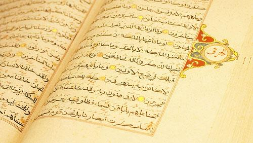
آسمانی حروف سے بھرے صفحات کو دیکھنا گرم ہے اور بینائی کا نور بڑھاتا ہے۔ قرآن مجید کے صفحات کو دیکھنا گرمی دیتا ہے۔ کسی مہربان دوست کا محبت بھرا خط پڑھنا محبت پیدا کرتا ہے اور گرمی دیتا ہے۔
نفرت انگیز مناظر، ظلم اور جرم دیکھنا سردی دیتا ہے۔ انسانوں اور جانوروں کے جنسی مناظر دیکھنا سودا پیدا کرتا ہے؛ یہ پہلے گرم اور آخر میں سرد ہے، یعنی شروع میں گرمی اور تحریک پیدا کرتا ہے اور پھر سردی لاتا ہے، اس لئے جسم اور جان میں دیرپا سستی لاتا ہے۔
نامحرم کا چہرہ اور گناہ کا منظر دیکھنا سخت سرد و خشک ہے اور اس کی سردی جسم اور جان کی گہرائی میں اتر جاتی ہے۔ حرام نگاہ ابلیس کے تیروں میں سے ایک زہریلا تیر ہے جو انسان کی جان اور جسم پر لگتا ہے، اس کا زہر اندر اترتا ہے اور دیر تک جسم میں اثر کرتا رہتا ہے۔
عارف لوگ چہروں کو دیکھنے سے آنکھ بند رکھتے تھے اور حرام کی منفی شعاعوں کو اپنے جسم اور جان میں داخل ہونے کی اجازت نہیں دیتے تھے۔
اللہ تبارک و تعالیٰ حکم دیتا ہے کہ ہم حرام مناظر دیکھنے سے آنکھیں بند رکھیں («غُضُّوا أَبْصَارَكُمْ»)۔ فارسی ثقافت میں «اپنی آنکھوں کو درویش بنا لو» ایک عام محاورہ ہے جس پر زور دیا جانا چاہیے تاکہ یہ رائج ہو۔ مغربی معاشرے میں دوسروں کے کاموں کو تاکنا ان کے حقوق میں دخل اندازی سمجھا جاتا ہے۔
بہرحال انسان کی آنکھیں ایک تنگ کھڑکی ہیں جن سے وہ فطرت کی دنیا کی پوری وسعت کو اپنے جسم اور جان کی طرف بلاتا ہے۔ مناسب یہی ہے کہ ہم اپنے جسم اور جان کو نامناسب غذائیں داخل کر کے آلودہ نہ کریں، اور اپنی نظر کے ساتھ ایسے خیال رکھیں کہ جو کچھ بھی دیکھیں وہ اللہ تعالیٰ کے حسن کا ایک جلوہ ہو۔
به دریا بنگرم دریا ته وینم
به صحرا بنگرم صحرا ته وینم
به هر جا بنگرم کوه و در و دشت
نشان از قامت رعنا ته وینم
گھر اور مکان کا مزاج
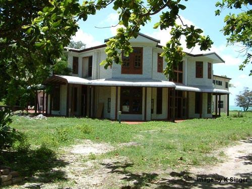
جس جگہ ہم رہتے ہیں اور فرصت کے گھنٹے گزارتے ہیں، وہاں سے جسم پر شعاعیں پڑتی ہیں، اور وہ شعاعیں جسم میں سردی یا گرمی کی قسم کا اثر پیدا کرتی ہیں۔
یہ سردی اور گرمی مکان بنانے کی جگہ کے موسم اور علاقے سے میل کھانی چاہیے، اور اس میل کے لئے مکان ایسے سامان سے بنایا جانا چاہیے جس کی فطرت اس جگہ کے مزاج کو توازن میں لائے۔
مثلاً سرد و تر علاقوں، جیسے شمالی علاقوں، میں مکان لکڑی سے بننا چاہیے۔ اگر سیمنٹ اور جپسم استعمال ہو تو چونکہ سیمنٹ اور جپسم کا مزاج بہت سرد ہے، اس عمارت میں رہنے والا شخص شدید سردی کا شکار ہو جاتا ہے، اور یہ سردی جوڑوں کے درد (گٹھیا)، اعضا کے درد اور تھکن جیسی سرد بیماریوں کا سبب بنتی ہے۔
لیکن گرم (گرم و خشک) علاقوں میں عمارتیں جپسم، سیمنٹ اور پتھر جیسے سامان سے بننی چاہئیں تاکہ جگہ کی گرمی کم ہو۔ مکان میں دھاتوں اور چمکدار چیزوں کا استعمال آسمان کی مختلف شعاعوں کو جذب کرتا ہے؛ یہ شعاعیں جسم میں جذب ہو جاتی ہیں اور انسانوں کی نفسیات کو بھی بدل دیتی ہیں۔
دھوئیں کا مزاج
دھوئیں بھی انسان کے دماغ میں جذب ہوتے ہیں، سونگھنے کے مختلف غدود پر اثر ڈالتے ہیں اور ذائقے کے غدود سے بھی ایک خاص رطوبت نکلواتے ہیں، اور ہر ایک سردی اور گرمی کی اپنی خاص خاصیت ظاہر کرتا ہے۔ کبھی یہ انسان میں سکون پیدا کرتے ہیں، کبھی وجد اور جوش، اور کبھی بے قراری، سستی، پریشانی اور ناامیدی۔
اسپند (حرمل) کا دھواں گرم ہے، لوبان کا دھواں گرم ہے، عود کا دھواں گرم ہے، لکڑی اور ایندھن کی آگ کا دھواں گرم ہے، ماہور پودے کے پتوں کا دھواں گرم ہے، انار کی لکڑی کی آگ کا دھواں گرم و خشک ہے، جھاؤ (گز) کی لکڑی کی آگ کا دھواں بہت گرم ہے۔
تمباکو کا دھواں پہلے گرم اور آخر میں سرد ہے۔ سگریٹ کا دھواں پہلے گرم اور بعد میں سرد ہے، اس لئے شروع میں تھوڑی دیر کی توانائی دیتا ہے اور پھر دماغ کو سرد کر دیتا ہے۔ افیون کا دھواں پہلے درجے میں گرمی دیتا ہے اور تیسرے اور چوتھے درجے میں سردی۔ پیٹرول، مٹی کے تیل اور ڈیزل کا دھواں سرد ہے، بھوسے کا دھواں گرم ہے، پلاسٹک کے مواد کا دھواں سرد ہے، کوڑے کا دھواں سرد ہے، اون اور ریشم کا دھواں گرم ہے، روئی اور بالوں کا دھواں سرد ہے۔
زخموں کا مزاج
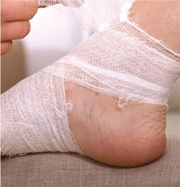
زخم بھی رنگ، بو اور شکل کے لحاظ سے گرم اور سرد مزاج رکھتے ہیں۔ ان کی قسم کے مطابق علاج کا طریقہ چننا چاہیے اور مناسب دوا منتخب کرنی چاہیے، اور ان کی سردی اور گرمی کے تناسب سے وہ دیر سے بھرنے والے یا جلد بھرنے والے ہوتے ہیں۔
سرخ اور زرد رنگ کے زخم گرم زخم ہیں؛ زرد زخم دیر سے بھرتے ہیں اور سرخ زخم جلد بھر جاتے ہیں۔ سفید، سیاہی مائل اور سرمئی رنگ کے زخم سرد زخم ہیں؛ ان میں پیپ پڑ جاتی ہے اور یہ دیر سے بھرتے ہیں۔ جب تک زخم کا رنگ نہ بدلے، علاج کی زمین تیار نہیں ہوتی؛ زخم کا رنگ جتنا بدلتا ہے، اس کی پیپ کی بو اتنی کم ہوتی ہے اور اس کا درد بھی بہتر ہوتا جاتا ہے۔
دھاتوں کا مزاج
دھاتوں میں بھی سردی اور گرمی ہوتی ہے۔ یہ گرمی اور سردی اس دھات کو چھونے سے جسم میں اتر جاتی ہے اور کبھی جسم میں بہت گہرے اثر چھوڑ جاتی ہے، یہاں تک کہ ان کا ازالہ بہت مشکل ہو جاتا ہے۔
مثلاً سیسہ سرد ہے، اور اس کی سردی اتنی گہری ہے کہ اگر سیسے کا ایک ٹکڑا کسی مرد کی کمر پر باندھ دیا جائے تو وہ اولاد پیدا کرنے کے قابل نہیں رہتا۔
سونا بہت گرم دھات ہے، چاندی سرد ہے، تانبا گرم ہے، جست سرد ہے، لوہا سرد ہے، گندھک گرم و خشک ہے، پارہ گرم و خشک ہے، ملی جلی دھاتیں جیسے پیتل گرم ہے، ایلومینیم سرد ہے، ڈھلا ہوا لوہا سرد ہے۔
سایوں کا مزاج
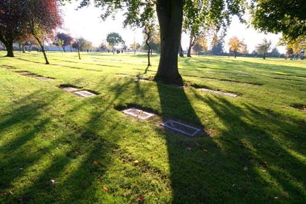
بید کے درخت کا سایہ سرد اور سکون دینے والا ہے؛ بخار والا شخص اس کے سائے میں آرام کر سکتا ہے۔ شہتوت کا سایہ گرم ہے، چیری اور خوبانی کا سایہ سرد ہے، صنوبر اور سرو کا سایہ سرد ہے۔ انگور کی بیل کا سایہ ٹھنڈا ہے، چنار اور نارون (ایلم) کا سایہ گرم ہے، کیکر (اقاقیا) اور زبانِ گنجشک (ایش) کا سایہ گرم ہے، عرعر (ابہل) کا سایہ سرد ہے۔
خوشبوؤں کا مزاج
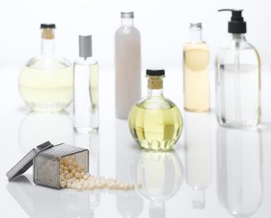
ہر خوشبو سونگھنے سے انسان کے جسم میں ایک کیفیت پیدا ہوتی ہے جو گرمی یا سردی، توانائی یا بے حسی اور بے دلی، سکون یا ڈھیلا پن اور سستی، بھول یا ذہنی تیزی لاتی ہے۔
خوشبوئیں بھی دماغ کی غذا شمار ہوتی ہیں اور ہمیں کچھ اصولوں کے مطابق ان سے فائدہ اٹھانا چاہیے۔ اگر ہم ان اصولوں پر نہ چلیں تو خوشبوئیں بھی ہمارے لئے مسائل کھڑے کر سکتی ہیں۔
مثلاً ایک گرم مزاج شخص گرم مزاج خوشبو سونگھنے سے سر درد کا شکار ہو جاتا ہے، لیکن یہی گرم خوشبو سرد مزاج شخص کو سکون دیتی ہے۔ اس کے برعکس جب سرد مزاج شخص ترشی کی بو یا کوئی اور سرد بو سونگھتا ہے تو اسے سر درد، دماغ کی سستی اور بے دلی ہو جاتی ہے۔
اس لئے ضروری ہے کہ ہم خوشبوؤں کا مزاج جانیں۔ گلابِ محمدی، رجنی گندھا، چنبیلی اور تیروز کی خوشبو گرم اور لطیف خوشبوئیں ہیں؛ مشک جیسی خوشبو بہت گرم ہے۔
سرکے، لیموں کے رس اور اچار کی بو، تیزابی بو اور سڑاند سرد بوئیں ہیں۔ کیمیائی مواد کی بو، جیسے تھنر، بلیچ، پیٹرول، مٹی کے تیل اور جراثیم مارنے والی چیزوں کی بو، دماغ پر سردی کا اثر ڈالتی ہے اور سرد بوؤں میں شمار ہوتی ہے؛ ان بوؤں کو مسلسل سونگھنا اعصاب کی خرابی اور یہاں تک کہ بھولنے کی بیماری کا سبب بنتا ہے۔
مترجم کا نوٹ: یہ بات آج کے دور میں خاص طور پر اہم ہے، جب گھروں، دفتروں اور کارخانوں میں صفائی کے کیمیائی محلول، پینٹ، جراثیم کش اسپرے اور خوشبو کے مصنوعی اسپرے روزمرہ کا حصہ بن چکے ہیں اور ان کی بو دن بھر سانس کے ساتھ اندر جاتی رہتی ہے۔
لباس اور پہناوے کا مزاج
جو لباس ہم پہنتے ہیں اس کا بھی سردی اور گرمی کی قسم کا ایک مزاج ہوتا ہے اور وہ جسم میں سردی یا گرمی پیدا کر سکتا ہے۔
اونی لباس گرم ہے، ریشم بہت گرم ہے، کتان (لینن) سرد ہے، ایکریلک اور پلاسٹک کے مواد (نائلون) کے لباس سرد ہیں، مشینی قالین سرد ہے، اور جو شخص اس قالین پر سوتا ہے وہ سردی محسوس کرتا ہے اور یہ عادت جاری رہے تو جسم میں درد پیدا ہو جاتا ہے۔
اسپرنگ والے گدے سرد ہیں، گلاس وول گرم ہے۔ اسی لئے ایران کے سرد علاقوں، جیسے مشرقی اور مغربی آذربائیجان اور کردستان، میں اونی گدے استعمال ہوتے ہیں اور یزد میں روئی کے گدے۔ لیکن سرد و تر علاقوں، جیسے شمالی ایران، میں نمدہ استعمال کیا جاتا ہے جو دبی ہوئی اون سے بنا ایک قسم کا فرش ہے، اور گرم و تر علاقوں، جیسے جنوبی ایران اور ہندوستان، میں چٹائی استعمال ہوتی ہے۔
مترجم کا نوٹ: یہی اصول ہمارے ہاں بھی لاگو ہوتا ہے: گلگت، چترال، سوات اور کوئٹہ جیسے سرد علاقوں میں اونی بستر، نمدے اور دریاں موافق ہیں؛ کراچی، ٹھٹھہ اور جنوبی پنجاب جیسے گرم و تر علاقوں میں چٹائی، سوتی بستر اور کھلی بُنت کا کپڑا زیادہ موافق رہتا ہے۔
کیا رویوں اور خیالوں کا بھی مزاج ہوتا ہے؟
پودوں اور جانوروں کے مزاج کے علاوہ موسم، اوقات، دن اور رات، مختلف علاقے، جگہیں، سمندر، جنگل، پہاڑ، صحرا، خوبصورت میدان، قید خانہ، برے کاموں کی جگہ اور نیک کاموں کی جگہ، سب کا گرمی اور سردی کی قسم کا ایک مزاج ہوتا ہے۔
خوشی اور غم، تکبر، حسرت، نفرت، حرص و لالچ، درگزر، عاجزی، ہمدردی اور مہربانی، سختی؛ تمام رویے، خیالات، اور یہاں تک کہ سنی جانے والی چیزوں کا مجموعہ بھی سردی اور گرمی کی قسم کا مزاج رکھتا ہے؛ جیسے غم سرد ہے اور خوشی گرم، امید دلانے والے الفاظ گرم ہیں اور مایوس کرنے والی آوازیں جسم اور جان کو سردی دیتی ہیں۔
دوستیاں گرم ہیں اور سختی اور دشمنیاں سرد۔ رویوں، خیالوں اور بوؤں کا احساس، بدصورت اور خوبصورت مناظر کا احساس، اور نیکیوں، خیالوں اور برائیوں کا مزاج انسانی روح کے ذریعے جسم تک پہنچتا ہے اور جسم کو گرمی دے سکتا ہے یا سردی۔ اسی لئے ایک منفی خیال انسان کی بھوک مار سکتا ہے، نبض کی رفتار گھٹا سکتا ہے اور جسم کے کام کو کم سے کم کر سکتا ہے، اور کامیابی کی امید نبض بڑھا سکتی ہے، انسان کو خوشی دے سکتی ہے اور اس کی طاقت اور توانائی کو کئی گنا کر سکتی ہے۔
حرص اور لالچ بیماری کا سبب بن سکتے ہیں؛ ریاکاری انسان کو تھکا سکتی ہے؛ سچائی اور یک رنگی دلیری پیدا کرتی ہے؛ سخاوت دل کا چین، روح اور نفس کی خوشی اور جسم کی چستی پیدا کرتی ہے۔ دنیا سے دل لگانا دکھ دیتا ہے اور دل نہ لگانا نجات دیتا ہے۔
رویوں کا مزاج
رویوں کا بھی الگ الگ مزاج ہوتا ہے اور ہر ایک جسم اور جان کو گرمی یا سردی دے سکتا ہے۔ اپنائیت والا، عاجزی والا اور بغیر گھمنڈ اور دکھاوے کا رویہ گرم ہے؛ سخت، گھمنڈ والا اور ریاکاری والا رویہ سرد ہے۔ رویوں کا مزاج دکھانے کے لئے چند اہم رویوں کی مثالیں پیش کرتے ہیں۔
گرم رویے:
سچائی، امانت داری، عاجزی، محبت، یک دلی، معافی اور درگزر، دلیری، ایک دوسرے کی مدد، دوستوں سے ملاقات، رشتہ داروں سے ملنا اور صلح گرم رویے ہیں اور انسان کو طاقت اور توانائی دیتے ہیں۔
سرد رویے:
جھوٹ، گھمنڈ، کینہ، خیانت، حرص، لالچ، حسد، چغلی، غیبت، بدگوئی، کنجوسی، ریاکاری، خود غرضی، تنہائی پسندی، روٹھنا اور لوگوں سے دور رہنا سرد رویے ہیں اور انسان کو کمزوری، بے دلی اور افسردگی میں ڈال دیتے ہیں۔
سودا پیدا کرنے والے رویے:
رویوں میں سے بعض کام ایسے ہیں جو خون کو خشک کرنے یا خون کی تری کم کرنے کا سبب بنتے ہیں، اور ہم ان رویوں کو سودا پیدا کرنے والے کہتے ہیں۔ یہ رویے یہ ہیں۔
جذبات اور نیند: غصہ، کینہ اور جھنجھلاہٹ، جھگڑالو پن، مسلسل افسوس، غم، حد سے زیادہ خوشی، بے حرکت رہنا، زیادہ سونا، زیادہ تھکنا، بہت زیادہ گرمی میں رہنا، بہت زیادہ سردی میں رہنا، گرم غذائیں زیادہ کھانا، سرد غذائیں زیادہ کھانا، شدید گرمی اور سردی کے حالات میں رہنا، جیسے گرم حمام کے بیچ خود کو ٹھنڈے پانی میں ڈبو دینا، خوشی کے عروج سے غم تک پہنچنا، ہوائی جہاز میں پرواز کے دوران بلندی پکڑنا (چڑھاؤ اور اتار)، توانائی بچانے والے (انرجی سیور) بلبوں کی روشنی میں رہنا، عام طور پر بلبوں کا زیادہ استعمال، جاز موسیقی کی آوازوں کا مسلسل سننا، مسلسل آوازوں کا سننا، نیند سے ہڑبڑا کر اٹھنا، بے آرام نیند، رات اور دن میں نیند کے اوقات کا بدلنا، صبح کے وقت سونا، دیر سے سونا، ڈرنا، مسلسل پریشانی، مقروض ہونا۔
کھانا پینا: شہر کی آلودہ ہوا میں سانس لینا، کھانے کے بعد بہت ٹھنڈا پانی پینا، بہت گرم مشروبات پینا، شراب پینا، کھانے کے بیچ پانی پینا، فریزر میں جما ہوا کھانا کھانا، رات کا بچا ہوا کھانا کھانا، حرام غذائیں کھانا، کچا کھانا کھانا، بہت نمکین، بہت مرچ والا اور بہت کڑوا کھانا کھانا، ٹیفلون کے برتنوں اور بجلی کے چولہوں کا استعمال۔
ماحول اور رہن سہن: دھات کے پلنگوں پر اور دھاتی دیواروں والے کمروں میں سونا اور کمرے اور رہائش کی جگہ میں چمکدار سطحوں کا استعمال، موبائل اور کمپیوٹر کا حد سے زیادہ استعمال، پیدل نہ چلنا، مسلسل خاموشی، گنگنانے اور گانے سے پرہیز، نہ رونا، مار دھاڑ اور خوفناک مناظر دیکھنا، بھڑکانے والے اور شہوت انگیز مناظر دیکھنا، پرانا بخار، پرانی بیماری، مسلسل کیمیائی دوائیں کھانا، گہری سانس نہ لینا، سگریٹ پینا، افیون پینا، کریک، شیشہ اور حشیش جیسے تیز نشے استعمال کرنا، ۔
صحت اور عادتیں: بہت زیادہ سردی اور گرمی میں رہنا، سمندر کی گہرائی میں رہنا، پہاڑوں کی بلندیوں پر رہنا، ڈرپوک لوگوں کے ساتھ رہنا، بخیل لوگوں کے ساتھ رہنا، بدصورت چہرہ دیکھنا، گہرے رنگ کے مناظر (سیاہی اور اندھیرا) دیکھنا، بہت زیادہ سفیدی دیکھنا، روشنی کو سیدھا دیکھنا، گالی گلوچ اور بدگوئی کرنا اور گالی سننا، ناشکری کرنا اور ناشکرے لوگوں کے ساتھ رہنا، مسلسل بدگمانی اور منفی سوچ، منفی خیال رکھنا، فطرت سے دور رہنا، مسلسل صنعتی آوازیں سننا، اور نیند کے وقت گاڑیوں، کارخانوں کی مشینوں اور الارم کی آوازیں۔
باب پنجم
مزاجوں کا علاج
مترجم کا نوٹ: اس باب میں مصنف نے طبِ روایتی کے نسخے اور ان کی مقداریں درج کی ہیں۔ یہ نسخے مصنف کے اپنے تجربے اور طبِ روایتی کی روایت پر مبنی ہیں اور ترجمے میں بغیر کسی تبدیلی کے پیش کیے گئے ہیں۔ ان پر عمل کسی ماہر اور تجربہ کار طبیب کی نگرانی میں ہونا چاہیے، جیسا کہ مصنف نے خود اس باب کے آخر میں تاکید کی ہے۔
ضروری انتباہ
اس باب میں جو نسخے، منضج اور مسہل دیے گئے ہیں، ان میں سے کوئی چیز استعمال کرنے سے پہلے کسی مستند حکیم یا طبیب سے مشورہ ضرور کر لیں۔ کتاب آپ کی موجودہ حالت نہیں جانتی۔ یہ نسخے ان لوگوں کے لئے لکھے گئے ہیں جو بظاہر صحت مند ہیں اور کسی دوسری بیماری یا تکلیف میں مبتلا نہیں۔ اگر آپ کو کوئی بیماری ہے، آپ پہلے سے کوئی دوا لے رہے ہیں، یا آپ حاملہ ہیں یا دودھ پلا رہی ہیں، تو ان نسخوں کو اپنی مرضی سے استعمال نہ کریں۔ مقدار، مدت اور ترکیب ہر شخص کے مزاج اور حالت کے مطابق بدلتی ہے، اور یہ فیصلہ ایک تجربہ کار طبیب ہی کر سکتا ہے۔ مصنف نے خود بھی اس کی تاکید کی ہے۔
تنبیہات
سیکھنے والے کو دھیان رکھنا چاہیے کہ کوئی ایک مزاج رکھنا بیماری نہیں؛ مثلاً جس شخص کا مزاج سوداوی یا بلغمی ہو وہ بیمار نہیں اور اسے علاج کی ضرورت نہیں۔ علاج کی ضرورت تب پڑتی ہے جب مزاج کا غلبہ ہو جائے، یعنی کسی خلط کی مقدار جسم میں معمول اور توازن کی حد سے بڑھ جائے۔
طبِ روایتی اور اسلامی میں علاج ضد سے ہوتا ہے اور تقویت عین سے، یعنی علاج بالضد اور تقویت بالمثل؛ یعنی اگر کسی شخص کو بلغم کا غلبہ اور بیماری ہو، جو سردی، تری اور رطوبت کا اعتدال سے بڑھ جانا ہے، تو اس کا علاج اس کی ضد یعنی گرمی اور خشکی سے ہونا چاہیے؛ اور اگر کسی وجہ سے، مثلاً کسی کو موٹا کرنے کے لئے، ہم اس میں سردی اور رطوبت کو بڑھانا چاہیں تو اسے سردی اور تری تجویز کرتے ہیں، یعنی وہی چیز جس کی اسے ضرورت ہے۔
ایک اور اہم بات جس پر علاج میں دھیان دینا چاہیے یہ ہے کہ روحانی، نفسیاتی اور جسمانی معاملات ایک دوسرے پر سیدھا اثر ڈالتے ہیں، اور علاج یا بچاؤ کے لئے ان سے بنیادی سہارے کا کام لینا چاہیے۔ مثلاً بہت سے سر درد ایسے ہیں جو انسان کی روح اور نفس پر اثر ڈال کر اسے ایک چڑچڑا اور بداخلاق شخص بنا دیتے ہیں جس کی عادت ہی بگڑ جاتی ہے، اور بہت سی پریشانیاں یا کسی عزیز کا کھو جانا سر درد یا جسم میں بے نام دردوں کا سبب بن جاتا ہے۔
پس جیسا کہ آپ دیکھ رہے ہیں، جسم روح اور نفس پر، اور روح اور نفس جسم پر سیدھا اثر ڈالتے ہیں۔
اس لئے جان لو کہ بہت سے موقعوں پر علاج اور پرہیز جسمانی اور روحانی و نفسیاتی علاج اور پرہیز کا مجموعہ ہونا چاہیے۔
مثال کے طور پر اعصابی سر درد (آدھے سر کا درد) کے علاج میں شاید آپ مناسب سمجھیں کہ مریض کو غصے، ہجوم، بحث و تکرار اور جھگڑے، غیبت وغیرہ سے پرہیز کرانے کے علاوہ اس کے نسخے میں جنگل اور پہاڑ میں کچھ وقت گزارنا، پرندوں کی دل کش آواز، روح پرور ہوا اور پانی کی خوبصورت آواز سننا، یا اگر یہ میسر نہ ہو تو پرندوں اور آبشار کی آواز اور دھیمے اور خوش لہجے میں قرآن کی تلاوت سننا وغیرہ بھی لکھ دیں۔
یاد رکھیں کہ جن نسخوں میں روح اور نفس کے عنصر کو نظر انداز کر دیا جائے وہ کمزور اور ناپختہ نسخے ہیں۔
مترجم کا نوٹ: منضج، نضج اور مسہل کیا ہیں؟
اس باب میں علاج کا طریقہ دو قدموں پر چلتا ہے، اور اس کی اصطلاحیں آگے بار بار آئیں گی، اس لئے انہیں شروع ہی میں سمجھ لینا بہتر ہے۔
نضج کے معنی ہیں «پک جانا»۔ قدیم طب کا اصول یہ ہے کہ بگڑا ہوا خلط جب تک کچا اور گاڑھا ہو، اسے زبردستی جسم سے نکالنا نقصان دیتا ہے؛ پہلے اسے نرم اور پتلا کرنا پڑتا ہے، جیسے پھل کا پک جانا۔ اسی پکانے کو نضج کہتے ہیں۔
منضج وہ دوا ہے جو یہ کام کرتی ہے، یعنی خلط کو پکا کر نکلنے کے قابل بناتی ہے۔ اسی لئے اس باب کے منضج ایک، دو یا چودہ دن تک مسلسل لیے جاتے ہیں: یہ تیاری کا مرحلہ ہے، علاج کا آخری قدم نہیں۔
مسہل وہ دوا ہے جو پکے ہوئے خلط کو دست کے راستے جسم سے باہر نکال دیتی ہے۔ اسی وجہ سے ان نسخوں میں مسہل ہمیشہ آخری دن آتا ہے، منضج کی مدت پوری ہونے کے بعد۔ ترتیب بدلنا، یعنی بغیر منضج کے مسہل لے لینا، اس طریقۂ علاج میں غلطی سمجھی جاتی ہے۔
سکنجبین ایک پرانا شربت ہے جو سرکے اور شہد (یا مصری) کو ملا کر بنایا جاتا ہے، اور اس میں کاسنی یا پودینے جیسی کسی جڑی بوٹی کا عرق شامل کر دیا جاتا ہے۔ یہ بذاتِ خود بھی نرمی سے خلط کو پتلا کرنے کا کام دیتا ہے۔
صفرا اور صفرا کے غلبے کی علامات
جن لوگوں میں صفرا زیادہ بنتا ہے: سر درد، کنپٹی میں نبض کا پھڑکنا، آنکھ کی سفیدی کا زرد پڑنا، آنکھوں کے آگے اندھیرا آنا، چکر، منہ کا ذائقہ کڑوا ہو جانا، صفرا معدے میں آنے پر گلے میں کھٹی ڈکار، بہت پیاس، ہونٹوں کا خشک رہنا، سر کی جلد میں سکری، اور بعض اوقات پلکوں کی جڑ اور پپوٹوں کے گرد جلن اور چھلکے اترنا، جلد کا کھردرا ہونا، پیشاب کا رنگ گہرا زرد، برف اور ٹھنڈے پانی کا بہت شوق، تیز مزاجی، بات بات پر نکتہ چینی، بالوں کا ایک ایک کر کے جھڑنا، ڈراؤنے خواب دیکھنا، بلندی سے گرنے اور لڑائی جھگڑے کے خواب، بہت دبلا پن، بھوک نہ لگنا۔
سبب:
چکنی اور میٹھی غذائیں، گرم و خشک تاثیر والی چیزوں کا زیادہ استعمال، جیسے نمک، تیز مصالحے، شہد، کھجور، مٹھائی، پستہ، فندق، اخروٹ، اونٹ کا گوشت اور دوسری گرم و خشک غذائیں جن کی فہرست مصنف کی اصل کتاب کے غذاؤں کے مزاج والے حصے میں دی گئی ہے۔
غصہ، جھگڑالو پن، حد سے زیادہ اور تھکا دینے والی محنت، قدرتی یا مصنوعی گرمی کے پاس رہنا وغیرہ۔
صفراوی مزاج والوں کے لئے نقصان دہ غذائیں:
صفرا بڑھانے والے ان سب اسباب سے پرہیز جو اوپر بیان ہوئے۔
علاج:
انار اور شہتوت، زرشک، رس بھری (تمشک)، خوبانی، آڑو، کھیرا، سلاد پتہ (کاہو) اور تربوز بہترین دوا ہیں۔ زیتون کا تیل، سیب، ناشپاتی، جو کا شوربہ، سالن والا کدو، کھمبی کا سالن، میٹھا کدو، پالک، دھنیا، مٹر، مسور، مونگ، جئی، خشک لیموں۔
گرم مزاج والوں کے لئے مفید چاشنی:
سماق، کچے انگور، کھٹے لیموں کا رس، املی، بہی اور انار۔
صفرا نکالنے والی دوائیں:
خاکسی (خوب کلاں)، کاسنی کی جڑ، نیلوفر کا پھول، خشک آلوچہ، ملیٹھی کی جڑ، خطمی کا پھول، بنفشہ کا پھول، عناب، املی، تخم کاسنی، بہی دانہ، تخم کشوث، گل حلوا (بستان افروز)، اسپغول، نارنگی کا شربت، بہی کا شربت، شہتوت کا شربت۔ ان میں سے ایک یا چند چن کر استعمال کریں (روزانہ ہر جڑی بوٹی 15 گرام تک لی جا سکتی ہے)؛ اگر چند چنی ہوں تو سب ملا کر روزانہ 10 گرام لی جا سکتی ہیں۔
صفرا خارج کرنے کے لئے ہر رات ایک چائے کا چمچ انگور کا سرکہ ایک گلاس پانی میں ملا کر پیا جائے۔
صفرا کا منضج یا اسے حل کرنے والی دوائیں:
کاسنی کی جڑ، نیلوفر کا پھول، خشک آلوچہ، ملیٹھی کی جڑ، خطمی کا پھول، بنفشہ کا پھول، عناب، املی، تخم کاسنی، بہی دانہ، تخم کشوث، گل حلوا (بستان افروز)، اسپغول، نارنگی کا شربت، بہی کا شربت، شہتوت کا شربت۔ ان میں سے ایک یا چند چن کر استعمال کریں (روزانہ ہر جڑی بوٹی 15 گرام تک لی جا سکتی ہے)؛ اگر چند چنی ہوں تو سب ملا کر روزانہ 10 گرام لی جا سکتی ہیں۔
منضجِ صفرا:
نوٹ: یہ نسخہ استعمال کرنے سے پہلے کسی مستند حکیم یا طبیب سے مشورہ کر لیں۔
- اجزا: مغز املتاس (بغیر بیج)، پرسیاوشاں، منقیٰ (بیج نکالا ہوا)، انار دانہ، گھیکوار (ایلوویرا)، افسنتین، ریوند چینی، آلو بخارا، شیر خشت، محمودہ، املی، گاؤ زبان، اسپغول کا لعاب، گلاب کا پھول، ہڑ زرد کا چھلکا، رس بھری (تمشک)، عناب، کاسنی، مکو اور بنفشہ کا پھول۔
- استعمال کے موقعے: صفرا کے غلبے والے افراد میں یہ منضج ایک ہفتے تک ہر رات ایک بار تجویز کیا جاتا ہے۔ آخری دن سنا اور گلاب کے پھول کا ملا ہوا ایک کھانے کا چمچ چائے کی طرح دم کر کے ایک چائے کے چمچ میٹھے بادام کے تیل کے ساتھ ملا کر خلط کے مسہل کے طور پر استعمال کیا جائے۔
- طریقۂ استعمال: ایک کھانے کا چمچ ایک گلاس پانی میں ڈال کر 5 منٹ ابالیں، پھر یہ پانی چھان کر ایک کھانے کے چمچ شہد کے ساتھ پی لیں۔
(منضج ٹھنڈی جگہ رکھے جائیں؛ خاص طور پر منضجِ صفرا اگر گرم یا نم ماحول میں رکھا جائے تو جلد کیڑا لگ جاتا ہے اور کام کا نہیں رہتا۔)
مترجم کا نوٹ: حجامہ (پچھنا) میں جلد پر ہلکا سا شگاف لگا کر پیالہ رکھا جاتا ہے اور اس کے کھنچاؤ سے تھوڑا سا خون نکال لیا جاتا ہے؛ اسے «گیلا» حجامہ کہتے ہیں۔ بادکش میں شگاف نہیں لگایا جاتا، صرف پیالہ رکھ کر کھنچاؤ پیدا کیا جاتا ہے اور خون نہیں نکالا جاتا؛ اسے «خشک» حجامہ یا کپنگ کہتے ہیں۔ دونوں کسی تجربہ کار شخص سے، صفائی کا پورا خیال رکھتے ہوئے کرانے چاہییں۔
- حجامہ (پچھنا) ان لوگوں کے لئے بہت مناسب ہے؛ یہ لوگ ہر ایک مہینے سے چالیس دن کے وقفے سے ایک بار، تین مرحلوں تک، حجامہ کرا سکتے ہیں (جسے حجامے کے بعد صفرا کی شکایت ہو جائے وہ اس کے بعد تازہ بھنی ہوئی مچھلی کھائے)۔
- ان لوگوں کے لئے بہترین دواؤں میں سے ایک کاسنی کا سکنجبین ہے۔ اسے بنانے کا درست طریقہ یہ ہے۔ (یہ نسخہ استعمال کرنے سے پہلے کسی مستند حکیم یا طبیب سے مشورہ کر لیں)
ترکیب:
ایک لیٹر انگور کا قدرتی سرکہ (بازاری اور غیر قدرتی سرکے ٹھیک نہیں) اور ایک لیٹر عرقِ کاسنی ملا کر آگ پر رکھیں تاکہ 7 منٹ تک آہستہ آہستہ ابلے۔ پھر چولہا بند کر کے اس میں 750 گرام شہد یا مصری ڈالیں، ہلائیں اور ٹھنڈا ہونے دیں۔
یہ سکنجبین دن میں دو بار اس طرح استعمال کریں کہ ایک تہائی گلاس سکنجبین اور باقی دو تہائی گلاس عرقِ کاسنی یا پانی سے بھر کر ہلائیں اور صبح اور رات ایک ایک بار پئیں۔
سودا اور سودا کے غلبے کی علامات
سودا سرد و خشک ہے، مٹی کی جنس سے ہے اور خون کی تلچھٹ ہے۔ اگر سودا بڑھ جائے تو منہ کا ذائقہ نمکین ہو جاتا ہے، منہ سے بدبو آتی ہے، ڈراؤنے خواب آتے ہیں، افسردگی اور تھکن ہو جاتی ہے، وسواس (شک و شبہے کی بیماری)، چہرے اور آنکھوں کے نیچے سیاہی، جسم کی کمزوری، اپنے آپ میں سمٹ جانا، زیادہ سوچنا، دبلا پن، بے رونقی، شدید قبض، سیاہ پاخانہ، پیشاب کرتے وقت جلن، پیشاب کا گہرا سرمئی ہو جانا، متلی، آنکھوں کے آگے اندھیرا اور رتوندھی، جلد اور چہرے کا رنگ گہرا پڑنا، معدے میں جلن، جسم میں بہت خارش اور جلد کا پھٹنا، معدے کا قولنج؛ یہ سودا کے غلبے اور بیماری کی کچھ علامات ہیں۔
سبب:
باسی اور رکھی ہوئی، نمکین اور نمک لگی غذائیں، غم اور زیادہ فکر و خیال، اور سرد و خشک مزاج کی غذائیں جن کی فہرست مصنف کی اصل کتاب کے غذاؤں کے مزاج والے حصے میں دی گئی ہے۔
سوداوی مزاج والوں کے لئے نقصان دہ غذائیں:
خشک غذائیں جیسے چاول، مسور، بوتل والے مشروبات، دھوئیں میں خشک کی ہوئی مچھلی، باسی اور رکھی ہوئی غذا، نمک لگی چیزیں، کھیرے کا اچار، بوڑھے جانور کا گوشت (گہرے سرخ رنگ کا)، پنیر نہیں کھانا چاہیے، گائے کا گوشت اور ہر وہ چیز جو اوپر سبب کے حصے میں بیان ہوئی۔
علاج:
گرم و تر غذا کھانا، ملین، جو کا شوربہ (بھیڑ کے پائے، تھوڑی ادرک اور زعفران کے ساتھ)، ٹھیک ہونے کے بعد شہد اور قدومہ شیرازی پابندی سے استعمال کریں، شہتوت، گرم پانی سے طہارت کریں، انجیر، کھجور، کشمش، الائچی، دار چینی، زیرہ، زعفران۔
سودا نکالنے والی جڑی بوٹیاں: افتیمون، اسطوخودوس، الائچی، دار چینی، زیرہ، زعفران، بادرنجبویہ، گاؤ زبان، سپستاں (لسوڑا)، بسفائج، لونگ، کاسنی کی جڑ، سونف کی جڑ، شاہترہ، ملیٹھی کی جڑ، تخم مرو کا لعاب، زرشک، خطمی کی جڑ۔
پچیس گرام افتیمون کوٹ کر 250 گرام شہد میں حل کریں اور روزانہ 4 چائے کے چمچ استعمال کریں۔
منضجِ سودا:
نوٹ: یہ نسخہ استعمال کرنے سے پہلے کسی مستند حکیم یا طبیب سے مشورہ کر لیں۔
- اجزا: اسطوخودوس، افتیمون، کشوث، سیاہ زرشک، خطمی کا پھول، سونف، شاہترہ، ملیٹھی، انجیر، سپستاں، گاؤ زبان، بسفائج، کاسنی کی جڑ، بیج اور پتے، گوند عربی، بادرنجبویہ اور منقیٰ۔
- استعمال کے موقعے: یہ منضج سودا کے غلبے والے افراد میں 14 دن تک تجویز کیا جاتا ہے۔ آخری دن سنا اور گلاب کے پھول کا ملا ہوا ایک کھانے کا چمچ چائے کی طرح دم کر کے ایک چائے کے چمچ میٹھے بادام کے تیل کے ساتھ ملا کر خلط کے مسہل کے طور پر استعمال کیا جاتا ہے۔
- طریقۂ استعمال: ایک کھانے کا چمچ ایک گلاس پانی میں ڈال کر 5 منٹ ابالیں، پھر یہ پانی چھان کر ایک کھانے کے چمچ شہد کے ساتھ پی لیں۔
- زیتون اور تل کے تیل کی مالش، پیدل چلنا اور ہلکی ورزش، اور غذا درست کرنے اور دوائیں لینے کے دو ہفتے بعد حجامہ بہت مفید ہے۔
- ان لوگوں کے لئے بہترین دواؤں میں سے ایک پودینے کا سکنجبین ہے۔ اسے بنانے کا درست طریقہ یہ ہے۔ (یہ نسخہ استعمال کرنے سے پہلے کسی مستند حکیم یا طبیب سے مشورہ کر لیں)
ترکیب:
ایک لیٹر انگور کا قدرتی سرکہ (بازاری اور غیر قدرتی سرکے ٹھیک نہیں) اور ایک لیٹر عرقِ پودینہ ملا کر آگ پر رکھیں تاکہ 7 منٹ تک آہستہ آہستہ ابلے۔ پھر چولہا بند کر کے اس میں ایک کلو شہد یا مصری ڈالیں، ہلائیں اور ٹھنڈا ہونے دیں۔
یہ سکنجبین دن میں دو بار اس طرح استعمال کریں کہ ایک تہائی گلاس سکنجبین اور باقی دو تہائی گلاس عرقِ کاسنی یا پانی سے بھر کر ہلائیں اور صبح اور رات ایک ایک بار پئیں۔
بلغم اور بلغم کے غلبے کی علامات
بلغم پانی کی جنس سے اور سرد و تر ہے۔ آنکھوں کے نیچے سوجن، منہ کا ذائقہ کھٹا ہو جانا، جلد کا ڈھیلی، سفید اور پانی بھری ہو جانا، جلد کا جگہ جگہ سفید پڑنا (برص)، بالوں کا جلد سفید ہونا، ہاتھ پاؤں کی سردی، پاؤں اور گھٹنوں کا درد، کھانا دیر سے ہضم ہونا، معدے کا درد، کھانا کھاتے وقت سانس کا پھولنا، قولنج، کمر اور کندھوں کے درمیان درد اور گردن کے پچھلے پٹھوں کا کھنچنا، سستی اور اونگھ، نیند میں منہ سے رال بہنا، نیند سے اٹھنے پر دل کی دھڑکن تیز ہونا، ناک کے پانی کا پتلا ہونا، ناک بہنا، بہت کھانسی، یادداشت کی کمزوری، مثانے پر دباؤ کے ساتھ بہت پیشاب آنا، موٹاپا اور زیادہ وزن۔
سبب:
دودھ سے بنی چیزوں، اچار، سرکے اور سرد و تر مزاج کی غذاؤں کا استعمال، جن کی فہرست غذاؤں کے مزاج والے حصے میں آئی ہے۔
بلغمی مزاج والوں کے لئے نقصان دہ غذائیں:
دودھ سے بنی چیزیں، اچار، لیتہ (ترکاریوں کا اچار)، نمکین چیزیں، آلو، مسور، کھمبی، سفید گوشت، چائے، کافی، نیس کیفے (انسٹنٹ کافی)، کھٹے اور کچے پھل، نارنگی، کیوی، میٹھا لیموں، زیادہ پانی یا ٹھنڈا پانی، اور سرد و تر تاثیر والی تمام غذائیں۔
علاج:
شہد، انجیر، منقیٰ، کشمش، میٹھے انگور، ہالوں (ترہ تیزک)، میٹھا انار، اخروٹ، شہتوت، بادام اور کھجور، گوشت (اونٹ، بھیڑ، فیل مرغ یعنی ٹرکی، کبوتر، سار، چڑیا)، مصالحے (الائچی، دار چینی، ادرک، زیرہ، زعفران، اجوائن، سورنجان، خولنجان، لہسن، موسیر (جنگلی پیاز)، رائی)، سبزیاں (کرفس، پودینہ، ریحان، اجمود (جعفری)، ترخون، مرزہ)، بند گوبھی، مارچوبہ (ہلیون)، گاجر، میٹھا کدو، گندم، چنا، اخروٹ (ہندی جوز نہیں)، قدومہ شیرازی، اویشن (ساتر، ایک قسم کا جنگلی پودینہ)۔
منضجِ بلغم:
نوٹ: یہ نسخہ استعمال کرنے سے پہلے کسی مستند حکیم یا طبیب سے مشورہ کر لیں۔
- اجزا: پرسیاوشاں، انجیر، منقیٰ، اسطوخودوس، ہالوں، گلاب کا پھول، السی، افسنتین، افتیمون، ادرک، میتھی دانہ، سونف، دار چینی، گاؤ زبان، ملیٹھی، زوفا کا پھول، سفید کندر (لوبان)، تخم کرفس، مکو اور ایرسا کی جڑ؛ سب برابر مقدار میں۔
- استعمال کے موقعے: بلغم کے غلبے والے افراد میں یہ منضج دو ہفتے تک ہر رات ایک بار تجویز کیا جاتا ہے۔
- طریقۂ استعمال: ایک کھانے کا چمچ ایک گلاس پانی میں ڈال کر 5 منٹ ابالیں، پھر یہ پانی چھان کر ایک کھانے کے چمچ شہد اور تھوڑے سے زعفران کے پانی کے ساتھ پی لیں۔ آخری دن سنا اور گلاب کے پھول کا ملا ہوا ایک کھانے کا چمچ چائے کی طرح دم کر کے ایک چائے کے چمچ میٹھے بادام کے تیل کے ساتھ ملا کر خلط کے مسہل کے طور پر استعمال کیا جائے۔
- اسپند (حرمل) روزانہ ایک سے دو چائے کے چمچ چالیس دن تک کھانا بلغم کو تیزی سے خارج کرتا ہے۔
- اویشن، پودینے، کرفس اور مرزنجوش کے عرق بلغم دور کرنے کے لئے مفید ہیں۔
- گرم تیلوں کی مالش، گرم و خشک بادکش (کپنگ)، پیدل چلنا اور ورزش ان لوگوں کے لئے مناسب ہے۔
دم اور دم (خون) کے غلبے کی علامات
دم ہوا کی جنس سے ہے اور گرم و تر ہے۔ اگر بڑھ جائے تو منہ کا ذائقہ میٹھا ہو جاتا ہے، سر بھاری رہتا ہے، اونگھ آتی ہے، دھیان کم رہتا ہے، منہ سے لیس دار لعاب آتا ہے، زبان سرخ ہو جاتی ہے، جسم میں خارش، پھوڑے اور باریک دانے، زیادہ تر گردن اور کندھوں کے درمیان، ہو جاتے ہیں، مسوڑھوں سے خون آتا ہے، ایسا محسوس ہوتا ہے جیسے جسم پر چیونٹیاں چل رہی ہوں، اور جسم میں حد سے زیادہ گرمی رہتی ہے۔
سبب:
زیادہ کھانا اور گرم و تر غذاؤں کا حد سے زیادہ استعمال خون کو بڑھا دیتا ہے۔
دموی مزاج والوں کے لئے نقصان دہ غذائیں:
زیادہ کھانا، گرم گوشت، بینگن، نشاستے والی غذائیں، مٹھائی، اور دوسری گرم غذائیں جن کی فہرست مصنف کی اصل کتاب کے غذاؤں کے مزاج والے حصے میں دی گئی ہے۔
علاج:
نہار منہ (خاکسی یعنی خوب کلاں، بالنگ، تخم ریحان، تخم مل، قدومہ شیرازی، تخم بالنگو یعنی تخم ملنگا، اسپغول) میں سے کوئی ایک پانی میں ڈالیں؛ یہ پھول جاتا ہے، پھر کھا لیں۔ یہ آنتوں کی حرکت بڑھاتا ہے اور آنتیں آسانی سے کام کرتی ہیں۔
کاسنی: صفرا، خون اور پیاس کو ٹھنڈا کرتی ہے اور اسے تازہ اور بغیر دھوئے استعمال کرنا چاہیے، کیونکہ دھونے سے اس کا لطیف حصہ ضائع ہو جاتا ہے۔ (اگر اسے اتنا ابالیں کہ اس کی ڈنڈی اور پتے پھٹ جائیں اور پتلا پانی الگ ہو جائے، پھر مصری یا ترشی کے ساتھ استعمال کریں تو خون صاف کرنے میں اس کا کوئی جواب نہیں۔)
خون کو معتدل کرنے والی دوائیں:
تخم کاسنی، تخم کاہو، دھنیا، گلاب کا پھول، لیموں کا رس، سکنجبین، عناب کا شربت، صندل کا شربت، کدو کا شربت وغیرہ۔
گرم مزاج والوں کے لئے مفید چاشنی:
سماق، کچے انگور، کھٹے لیموں کا رس، املی، بہی اور انار۔
- ان لوگوں کے لئے بہترین دواؤں میں سے ایک کاسنی کا سکنجبین ہے۔ اسے بنانے کا درست طریقہ یہ ہے۔ (یہ نسخہ استعمال کرنے سے پہلے کسی مستند حکیم یا طبیب سے مشورہ کر لیں)
ترکیب:
ایک لیٹر انگور کا قدرتی سرکہ (بازاری اور غیر قدرتی سرکے ٹھیک نہیں) اور ایک لیٹر عرقِ کاسنی ملا کر آگ پر رکھیں تاکہ 7 منٹ تک آہستہ آہستہ ابلے۔ پھر چولہا بند کر کے اس میں 750 گرام شہد یا مصری ڈالیں، ہلائیں اور ٹھنڈا ہونے دیں۔
یہ سکنجبین دن میں دو بار اس طرح استعمال کریں کہ ایک تہائی گلاس سکنجبین اور باقی دو تہائی گلاس عرقِ کاسنی یا پانی سے بھر کر ہلائیں اور صبح اور رات ایک ایک بار پئیں۔
- حجامہ دموی مزاج والوں کے لئے سب سے کارگر علاج سمجھا جاتا ہے۔
وہ افراد جن میں تینوں اخلاط (بلغم، سودا اور صفرا) کا غلبہ ہو
سب مزاجوں کے لئے مسہل:
نوٹ: یہ نسخہ استعمال کرنے سے پہلے کسی مستند حکیم یا طبیب سے مشورہ کر لیں۔
- سپستاں 25 گرام
- گلاب کا پھول 15 گرام
- بنفشہ اور نیلوفر کا پھول 10 گرام
- تخم خیارین 25 گرام
- کاسنی کی جڑ 50 گرام
- عناب 200 گرام
- زرشک 200 گرام
- خشک آلوچہ 200 گرام
- لیموں 25 گرام
- سنا 25 گرام
سب کو ملا کر موٹا کوٹ لیں؛ روزانہ 10 گرام 2 گلاس پانی میں ابال کر صبح اور شام پئیں۔
صفرا، بلغم اور سودا کا مسہل:
نوٹ: یہ نسخہ استعمال کرنے سے پہلے کسی مستند حکیم یا طبیب سے مشورہ کر لیں۔
سنا 25 گرام؛ گلاب کا پھول، بنفشہ کا پھول، گاؤ زبان اور نیلوفر کا پھول ہر ایک 10 گرام؛ کاسنی کی جڑ 15 گرام؛ تخم خیار 50 گرام؛ تخم خربوزہ 50 گرام؛ ترنجبین 100 گرام؛ عناب 150 گرام؛ سپستاں 20 دانے۔ اوپر کی سب دوائیں (تخم خیار اور ترنجبین کے سوا) ملا کر سات حصوں میں بانٹ لیں، ہر حصے کو ابالیں اور تخم خیار اور ترنجبین کے ساتھ، جن کا شیرہ پہلے نکال لیا گیا ہو، ملا کر صبح اور شام پئیں۔ یہ بھی یاد رہے کہ ترنجبین اور بیجوں کو باریک کوٹ کر 7 حصے کر لیں اور ہر حصے کا الگ الگ ابلتے پانی میں شیرہ نکال کر وہ پانی اوپر کے جوشاندے میں ملا لیں؛ یا پھر انہیں سیدھے چائے دانی میں ابال کر شیرہ نکال لیں۔
تنبیہ 1:
غذاؤں اور کھانے پینے کی چیزوں کے مزاج سے آگاہی، اور یہ جاننے کے لئے کہ کون سی غذا آپ کے مزاج کے لئے مفید ہے، اسی کتاب کے پھلوں اور غذاؤں کے مزاج والے حصے کی طرف رجوع کریں۔
اہم تنبیہ 2:
ہر دوا اور غذا کا مزاج علاقے کی آب و ہوا کے لحاظ سے کم زیادہ ہوتا ہے؛ مثلاً شیراز اور اصفہان کا چاول گرم ہے مگر شمالی ایران کے علاقوں کا چاول سرد ہے۔ لہسن کو بعض علاقوں میں بہت گرم و خشک بتایا جاتا ہے، مگر نم علاقوں میں لہسن آسانی سے کچا کھایا جا سکتا ہے۔ اس لئے ہر دوا یا پودے کے مزاج میں یہ بھی دیکھنا چاہیے کہ وہ کس علاقے میں اگا ہے۔
چند مزاجوں کے غلبے اور بیماری کا علاج
مشکل ترین علاجوں میں سے ایک ان لوگوں کا علاج ہے جن میں ایک ساتھ دو یا تین اخلاط کا غلبہ ہو۔ مثال کے طور پر شاید کسی شخص کے بدن میں دو خلطوں، صفرا اور بلغم، یعنی دو الٹی خلطوں کا غلبہ ہو، یا شاید تین مزاجوں، صفرا، سودا اور بلغم، کا ایک ساتھ غلبہ ہو۔
مثلاً ایسے لوگوں کو ذرا سی سردی سے شدید سردی اور ذرا سی گرمی سے شدید گرمی اور تپش محسوس ہوتی ہے، اور ان کے رویے اور جسم میں اچانک تبدیلیاں آتی ہیں۔
ایسے لوگوں کو ضرور ماہر طبیبِ روایتی کی نگرانی میں ملا جلا، منظم اور باریک بینی سے بنایا گیا علاج کرانا چاہیے، اور سرسری اور وقتی علاج برے نتیجے لا سکتا ہے۔
ضمیمہ: اس باب کی جڑی بوٹیوں کے نام
مترجم کا نوٹ: اس باب کے نسخوں میں بہت سی جڑی بوٹیاں فارسی ناموں سے آئی ہیں۔ نیچے ان میں سے وہ نام دیے جا رہے ہیں جو ہمارے ہاں کم مانوس ہیں، تاکہ پنساری یا عطار کے ہاں مانگتے وقت دشواری نہ ہو۔ یاد رہے کہ جڑی بوٹیوں کے مقامی نام علاقے کے لحاظ سے بدلتے رہتے ہیں؛ خریدتے وقت نام کے ساتھ ساتھ بوٹی کی پہچان بھی بتا دیں، اور شبہ ہو تو کسی طبیب سے تصدیق کرا لیں۔
| فارسی نام | اردو / یونانی نام | پہچان |
|---|---|---|
| خاکشیر | خاکسی (خوب کلاں) | باریک سرخی مائل بیج؛ ٹھنڈے مزاج کے |
| مغز فلوس | مغز املتاس | املتاس کی لمبی پھلی کا گودا؛ نرم مسہل |
| پرسیاوشان | پرسیاوشاں | ایک قسم کی سرخس کے پتے |
| مویز منقی | منقیٰ | بڑی، بیج نکالی ہوئی کشمش |
| افسنطین | افسنتین | سخت کڑوی جڑی بوٹی |
| شیرخشت | شیر خشت | ایک درخت کا میٹھا جما ہوا رساؤ؛ نرم ملین |
| محموده | محمودہ | تیز اثر مسہل گوند؛ صرف طبیب کے کہنے پر |
| گل گاوزبان | گاؤ زبان | نیلے پھول؛ دل و دماغ کے لئے مشہور |
| پوست هلیله زرد | ہڑ زرد کا چھلکا | زرد ہڑ کا اوپری چھلکا |
| تاجریزی | مکو | چھوٹے پتوں والی جڑی بوٹی |
| بسفایج | بسفائج | ایک سرخس کی جڑ |
| افتیمون | افتیمون | امر بیل کے باریک تار |
| تخم کشوت | تخم کشوث | امر بیل کا بیج |
| اسطوخودوس | اسطوخودوس | لیوینڈر کے پھول |
| بادرنجبویه | بادرنجبویہ | لیموں جیسی خوشبو والے پتے |
| سهپستان | سپستاں (لسوڑا) | چھوٹے لیس دار پھل |
| شاهتره | شاہترہ | کڑوی جڑی بوٹی؛ خون صاف کرنے کے لئے مشہور |
| قدومه شیرازی | قدومہ شیرازی | باریک بیج جو پانی میں لعاب چھوڑتے ہیں |
| بالنگو | تخم بالنگو (تخم ملنگا) | لعاب دار ٹھنڈے بیج |
| ترنجبین | ترنجبین | ایک جھاڑی پر جمنے والا میٹھا مادہ؛ نرم ملین |
| مارچوبه | مارچوبہ (ہلیون) | اسپیریگس کی کونپلیں |
| سورنجان | سورنجان | جوڑوں کے درد کے لئے مشہور جڑ |
| خولنجان | خولنجان | ادرک کے خاندان کی ایک خوشبودار جڑ |
| گل زوفا | زوفا کا پھول | پہاڑی خوشبودار بوٹی |
| ریشه ایرسا | ایرسا کی جڑ | سوسن کی جڑ |
| کندر سفید | سفید کندر (لوبان) | ایک درخت کا سفید گوند |
| شاهی / ترهتیزک | ہالوں (ترہ تیزک) | چھوٹے سرخی مائل گرم بیج |
| صمغ عربی | گوند عربی | کیکر کی قسم کے درخت کا گوند |
| تمشک | رس بھری (تمشک) | رسبری؛ ہمارے ہاں «رس بھری» بعض جگہ دوسرے پھل کو بھی کہتے ہیں، اس لئے فارسی نام ساتھ رکھا گیا ہے |
چند مزاجوں اور چند خلطوں کے غلبے کی نازکی کو دیکھتے ہوئے، اور یہ دیکھتے ہوئے کہ ان مریضوں کا علاج طبیب کے تجربے کا محتاج ہے، ہم بعض کتابوں کے برخلاف اس بیماری کا علاج لکھنے سے گریز کرتے ہیں اور بہتر سمجھتے ہیں کہ ان بیماریوں کا علاج عملی طور پر اور خود حاضر ہو کر کسی استاد اور ماہر طبیب سے سیکھا جائے۔
باب ششم
بدن کے اعضا کا تخصصی مزاج
اعضا کا مزاج
ہر عضو کے مزاج کو پہچاننا اس لئے اہم ہے کہ بچاؤ اور حفظانِ صحت «علاج ضد سے اور تقویت عین سے» یعنی علاج بالضد اور تقویت بالمثل کے اصول پر ہونا چاہیے۔ اس لئے جب تک طبیب یہ نہ جانے کہ جگر کا پیدائشی مزاج گرم و تر ہے، وہ اس عضو کی صحت برقرار رکھنے کے لئے غذا کے مشورے، مقویات اور پرہیز کام میں نہیں لا سکے گا۔ اسی طرح بیماری یا کسی خلط کے غلبے کی صورت میں اسے یہ بھی معلوم نہ ہوگا کہ کون سی دوا کس مزاج کے ساتھ دینی ہے۔ اور جب تک جگر کا اعتدال، یعنی اس کا پیدائشی مزاج، سامنے نہ ہو، دوا کی مدت، مقدار، قسم اور استعمال کا طریقہ بھی طے نہیں ہو سکتا۔ کیونکہ جگر کا اعتدال گرمی اور تری میں، دل کا اعتدال گرمی اور خشکی میں اور دماغ کا اعتدال سردی اور تری میں ہے، اور اسی پر باقی کو قیاس کر لو۔
گرم مزاج والے اعضا، ترتیب کے لحاظ سے
بدن کی سب سے گرم چیز روح ہے، اور پھر دل، جو اس کا سرچشمہ ہے۔
خون، جو جگر سے پیدا ہونے کے باوجود دل کے ساتھ مسلسل رگڑ کی وجہ سے جگر سے زیادہ گرم ہے۔
جگر، جو جمے ہوئے خون کی طرح ہے۔
گوشت، جو گرمی کے لحاظ سے جگر کے بعد آتا ہے؛ اس کی وجہ یہ ہے کہ گوشت میں سرد اعصاب کے ریشے (عصبِ بارد) گھلے ملے ہوئے ہیں (اعصاب کے سرد ریشے گوشت میں داخل ہو چکے ہیں)۔
پٹھے (عضلات)، جن کی گرمی عصب اور رباط (ہڈیوں کو باندھنے والے بند) کے ساتھ ملے ہونے کی وجہ سے سادہ گوشت سے کم ہے۔
تلی، جس میں خون گہرے رنگ کا ہوتا ہے۔
گردہ، جس میں خون زیادہ نہیں ہوتا۔
دھڑکنے والی رگیں (شریانیں)، جن کی گرمی اس لئے نہیں کہ وہ بذاتِ خود رگیں ہیں، بلکہ اس لئے کہ وہ اپنے اندر بہنے والے خون اور روح کی گرمی لے لیتی ہیں۔
بغیر دھڑکن والی رگیں (وریدیں)، جن کی گرمی خون کی موجودگی سے ہے۔
ہتھیلی کی معتدل جلد۔
سرد مزاج والے اعضا، ترتیب کے لحاظ سے
- بلغم
- پیہ (شحم، سخت چربی)
- چربی
- بال
- ہڈی
- کرکری ہڈی (غضروف)
- رباط (بند)
- وتر (پٹھے کی ڈوری)
- جھلی (غشا)
- عصب
- حرام مغز (نخاع)
- دماغ
- جلد
تر مزاج والے اعضا، ترتیب کے لحاظ سے
- بلغم
- خون
- چربی
- پیہ (شحم، سخت چربی)
- دماغ
- حرام مغز (نخاع)
- پستان اور خصیوں کا گوشت
- پھیپھڑا
- جگر
- تلی
- گردہ
- پٹھے
- جلد
مترجم کا نوٹ: جالینوس (Galen) دوسری صدی عیسوی کا یونانی طبیب ہے، جس کے نظریات پر طبِ یونانی کی بنیاد ہے۔ اعضا کی یہ ترتیبیں مسلمان اطبا تک، اور اس کتاب تک، زیادہ تر ابو علی سینا کی «القانون فی الطب» کے واسطے سے پہنچی ہیں۔ یہ اس زمانے کے مشاہدے اور استدلال کا نتیجہ ہیں، جدید علمِ تشریح کی تقسیم نہیں؛ دونوں کو ایک دوسرے پر منطبق کرنے کی کوشش نہ کریں۔
یہ درجہ بندی جالینوس کی ہے، لیکن تمہیں جاننا چاہیے کہ پھیپھڑے اپنی اصل سرشت میں بہت تر نہیں ہیں، کیونکہ ہر عضو اپنے جبلی مزاج میں اس عضو جیسا ہو جاتا ہے جو اسے غذا دیتا ہے، اور اس عارضی مزاج سے مشابہ ہوتا ہے جس کا حصہ اس میں زیادہ ہو؛ اور پھیپھڑا اس گرم ترین خون سے غذا پاتا ہے جس میں صفرا زیادہ ملا ہوتا ہے۔ یہ نکتہ بھی جالینوس ہی نے ہمیں سکھایا ہے۔
ان اعضا میں رطوبت بہت جمع ہو جاتی ہے۔ اس کی دو وجہیں ہیں: ایک بدن کے بخارات کا اوپر اٹھنا، اور دوسری نزلوں کے ذریعے رطوبت کا انہی اعضا کی طرف اترنا (نزلہ وہ زکام ہے جو بخار اور کھانسی لاتا ہے)۔ پس یہ نتیجہ نکالنا چاہیے کہ جگر کی جبلی رطوبت پھیپھڑے کی جبلی رطوبت سے زیادہ ہے اور نمی قبول کرنے (تر ہونے) میں اس سے قریب تر ہے، اگرچہ مسلسل تر رہنا شاید اسے اپنے جوہر میں بھی زیادہ نم بنا دیتا ہو۔ اور تمہیں کسی نہ کسی طرح بلغم اور خون کی کیفیت بھی سمجھ لینی چاہیے، کیونکہ بلغم کی رطوبت اس کے نمی قبول کرنے سے ہے اور خون کی رطوبت اس کے جوہر میں رطوبت کے سرایت کرنے سے ہے۔ پانی جیسے بلغم کی نمی خود بخود خون کی رطوبت سے زیادہ ہوتی ہے؛ خون بھی اپنے پکنے (نضج) کے راستے میں اپنی رطوبت کا بڑا حصہ کھو دیتا ہے اور وہ بلغم تک پہنچ جاتی ہے، جو پانی جیسا ہے اور وہی خون کی رطوبت ہے جس نے شکل بدل لی ہے۔
اس سے تمہیں معلوم ہوا کہ طبعی بلغم درحقیقت وہی خون ہے جو کسی حد تک بدل گیا ہے۔
خشک مزاج والے اعضا
- بال، جو دھوئیں دار بخار (بخارِ دخانی) سے بنے ہیں، جس میں بخار کا حصہ ختم ہو گیا ہے اور صرف اس کا دھواں سختی کی طرف مائل ہو گیا ہے۔
- ہڈی، جو بدن کا سخت ترین عضو ہے اور بال کی نسبت زیادہ تری رکھتی ہے۔
- کرکری ہڈی (غضروف)
- رباط (بند)
- وتر (پٹھے کی ڈوری)
- جھلی (غشا)
- شریانیں (دھڑکنے والی رگیں)
- وریدیں
- عصبِ حرکی (حرکت کا عصب): یہ عصب اعتدال کی حد سے زیادہ سرد اور خشک ہے۔
- دل
- عصبِ حسی (حس کا عصب): یہ عصب اعتدال کی حد سے زیادہ سرد ہے، لیکن اس حد سے زیادہ خشک نہیں، اور شاید اعتدال کے قریب ہو۔
- جلد
باب ہفتم
اعضا کے مزاج کی پہچان کا طریقہ
بدن کے اعضا کے مزاج کی پہچان کے لئے ہمیں ان کی علامات جاننے کی ضرورت ہے، تاکہ ان علامات کی مدد سے عضو کی بیماری کے علاج اور بچاؤ کا بہترین طریقہ اختیار کیا جا سکے۔
مترجم کا نوٹ: اس باب کا بڑا حصہ مصنف نے طبِ روایتی کی قدیم فارسی کتب سے نقل کیا ہے اور جگہ جگہ قوسین میں اپنی وضاحتیں شامل کی ہیں۔ ترجمے میں قدیم عبارت کا مطلب سادہ اردو میں دیا گیا ہے اور مصنف کی وضاحتیں جہاں ضروری تھیں قوسین میں رکھی گئی ہیں۔
دماغ کے مزاج کی پہچان
معتدل دماغ: اگر سر بڑا ہو اور اس کی شکل قدرتی ہو، جیسا کہ علمِ تشریح میں بیان ہوا ہے، اور بڑے سر کے ساتھ گردن موٹی، سینہ چوڑا اور ریڑھ کے مہرے مضبوط ہوں تو دماغ کا مزاج اچھا ہے؛ ایسا شخص ذہین ہوتا ہے، بات جلد سمجھ لیتا ہے اور اس کے کام اور سوچ دونوں ٹھیک رہتے ہیں۔ اور اگر سر چھوٹا ہو تو کھوپڑی کے اندر دماغ کی بناوٹ ویسی نہیں رہتی جیسی ہونی چاہیے، اور کھوپڑی چھوٹی ہونے کی وجہ سے دماغ بھی کچھ چھوٹا رہ جاتا ہے؛ ایسے میں دماغ کا مزاج اچھا نہیں ہوتا۔ اور اگر بڑے سر کے ساتھ گردن، سینہ اور ریڑھ کے مہرے ویسے نہ ہوں جیسا اوپر بیان ہوا، تو بھی دماغ کا مزاج اچھا نہیں ہوتا۔
گرم دماغ: چہرے اور آنکھوں کا رنگ سرخی مائل ہوتا ہے، آنکھوں کی رگیں ابھری اور نمایاں ہوتی ہیں، سر کے بال پیدائش کے بعد جلد نکل آتے ہیں، بالوں کا رنگ پہلے سنہرا (اشقر) ہوتا ہے اور ہر سال کے ساتھ سرخی کی طرف جاتا ہے یہاں تک کہ سیاہ ہو جاتا ہے، اور بڑھاپے میں پیشانی کی طرف سے بال اڑ جاتے ہیں (اصلع)، خاص طور پر اگر حرارت غالب ہو۔ گرم دماغ والے شخص کو گرم ہوا، دھوپ اور گرم کھانے پینے سے سر درد ہو جاتا ہے اور اس کی نیند ہلکی ہوتی ہے۔
سرد دماغ: سر کے بال سیدھے اور بے بل ہوتے ہیں، اور ان کا رنگ، اور کبھی چہرے کا رنگ بھی، زردی اور سفیدی کی طرف مائل ہوتا ہے۔ ایسا شخص ٹھنڈی ہوا، ٹھنڈی بوؤں اور سرد کھانے پینے سے بیمار پڑ جاتا ہے، اس کے سر سے رطوبت بہتی رہتی ہے، اسے زکام اور نزلہ بہت رہتا ہے، آنکھوں کے رنگ میں کوئی سرخی نہیں ہوتی، آنکھ کی رگیں باریک اور چھپی ہوئی ہوتی ہیں اور نیند خوب آتی ہے۔
خشک دماغ: اس کے سر سے رطوبت نہیں بہتی، حواس (سونگھنے، چکھنے، سننے وغیرہ کی حسیں) تیز ہوتے ہیں، یہاں تک کہ وہ ہلکی آوازوں، بوؤں اور تھوڑے سے کھانے کو جلد محسوس کر لیتا ہے؛ نیند ہلکی اور کم آتی ہے، سر کے بال جلد بڑھتے ہیں، گھنے اور گھنگریالے پن کی طرف مائل ہوتے ہیں، اور جلد گنجا ہو جاتا ہے۔
تر دماغ: حواس کند ہوتے ہیں، دماغ سے رطوبت بہت بہتی ہے اور نیند گہری آتی ہے۔
گرم و خشک دماغ: دماغ سے کوئی رطوبت نہیں بہتی، حواس تیز ہوتے ہیں، نیند بہت کم آتی ہے، بال بہت گھنگریالے اور سیاہ ہوتے ہیں اور تیزی سے بڑھتے ہیں، چہرے کا رنگ سرخ یا گندمی ہوتا ہے اور جلد گنجا ہو جاتا ہے۔
گرم و تر دماغ: جو رطوبتیں دماغ سے بہتی ہیں وہ گاڑھی ہوتی ہیں (سر کی رطوبت گاڑھی ہوتی ہے، خواہ بالوں کی ہو یا وہ جو ناک سے نکلتی ہے) اور ان کے رنگ میں پکنے کا اثر ہوتا ہے؛ چہرے کا رنگ اچھا اور روشن ہوتا ہے، آنکھوں کی رگیں ابھری اور نمایاں ہوتی ہیں، سر کے بال سیدھے اور بے بل، یا کم بل والے، اور سرخی مائل ہوتے ہیں۔ گرم چیزوں سے اس کا سر کچھ بھاری ہو جاتا ہے اور رطوبتوں کا بہنا اور گاڑھا پن بڑھ جاتا ہے۔ جب تک علامات اسی طرح رہیں، گرمی اور تری میں دماغ اعتدال سے زیادہ دور نہیں ہوتا؛ اور جب اعتدال سے دور ہو جائے تو جنوبی ہوا، حمام اور تمام گرم و تر چیزیں اسے سخت نقصان دیتی ہیں، وہ سرد بیماریوں میں جلد مبتلا ہو جاتا ہے، رطوبت بہت بہتی ہے، زیادہ دیر جاگ نہیں سکتا، اور اگر سونا چاہے تو پریشان کن خواب دیکھتا ہے اور طرح طرح کے خیال آتے رہتے ہیں، اور حواس کند ہو جاتے ہیں۔ اگر حرارت غالب ہو تو حرارت کی نشانیاں زیادہ نمایاں ہوتی ہیں، اور اگر تری غالب ہو تو تری کی نشانیاں۔
سرد و خشک دماغ: چہرے کا رنگ سانولا ہوتا ہے، ہر سرد چیز نقصان دیتی ہے، طبیعت میں کچھ بے فکری اور ہلکا پن ہوتا ہے، جوانی میں حواس تیز ہوتے ہیں اور اس کے بعد ماند پڑ جاتے ہیں، سر کے بال کمزور اور زردی مائل ہوتے ہیں اور جلد سفید ہو جاتے ہیں؛ اور اگر خشکی سردی پر غالب ہو تو جلد گنجا ہو جاتا ہے۔
سرد و تر دماغ: سرد دماغ اور تر دماغ، دونوں کی جو علامات اوپر بیان ہوئیں، ایسے شخص میں وہ سب بہت نمایاں ہوتی ہیں۔
آنکھ کے مزاج کی پہچان
گرم آنکھ: اس کی حرکتیں تیز اور جلد ہوتی ہیں، رگیں نمایاں اور رنگ سرخی مائل ہوتا ہے۔
سرد آنکھ: جب اس کے برعکس ہو تو آنکھ سرد ہے۔
خشک آنکھ: چھوٹی اور خشک ہوتی ہے، آنسو اور کیچڑ (آنکھ کے کونوں پر جمنے والی رطوبت) نہیں ہوتے، اس کی حرکت ہلکی ہوتی ہے، آنکھ کا درد کم اور آنکھ کی رگیں باریک ہوتی ہیں۔
گرم و تر آنکھ: بڑی ہوتی ہے، کیچڑ بہت بنتا ہے اور آنسو معتدل ہوتے ہیں۔
دل کے مزاج کی پہچان
گرم دل: نبض اور سانس (دل کی دھڑکن کا سکڑنا اور پھیلنا) دونوں بڑے، تیز اور لگاتار ہوتے ہیں (نبضِ عظیم، سریع اور متواتر)۔ ایسا شخص دلیر ہوتا ہے، کام کرنے میں چستی رکھتا ہے اور ذرا سستی نہیں کرتا؛ اور اگر دل بہت گرم ہو تو جلد باز اور بے باک ہوتا ہے، جلد غصے میں آتا ہے، سینہ چوڑا ہوتا ہے اور سینے اور اس کے آس پاس بال بہت ہوتے ہیں۔ اور اگر چوڑے سینے کے ساتھ سر چھوٹا ہو تو یہ صحیح نشانی ہے کہ دل کا مزاج بہت گرم ہے، اور بڑے سر کے ساتھ سینے کی تنگی صحیح نشانی ہے کہ دل کا مزاج سرد ہے۔ اور جب سینہ اور سر دونوں ایک دوسرے کے موافق ہوں تو دوسری نشانیوں پر بھروسا کیا جائے۔ اور جب دل گرم ہو تو سارا بدن گرم ہوتا ہے، سوائے اس کے کہ جگر کا مزاج سرد ہو اور دل کے برابر آ جائے، تب دل کی گرمی کے باوجود بدن گرم نہیں ہوتا۔
سرد دل: نبض چھوٹی اور بے قاعدہ ہوتی ہے (نبضِ صغیر اور متفاوت، یعنی قوت اور ترتیب دونوں میں ناہموار) اور سانس بھی ویسا ہی ہوتا ہے۔ ایسا شخص کم ہمت اور کاموں میں سست ہوتا ہے، سینے پر بال کم ہوتے ہیں اور سینہ بھرا ہوا رہتا ہے۔ اور جب دل سرد ہو تو سارا بدن سرد ہوتا ہے، سوائے اس کے کہ جگر گرم ہو اور دل کی سردی کے برابر آ جائے۔
خشک دل: نبض سخت ہوتی ہے (نبضِ صلب؛ نبض کی جگہ سخت اور تنی ہوئی)۔ ایسا شخص دھیما ہوتا ہے، اور اگر غصہ آ جائے تو مشکل سے مانتا ہے اور ضد پر اڑ جاتا ہے؛ سارا بدن بھی خشک ہوتا ہے، اگر جگر کی تری دل کی خشکی کے برابر نہ آئے۔
تر دل: نبض نرم ہوتی ہے (نبضِ لین؛ نبض کی جگہ نرم ہوتی ہے)۔ ایسا شخص کسی کام پر جما نہیں رہتا اور جلد ارادہ بدل لیتا ہے، جلد غصے میں آتا ہے اور جلد ٹھنڈا ہو جاتا ہے، اور سارا بدن نرم ہوتا ہے، اگر جگر کی خشکی دل کی تری کے برابر نہ آئے۔
گرم و خشک دل: نبض سخت، بڑی، تیز اور لگاتار ہوتی ہے اور سانس بھی ویسا ہی؛ سینے اور اس کے آس پاس بال بہت ہوتے ہیں۔ ایسا شخص ہر کام میں تیز اور پھرتیلا اور ضدی ہوتا ہے، جلد غصے میں آتا ہے اور دیر سے ٹھنڈا ہوتا ہے، اور سارا بدن گرم ہوتا ہے۔ اور جب سینہ چوڑا ہو اور دل گرم و خشک، تو سانس بڑائی، تیزی اور تواتر میں حد سے بڑھ جاتا ہے۔
گرم و تر دل: نبض اور سانس دونوں بڑے ہوتے ہیں، مگر تیز اور لگاتار نہیں بلکہ معتدل؛ کاموں میں تیزی اور پھرتی گرم و خشک مزاج سے کم ہوتی ہے، سینے پر بال کچھ کم ہوتے ہیں، اور وہ جلد غصے میں آتا ہے اور جلد ٹھنڈا ہو جاتا ہے۔
سرد و تر دل: نبض نرم ہوتی ہے۔ ایسا شخص کم ہمت اور سست ہوتا ہے، سینے پر بال نہیں ہوتے، صلح جو ہوتا ہے اور دشمن سے ضد نہیں کرتا۔
سرد و خشک دل: نبض سخت اور چھوٹی ہوتی ہے اور سانس معتدل؛ سینے پر بال نہیں ہوتے، اور سستی اتنی نہیں ہوتی جتنی سرد و تر مزاج میں ہوتی ہے۔ وہ کچھ ہلکا پھلکا ہوتا ہے مگر بہت پھرتیلا نہیں، اس میں چستی نہیں ہوتی، غصہ کم آتا ہے، اور اگر کبھی غصہ آ جائے تو اس کا کینہ اس کے ساتھ رہ جاتا ہے۔
جگر کے مزاج کی پہچان
گرم جگر: ہم نے کہا کہ جو رگیں جگر سے نکلتی ہیں انہیں «اوردہ» (وریدیں) کہتے ہیں۔ جب جگر کا مزاج گرم ہو تو وریدیں کھلی ہوتی ہیں، صفرا بہت بنتا ہے، خون گرم ہوتا ہے اور تمام اعضا بھی گرم ہوتے ہیں، اگر سرد دل اس کے برابر نہ آئے؛ ادھیڑ عمر میں سودا بنتا ہے اور پیٹ پر، خاص طور پر دائیں طرف، بال زیادہ ہوتے ہیں۔
سرد جگر: وریدیں تنگ اور باریک ہوتی ہیں، اس میں رطوبت بہت ہوتی ہے اور خون خشک ہوتا ہے۔
تر جگر: خون بہت ہوتا ہے، وریدیں نرم اور تمام اعضا بھی نرم ہوتے ہیں، اگر دل کی خشکی اس کے برابر نہ آئے۔
گرم و خشک جگر: پیٹ پر بال بہت ہوتے ہیں، خون بہت گاڑھا اور کم ہوتا ہے، صفرا سب مزاجوں سے زیادہ بنتا ہے، بڑھاپے میں سوداوی ہو جاتا ہے، وریدیں کھلی اور سخت ہوتی ہیں اور تمام اعضا بھی ایسے ہی ہوتے ہیں۔ اور جان لو کہ دل کی حرارت جگر کی سردی کے برابر آ سکتی ہے اور دل کی سردی جگر کی گرمی کے برابر آ سکتی ہے، لیکن دل کی تری جگر کی خشکی کے برابر نہیں آ سکتی۔
گرم و تر جگر: اس مزاج کا خون سب مزاجوں کے خون سے زیادہ ہوتا ہے، بال گرم و خشک مزاج سے کچھ کم ہوتے ہیں، رگیں موٹی ہوتی ہیں، تمام اعضا گرم اور نرم ہوتے ہیں، برے کیموس (کیموساتِ ردیہ، یعنی ہضم کے ناقص مادے) بہت بنتے ہیں اور بیماریاں بہت ہوتی ہیں؛ اور جب گرمی تری پر غالب ہو تو برے کیموس کم ہوتے ہیں۔
سرد و تر جگر: جگر کے آس پاس اور پیٹ بالوں سے خالی ہوتا ہے، خون میں رطوبت ملی ہوتی ہے، وریدیں باریک اور اعضا سرد ہوتے ہیں، اگر دل کی حرارت غالب نہ آئے۔
سرد و خشک جگر: خون کم بنتا ہے، وریدیں باریک ہوتی ہیں، جگر کے آس پاس اور پیٹ بالوں سے خالی ہوتا ہے اور اعضا سرد ہوتے ہیں، اگر دل کی حرارت غالب نہ آئے؛ واللہ اعلم۔
معدے کے مزاج کی پہچان
گرم معدہ: کھانا ہضم کرنے کی طاقت (قوتِ ہاضمہ) بھوک (اشتہا) سے زیادہ ہوتی ہے؛ جو کھانے دوسرے معدوں میں دیر سے ہضم ہوتے ہیں، اس معدے میں جلد ہضم ہو جاتے ہیں، اور جو کھانے دوسرے معدوں میں جلد ہضم ہوتے ہیں، اس معدے میں جل جاتے ہیں، تکلیف دیتے ہیں اور کبھی سر درد کر دیتے ہیں۔
سرد معدہ: کھانے کی خواہش ہضم کی طاقت سے زیادہ ہوتی ہے (بھوک زیادہ مگر ہضم کی طاقت کم)، کھانا کھٹا ہو جاتا ہے اور کھٹی ڈکاریں آتی ہیں، سرد کھانوں کی خواہش ہوتی ہے اور وہ انہیں بہتر کھا سکتا ہے، مگر ان سے تکلیف میں پڑ جاتا ہے (کھانے کے بعد معدہ اس غذا سے تکلیف میں آ جاتا ہے)۔
تر معدہ: پیاس کم ہوتی ہے اور تر چیزوں کی خواہش ہوتی ہے۔
خشک معدہ: پیاس بہت ہوتی ہے مگر تھوڑا سا پانی کافی ہو جاتا ہے، اور اگر پانی زیادہ پی لے تو بھاری پڑ جاتا ہے؛ خشک کھانوں کی خواہش ہوتی ہے اور ان کی زیادتی نقصان دیتی ہے۔ عارضی اور اصلی مزاج میں فرق یہ ہے کہ اصلی مزاج والا اپنے مزاج جیسی چیزوں کی خواہش کرتا ہے اور عارضی مزاج والا اپنے مزاج کے مخالف چیزوں کی خواہش کرتا ہے، مگر یہ کہ ایک عرصہ گزر جائے اور عارضی مزاج اصلی مزاج جیسا ہو جائے؛ تب وہ اپنے مزاج جیسی چیزوں کی خواہش کرنے لگتا ہے۔
خصیوں کے مزاج کی پہچان
گرم خصیے: گرم خصیوں والے شخص کے زہار (زیرِ ناف کی جگہ) اور اس کے آس پاس بال بہت ہوتے ہیں، مباشرت بہت ہوتی ہے اور نرینہ اولاد زیادہ ہوتی ہے۔
سرد خصیے: اس کی حالتیں گرم خصیوں کے برعکس ہوتی ہیں۔
تر خصیے: منی بہت ہوتی ہے۔
خشک خصیے: منی بہت گاڑھی ہوتی ہے، جلد (مباشرت کے) خواب دیکھتا ہے، مباشرت کا حریص ہوتا ہے، اولاد بہت ہوتی ہے، زیرِ ناف اور اس کے آس پاس بال بہت ہوتے ہیں، لیکن جلد تھک جاتا ہے، یعنی جسمانی کمزوری کی وجہ سے جنسی طاقت کم ہوتی ہے، اور اگر اصرار کرے تو سخت نقصان اٹھاتا ہے اور اس کا مزاج بگڑ جاتا ہے۔
گرم و تر خصیے: منی بہت ہوتی ہے اور اس کا قوام پتلا؛ مباشرت کی خواہش گرم و خشک مزاج والوں سے زیادہ ہوتی ہے، لیکن زیادہ مباشرت اسے کم نقصان دیتی ہے، اور زیرِ ناف بال معتدل ہوتے ہیں۔
گرم و خشک خصیے: منی کم اور پتلی ہوتی ہے، مباشرت کا حریص ہوتا ہے، زیرِ ناف بال کم ہوتے ہیں، خصیے بہت چھوٹے ہوتے ہیں اور اس کی زیادہ تر اولاد ساقط ہو جاتی ہے۔
سرد و تر خصیے: دیر سے بالغ ہوتا ہے، دیر سے مباشرت کی طرف آتا ہے، مباشرت کا حریص نہیں ہوتا، منی بہت پتلی ہوتی ہے، زیرِ ناف بالوں سے خالی ہوتا ہے، اولاد کم ہوتی ہے اور بیٹیاں ہوتی ہیں۔
سرد و خشک خصیے: تمام حالتوں میں خشک مزاج کے برابر ہوتا ہے، سوائے اس کے کہ منی گاڑھی اور کم ہوتی ہے۔
باب ہشتم
طبعی اور غیر طبعی اخلاط
ابو علی سینا کی نظر میں اخلاط
مترجم کا نوٹ: ابو علی سینا (980 تا 1037ء) کی «القانون فی الطب» صدیوں تک مشرق و مغرب میں طب کی بنیادی کتاب رہی۔ یہ پورا باب زیادہ تر اسی کے مباحث کا خلاصہ ہے، اس لئے اس کی زبان باقی کتاب سے کچھ زیادہ علمی اور باریک ہے۔ «خلط» سے مراد وہ چار بنیادی سیال ہیں جو قدیم طب کے مطابق غذا کے ہضم سے بنتے ہیں اور جن کے توازن پر صحت کا دار و مدار سمجھا جاتا تھا۔
خلط ایک تر اور بہنے والا مادہ ہے؛ غذا پہلے مرحلے میں خلط میں بدلتی ہے، اور اس کے کئی حصے ہیں:
- اچھا خلط: وہ خلط ہے جو اکیلے یا کسی دوسرے خلط کے ساتھ مل کر مزاج کی غذا کے جوہر کا حصہ بن سکتا ہے، خود کو اس جیسا بنا لیتا ہے اور مجموعی طور پر خرچ ہو چکی قوتوں کی کمی پوری کر سکتا ہے۔
- برا خلط: وہ خلط ہے جو زائد، بے کار اور خراب ہے اور اچھے خلط میں نہیں بدل سکتا، سوائے شاذ و نادر کے۔ مناسب یہی ہے کہ یہ خلط بدن سے نکال دیا جائے اور جسم اس سے پاک ہو جائے۔
ہم کہتے ہیں: بدن کی رطوبت بھی دو حصوں میں ہے۔ پہلا حصہ چاروں اخلاط ہیں، جن کا بیان آئے گا؛ دوسرے حصے کی دو قسمیں ہیں: زائد حصہ اور غیر زائد حصہ۔ زائد حصے کا بیان بعد میں کریں گے؛ جو حصہ زائد نہیں، وہ ایسی رطوبت ہے جو اپنی پہلی حالت سے بدل کر اعضا میں سرایت کر چکی ہے، مگر اس میں ایسی قوت نہیں تھی کہ کسی سادہ عضو کا حصہ بن جاتی۔ یہ غیر زائد رطوبت چار قسم کی ہے:
پہلی: وہ رطوبت جو ان باریک رگوں کے آس پاس کی خالی جگہوں میں گھری ہوئی ہے جو اصل اعضا کے قریب واقع ہیں اور ان اعضا کے لئے سینچائی کی نالیوں کی طرح ہیں۔
دوسری: وہ رطوبت جو شبنم کی طرح عضو پر بیٹھتی ہے اور اس قابل ہے کہ اگر بدن کو غذا نہ ملے تو غذا کی جگہ لے لے اور غذا کی شکل اختیار کر لے؛ اور جب سخت یا نرم حرکت سے اعضا پر خشکی طاری ہو تو یہ شبنم جیسی رطوبت ان تک پہنچتی ہے اور ان کی تری واپس لاتی ہے۔
تیسری: وہ رطوبت جو ابھی ابھی جمی ہے اور وہ غذا ہے جو مزاج اور مشابہت کے راستے سے اعضا کے جوہر میں بدل چکی ہے، مگر ابھی پوری شکل نہیں پا سکی۔
چوتھی: وہ رطوبت جو اصل اعضا کی نشوونما کے آغاز سے ان سے الگ نہیں ہوئی؛ اجزا کا آپس میں جڑا ہونا اور نطفے سے ان کی ابتدا اسی رطوبت کے ذریعے ہوئی ہے، اور ظاہر ہے کہ نطفے کی ابتدا اخلاط سے ہے۔
ہم دہراتے ہیں کہ رطوبت والی اخلاط، خواہ اچھی ہوں یا بری، چار قسم کی ہیں: پہلی خون، جو باقی اخلاط پر برتری رکھتا ہے؛ دوسری بلغم؛ تیسری صفرا؛ چوتھی سودا۔
اول: خون
خون کا مزاج گرم و تر ہے اور یہ طبعی اور غیر طبعی دو قسموں میں بٹتا ہے۔ غیر طبعی خون کی ایک قسم وہ خون ہے جو خود بخود خرابی کی طرف چلا گیا ہے، مثلاً اس کا مزاج سرد ہو گیا ہے یا گرم۔ دوسری قسم وہ خون ہے جس میں برا خلط پیدا ہو گیا ہے اور اس کی وجہ سے بدل گیا ہے۔ اس قسم کے خون کی بھی دو حالتیں ہیں:
الف) ممکن ہے برا خلط باہر سے اس پر حملہ آور ہوا ہو، اس میں سرایت کر گیا ہو اور اسے خراب کر دیا ہو۔
ب) یا برا خلط اسی کے اندر پیدا ہوا ہو، مثلاً اس کا کوئی حصہ سڑ گیا ہو اور نتیجے میں اس کا لطیف مادہ کڑوا صفرا میں اور گاڑھا مادہ کڑوا سودا میں بدل گیا ہو۔ یہ دونوں کڑوے مادے، یا ان میں سے ایک، خون میں باقی رہتے ہیں۔ اس قسم کے خون کے دونوں حصے ترکیب کے لحاظ سے ایک دوسرے سے مختلف ہیں۔ جو اخلاط اس خون میں ملتے ہیں وہ چار ہیں: بلغم، سودا، صفرا اور آبی (پانی جیسا) مادہ؛ اور خون ان کی آمیزش کے تناسب سے کبھی گہرا اور کبھی روشن، کبھی بہت سیاہ اور کبھی سفید ہو جاتا ہے۔ اسی طرح اس کی بو اور ذائقہ بدل جاتا ہے، یعنی کڑوا اور نمکین، سرخ اور بہت میٹھا، لیکن بدبودار نہیں ہوتا۔
غیر طبعی خون کی دو قسمیں ہیں: پہلی قسم وہ خون ہے جو اچھے مزاج سے پھر گیا ہے، اور یہ تبدیلی اس وجہ سے نہیں کہ اس میں کچھ ملا ہو، بلکہ اس کا مزاج خود بدل جاتا ہے اور کھٹے پن کی طرف مائل ہو جاتا ہے۔
دوم: بلغم
طبعی بلغم: وہ بلغم ہے جس میں خون بننے کی صلاحیت ہے، کیونکہ یہ مادہ درحقیقت وہی خون ہے جو ابھی خام اور کچا ہے۔ اس بلغم کا ذائقہ میٹھا ہے، اس کے مزاج کی سردی زیادہ نہیں اور خون اور صفرا کی سردی کی حد میں ہے۔
غیر طبعی بلغم: کبھی ایسا ہوتا ہے کہ طبعی بلغم میٹھا نہیں ہوتا، اس طرح کہ جب طبعی خون اس میں ملتا ہے تو اپنا ذائقہ کھو دیتا ہے۔ یہ بلغم زیادہ تر زکام کی حالت میں تھوک میں دیکھا جاتا ہے۔
جالینوس کی رائے میں کبھی ایسا ہوتا ہے کہ قدرت نے طبعی میٹھے بلغم کے لئے کوئی عضو ٹھکانے کے طور پر مخصوص نہیں کیا جس میں بلغم جا کر ٹھہرے، حالانکہ سودا اور صفرا دونوں اخلاط کے لئے ایسا ٹھکانا تیار ہے؛ اس کی وجہ یہ ہے کہ یہ بلغم خون کے بہت قریب اور اس سے مشابہ ہے، تمام اعضا اس کے محتاج ہیں اور اسے خون کی نالیوں میں رواں رہنا چاہیے۔
اعضا کی اس بلغم سے حاجت دو پہلوؤں پر مبنی ہے: ضرورت کا پہلو اور فائدے کا پہلو۔ ضرورت کا پہلو بھی دو طرح کا ہے:
ایک یہ کہ بلغم کو اعضا کے قریب ہونا چاہیے تاکہ جب یہ اعضا غذائی مواد حاصل کرنے سے محروم ہو جائیں (اور یہ اس صورت میں ہوتا ہے جب معدہ اس بلغم کے ساتھ تعاون سے رک جائے اور اس پر اثر نہ ڈالے، اور اس دوران جو عوارض بلغم پر آتے ہیں، بلغم اپنی جبلی حرارت سے اعضا کو تقویت دیتا ہے)، تب اعضا اس قوت سے، جو انہوں نے بلغم کی جبلی حرارت سے حاصل کی ہے، بلغم کو پکا لیتے ہیں، اور تب بلغم اچھے خون میں بدل جاتا ہے، اس میں اعضا کے لئے ہضم کی تیاری پیدا ہو جاتی ہے اور اعضا اس سے غذا پاتے ہیں۔ یہ عمل تب ہوتا ہے جب بلغم کی گرمی جبلی حرارت ہو؛ لیکن اگر یہ گرمی جبلی نہ ہو بلکہ عارضی حرارت ہو تو نہ صرف پکنے، خون میں بدلنے اور اعضا کے لئے قابلِ ہضم اور غذا بننے کا کام نہیں ہوتا، بلکہ وہ عارضی اور غیر جبلی حرارت بلغم کو سڑا اور خراب کر دیتی ہے۔ ضرورت کا یہ پہلو جو بیان ہوا صفرا اور سودا سے تعلق نہیں رکھتا؛ البتہ جب عارضی حرارت بلغم کو سڑاتی اور خراب کرتی ہے تو وہ دونوں اس میں بلغم کے ساتھ شریک ہو جاتے ہیں۔
طبعی بلغم کی ضرورت کا دوسرا پہلو اس کا خون کے ساتھ ملنا ہے، جس کے ذریعے وہ خون کو بلغمی مزاج والے اعضا کی غذا کے لئے تیار کرتا ہے۔ ایسے بلغمی مزاج اعضا کو ایسے خون سے غذا پانی چاہیے جس میں ایک معین مقدار میں بلغم ہو، جیسے دماغ؛ اور یہ بات صفرا اور سودا کے لئے بھی موجود ہے۔ طبعی بلغم کے فائدے کا پہلو جوڑوں اور زیادہ حرکت کرنے والے اعضا کو تر رکھنا ہے؛ یہ اس بات کو روکتا ہے کہ اعضا حرکت یا آپس میں رگڑ کی وجہ سے خشکی کی طرف چلے جائیں، اور یہ فائدہ ضرورت کی سرحد پر واقع ہے۔
مترجم کا نوٹ: یہی بات اوپر بھی گزر چکی ہے۔ اصل فارسی متن میں بھی یہ مضمون دو بار آیا ہے، اس لئے ترجمے میں بھی اسے جوں کا توں رکھا گیا ہے۔
جالینوس کی رائے میں قدرت نے طبعی میٹھے بلغم کے لئے کوئی عضو ٹھکانے کے طور پر مخصوص نہیں کیا جس میں بلغم جا کر ٹھہرے، حالانکہ سودا اور صفرا دونوں اخلاط کے لئے ایسا ٹھکانا تیار ہے؛ اس کی وجہ یہ ہے کہ یہ بلغم خون کے بہت قریب اور اس سے مشابہ ہے، تمام اعضا اس کے محتاج ہیں اور اسے خون کی نالیوں میں رواں رہنا چاہیے۔
غیر طبعی بلغم کی کئی حالتیں ہیں:
الف) زائد بلغم، جو طرح طرح کی شکلوں اور مختلف قسموں کا ہوتا ہے، اور اس کی قسموں کا فرق حس سے بھی پہچانا جا سکتا ہے؛ پانی نمکین ہو جاتا ہے، اور نمک راکھ، کھار، چونے اور اس جیسی چیزوں سے حاصل کیا جا سکتا ہے۔ یہ قسم وہی خِلطی بلغم (ناک کا پانی) ہے۔
ب) وہ زائد بلغم جو آپس میں مختلف ہیں مگر حس کے سامنے ایک جیسے لگتے ہیں؛ اور یہ خام (کچا) بلغم ہے۔
ج) بہت پتلا بلغم۔
د) بہت گاڑھا بلغم، جسے اس کے سفید رنگ کی مناسبت سے گچا (جپسم جیسا) بلغم کہتے ہیں۔ اس بلغم کا گاڑھا پن اس وجہ سے ہے کہ یہ جوڑوں اور راستوں میں اتنی دیر رہا ہے کہ اس کا پتلا پن ختم ہو گیا اور گاڑھا پن باقی رہ گیا، اور یہ ہر دوسرے بلغم سے زیادہ گاڑھا ہے۔
ہ) نمکین بلغم، جو سب بلغموں سے زیادہ گرم اور خشک ہے۔ ہر وہ آبی رطوبت جو بے ذائقہ یا کم ذائقہ ہو اور نمکین ہو جائے، اس کے نمکین ہونے کی وجہ اس میں جلے ہوئے، خشک مزاج اور کڑوے ذائقے والے مٹی کے اجزا کا ملنا ہے، جس میں آبی اور خاکی دونوں حصے برابر ہوتے ہیں۔ جب اس آمیزش میں خاکی حصے کا سہم زیادہ ہو تو یہ آمیزہ کڑوا ہو جاتا ہے؛ اور اسی اصول پر نمک بنانے کے لئے ان مادوں کو پانی میں پکاتے ہیں، چھانتے ہیں اور پانی کو اتنا ابالتے ہیں کہ نمک جم جائے، یا اسے یونہی چھوڑ دیتے ہیں تاکہ نمک کے دانے جم جائیں۔ پتلا اور بہنے والا بلغم بھی اسی طرح بے ذائقہ ہوتا ہے، یا اس میں تھوڑا سا ذائقہ ہوتا ہے جو غالب نہیں ہوتا۔
ح) اگر خشک صفرا پتلے بلغم میں مل جائے اور اس آمیزے میں دونوں کی مقدار برابر ہو تو یہ نمکین اور گرم ہو جاتا ہے، اور اسے صفراوی بلغم کہتے ہیں۔
فلسفی اور عالم جالینوس کہتے ہیں: اس بلغم کا نمکین ہونا سڑنے کی وجہ سے ہے یا اس آمیزے کی وجہ سے جو خود آبی تھا؛ اور ہم کہتے ہیں کہ یہ سڑنے کی وجہ سے نمکین ہوتا ہے، کیونکہ سڑنا جلنے اور راکھ بننے کو پیدا کرتا ہے، لیکن وہ آبی چیز جو بلغم میں ملتی ہے اکیلے بلغم کو نمکین نہیں کر سکتی اور کوئی اور وجہ ہونی چاہیے۔
و) کھٹا بلغم: جس طرح میٹھا بلغم دو قسم کا ہے اور اس کی مٹھاس کی وجہ یا خود اس میں ہے یا کوئی باہر کا سبب ہے، اسی طرح کھٹا بلغم بھی دو قسم کا ہے: اس کا کھٹا پن یا کھٹے سودا کے ملنے سے ہے، جس پر بعد میں بحث کریں گے، یا کھٹا پن خود بخود اس میں پیدا ہوا ہے؛ اور یہ اس طرح ہے کہ میٹھا بلغم، یا وہ بلغم جو میٹھا ہونے کے مرحلے میں ہے، ویسے ہی جیسے دوسرے شربتوں کے ابلنے سے ہوتا ہے، اسی واقعے کی وجہ سے بعد میں کھٹا ہو جاتا ہے۔
ز) کڑوا کسیلا بلغم: شاید اس بلغم کے کڑوے اور کسیلے پن کی وجہ اس میں کسیلے سودا کا ملنا ہو؛ اور شاید یہ کسیلا پن اور کڑواہٹ اس وجہ سے ہو کہ وہ خود بخود بہت سرد ہو گیا ہے، اس کی آبی حالت کے جمنے سے، جو خشک ہونے میں کچھ خاکی پن کی طرف مائل ہو گئی، اور اس حالت میں گرمی میں اتنی طاقت نہ تھی کہ اسے ابال کر کھٹا کر دے، اور نہ گرمی اسے پکا سکی، نتیجے میں اس کا ذائقہ کڑوے کسیلے پن میں بدل گیا۔
خ) شیشے جیسا (زجاجی) بلغم: یہ گاڑھا اور تیز بلغم ہے جو چپکنے اور بھاری پن میں پگھلے ہوئے شیشے جیسا ہوتا ہے۔ یہ بلغم کھٹا بھی ہو سکتا ہے اور بے ذائقہ بھی، اور ایسا لگتا ہے کہ اس بلغم کی گاڑھی اور بے ذائقہ قسم خام ہے یا خام ہو جاتی ہے۔ یہ بلغم شروع میں سرد تھا، سڑا نہیں، کسی چیز سے ملا نہیں، گھٹن کی حالت میں پڑا رہا اور گاڑھا ہو گیا اور اس کی سردی بڑھ گئی۔
اب واضح ہو گیا کہ خراب بلغم ذائقے کے لحاظ سے چار قسم کا ہے: نمکین، کھٹا، کڑوا کسیلا اور بے ذائقہ؛ اور شکل کے لحاظ سے چار قسم کا ہے: آبی، شیشے جیسا، خِلطی اور گچا۔ خام بلغم خِلطی بلغموں کے زمرے میں ہے۔
سوم: صفرا
صفرا طبعی اور غیر طبعی دو قسموں میں بٹتا ہے۔
طبعی صفرا خون کا جھاگ ہے، جس کا رنگ سرخ ہے اور یہ ایک ہلکا اور تیز مادہ ہے، اور جتنا گرم ہو اس کے رنگ کی سرخی اتنی بڑھتی ہے۔ جب یہ جگر سے پیدا ہوتا ہے تو دو حصوں میں بٹ جاتا ہے: ایک حصہ خون کے ساتھ چلا جاتا ہے اور ایک حصہ صاف ہو کر پتے کی تھیلی کی طرف راستہ پاتا ہے۔ طبعی صفرا کا جو حصہ خون کے ساتھ جاتا ہے، اس کا وجود ضروری بھی ہے اور فائدہ مند بھی۔ پھیپھڑے جیسے اعضا کا مزاج ایک معین مقدار میں اچھے صفرا کا محتاج ہے جو خون کے ذریعے ان تک پہنچتا ہے اور وہ اپنی غذا میں اس سے کام لیتے ہیں؛ اس صفرا کے وجود کی ضرورت انہی معاملات میں ہے۔ اس کا فائدے والا پہلو یہ ہے کہ یہ خون کو لطافت دیتا ہے اور تنگ راستوں میں اس کے بہاؤ میں مدد کرتا ہے۔ اس کا صاف ہونے والا حصہ پتے کی تھیلی کے لئے بھی ضروری اور فائدہ مند ہے: اس کی ضرورت دو طرح کی ہے: پورے بدن کے لئے، جو اس کے ذریعے زائد مادوں سے چھٹکارا پاتا ہے، اور خود پتے کی تھیلی جیسے عضو کے لئے، جسے یہی مادہ غذا دیتا ہے۔ اس کا فائدہ بھی دو پہلوؤں سے ہے: ایک یہ کہ یہ آنتوں کی تلچھٹ اور لیس دار بلغم کو دھو دیتا ہے، اور دوسرا مقعد کے پٹھے کو تحریک دینا ہے، جس سے انسان کو رفعِ حاجت کا احساس ہوتا ہے تاکہ آنتوں کا مواد خارج کرے، کیونکہ پتے کی تھیلی سے آنت کی طرف اترنے والے راستے کے بند ہو جانے سے قولنج کا عارضہ پیدا ہو سکتا ہے۔
غیر طبعی صفرا دو حالتوں میں پیش آتا ہے: پہلی حالت میں یہ بیگانہ مادوں کے ملنے سے طبعی حالت سے نکل جاتا ہے، اور دوسری حالت میں طبعی حالت سے نکلنے کی وجہ خود اس کے اندر ہوتی ہے۔
1) مشہور اور معروف یہی ہے کہ پہلی حالت بلغم کے بیگانہ مادے کے ساتھ ملنے سے پیدا ہوتی ہے، یعنی وہ صفرا جو جگر سے پیدا ہوا ہے۔ لیکن بعض کا خیال ہے کہ اس کا سودا کے ساتھ ملنا اسے طبعی حالت سے نکال دیتا ہے، اور جیسا کہ مشہور ہے، یہ بیگانہ اخلاط یا زرد خلط ہیں یا زردی جیسا خلط۔ اگر اس آمیزے میں شریک بلغم آبی ہو تو پہلی قسم پیدا ہوتی ہے، اور اگر وہ بلغم گاڑھا ہو تو دوسری حالت، یعنی انڈے کی زردی جیسا صفرا، پیدا ہوتی ہے۔ جو بات کم مشہور ہے وہ یہ عقیدہ ہے کہ گویا طبعی حالت سے نکلا ہوا صفرا وہی ہے جو جلے ہوئے صفرا کے نام سے معروف ہے، اور اس کے پیدا ہونے کی بھی دو صورتیں ممکن ہیں: ایک یہ کہ صفرا خود بخود جل جائے اور ایسی راکھ پیدا کرے کہ اس کا لطیف حصہ راکھ والے حصے سے الگ نہ کیا جا سکے اور اس کی راکھ اس میں قید ہو جائے؛ اس حصے کو جلا ہوا صفرا کہا گیا ہے اور یہ حالت خطرے سے خالی نہیں۔ دوسری یہ کہ باہر سے سودا اس پر آ کر اس میں مل گیا ہو؛ یہ حالت پچھلی حالت سے کم خطرناک ہے۔ سودا سے آلودہ صفرا کا رنگ سرخ ہوتا ہے مگر نہ صاف ہوتا ہے نہ روشن، اور خون سے ملتا جلتا ہے لیکن زیادہ آبی ہوتا ہے، اور کبھی کسی وجہ سے رنگ بدل بھی لیتا ہے۔
2) وہ صفرا جو اپنے جوہر میں طبعی حالت سے نکل گیا ہے، اور یہ زیادہ تر جگر میں پیدا ہوتا ہے، یا ایک حصہ ہے جو معدے سے پیدا ہوتا ہے۔ جس کا بڑا حصہ جگر سے ہے وہ ایک ہی قسم کی ہے اور لطیف خون کی جلی ہوئی صورت ہے، اور اس کا گاڑھا حصہ سیاہ رنگ میں باقی رہتا ہے۔ اور جس کا بڑا حصہ معدے کے مواد سے حاصل ہوتا ہے، وہ دو قسم کی ہے جنہیں کراثی (گندنے کے رنگ کی) اور زنگاری کہتے ہیں۔
ایسا لگتا ہے کہ کراثی صفرا زردی جیسے صفرا کے جلنے سے پیدا ہوتا ہے، کیونکہ جب زردی جیسا صفرا جلتا ہے تو سیاہی زردی سے مل جاتی ہے اور اس سے سبز رنگ بنتا ہے۔ شاید زنگاری صفرا کراثی صفرا کی پیداوار ہو جو اتنی شدت سے جلا ہے کہ نمی کھو بیٹھا ہے اور اس کا رنگ خشکی کی وجہ سے سفیدی مائل ہو گیا ہے۔ حرارت پہلے نم جسم میں سیاہی پیدا کرتی ہے، اور نمی ختم کرنے کے بعد سیاہی کو اس سے ہٹا دیتی ہے؛ اور اگر مزید آگے بڑھے تو سفیدی سیاہی پر غالب آ جاتی ہے۔ اس رائے کی صحت ایندھن کی لکڑی کے حال میں دیکھو، کہ یہ جسم آگ کے اثر سے پہلے سیاہ کوئلہ اور پھر راکھ کے رنگ میں بدل جاتا ہے۔ وجہ یہ ہے کہ حرارت تری میں سیاہی اور اس کی ضد میں سفیدی پیدا کرتی ہے؛ لیکن سردی اسے سفید کر دیتی ہے اور اس کی ضد میں الٹا سیاہی پیدا کرتی ہے۔ کراثی اور زنگاری کے بارے میں میرے یہ دونوں حکم اندازے پر مبنی ہیں۔ زنگاری حالت سب سے گرم حالت اور صفرا کی سب سے بری اور جان لیوا قسم ہے اور گویا زہروں کے جوہر سے ہے۔
چہارم: سودا
طبعی اور غیر طبعی سودا
طبعی سودا خون کی تلچھٹ، رسوب اور گدلا پن ہے؛ اس کا ذائقہ میٹھے اور کڑوے کسیلے کے درمیان ہے، اور مرکبات سے رِسنے کے بعد دو حصوں میں بٹ جاتا ہے: ایک حصہ خون کے ساتھ رواں رہتا ہے اور دوسرا حصہ تلی کی طرف جاتا ہے۔ جو حصہ خون کے ساتھ رواں ہے اس میں ضرورت بھی ہے اور فائدہ بھی۔ اس کی ضرورت اس بنیاد پر ہے کہ اس کی ایک معین مقدار لازم ہے کہ ہڈی جیسے بعض اعضا کی غذا کے لئے خون میں ملے۔ اس کا فائدے والا پہلو یہ ہے کہ یہ خون کو مضبوط، طاقتور اور گاڑھا بنا کر اسے تحلیل ہونے سے بچاتا ہے۔ جو حصہ تلی کے لئے ہے وہ ایسا خلط ہے جس سے خون بے نیاز ہو گیا ہے، اور اس کے وجود میں بھی ضرورت اور فائدہ ہے۔ اس کی ضرورت پورے بدن کے لئے جسم کو زائد مادوں سے چھٹکارا دلانا ہے، اور تلی جیسے عضو کے لئے یہ غذا کا ذریعہ ہے۔ اس کا فائدہ یہ ہے کہ ہضم (تحلیل، پگھلنے) کے عمل کے بعد یہ معدے کے منہ پر اترتا ہے، اور اس اترنے میں دو فائدے ہیں: ایک یہ کہ معدے کے منہ کو سخت، مضبوط اور طاقتور بناتا ہے؛ دوسرا یہ کہ اپنی کھٹاس سے معدے کے منہ کو تحریک دیتا ہے اور اس طرح انسان کو بھوک کی خبر کرتا ہے اور اشتہا جگاتا ہے۔ اور جان لو کہ جو صفرا پتے کی تھیلی کی طرف رواں ہے وہ صفرا ہے جس سے خون بے نیاز ہے، اور جو صفرا پتے کی تھیلی سے باہر رِستا ہے وہ پتے کی تھیلی کے اس سے بے نیاز ہونے کی وجہ سے ہے۔ اسی طرح جو سودا تلی کی طرف رواں ہے، خون اس سے بے نیاز ہے، اور جو کچھ تلی سے رِستا ہے، تلی کو اس کی ضرورت نہیں۔ جس طرح پتے کی تھیلی سے رِسنے والا صفرا نیچے کی طرف دفع کرنے والی قوت کو ہوشیار کرتا ہے (رفعِ حاجت کا احساس)، تلی سے رِسنے والا سودا اوپر کی طرف کھینچنے والی قوت کو خبردار کرتا ہے (غذا قبول کرنے کا میلان)؛ بزرگی اور شان اس پاک خدا کے لائق ہے جو بہترین پیدا کرنے والا اور سب حاکموں سے بڑھ کر حاکم ہے۔
لیکن غیر طبعی سودا کا راستہ تہہ نشین ہونے اور تلچھٹ بننے کا نہیں، بلکہ راکھ ہونے اور جلنے کا ہے۔ کیونکہ ہر نم چیز جو خاکی مادے سے ملتی ہے، اسے دو حالتوں میں سے ایک کی طرف لے جاتی ہے: خاکی مادہ یا تہہ نشین ہو کر طبعی سودا بن جاتا ہے، یا اس کا لطیف حصہ تحلیل ہو جاتا ہے اور گاڑھا حصہ رہ جاتا ہے اور جلنے کی حالت اختیار کر لیتا ہے، اور اس سے، یعنی خون اور اخلاط سے، زائد سودا پیدا ہوتا ہے جسے سیاہ خلط (یا سودا) کہتے ہیں؛ لیکن جو تہہ نشین ہوتا ہے وہ صرف خون ہے، کیونکہ بلغم لیس دار ہونے کی وجہ سے تلچھٹ جیسا تہہ نشین نہیں رکھتا۔ صفرا لطیف ہے اور ہمیشہ حرکت میں، اور بدن میں موجود خون سے اس کی الگ ہونے والی مقدار کم ہے اور اس کا خاکی مزاج تھوڑا ہے؛ اس کا کوئی نمایاں رسوب نہیں اور اس کا جو حصہ تہہ نشینی کی طرف جائے وہ فوراً سڑ جاتا ہے یا باہر نکال دیا جاتا ہے۔ اگر سڑ جائے تو اس کا لطیف حصہ پگھل (تحلیل ہو) جاتا ہے اور گاڑھا حصہ جلے ہوئے سودا میں بدل جاتا ہے، تلچھٹ میں نہیں؛ زائد غیر طبعی سودا صفرا کے جلنے اور راکھ کی باقیات ہے جس کا ذائقہ کڑوا ہے۔ اس سودا اور اس صفرا میں، جسے ہم نے جلا ہوا کہا، فرق یہ ہے کہ جلا ہوا صفرا راکھ سے ملا ہوا ہے، اور یہ سودا الگ الگ راکھ کے ذروں میں ہے اور اس کا لطیف حصہ پگھل چکا ہے۔
غیر طبعی سودا کی دوسری قسم بلغم کی راکھ اور جلی ہوئی صورت ہے۔ جب بلغم بہت لطیف اور آبی ہو تو اس کی راکھ نمکین پن کی طرف جاتی ہے، ورنہ کھٹے یا کڑوے کسیلے ذائقے کے قریب ہوتی ہے۔
غیر طبعی سودا کی تیسری قسم خون کی راکھ اور جلی ہوئی صورت ہے اور اس کا ذائقہ نمکین ہے جس میں کچھ مٹھاس ہے۔
غیر طبعی سودا کی چوتھی قسم طبعی سودا کی راکھ ہے؛ اگر لطیف ہو تو اس کی جلی ہوئی راکھ کھٹے پن میں سرکے جیسی ہوتی ہے، زمین پر جوش کھاتی ہے اور اس سے ایسی کھٹی بو نکلتی ہے کہ مکھی اور اس جیسے جاندار بھاگ جاتے ہیں؛ اور اگر گاڑھی ہو تو اس کا کھٹا پن کم اور کچھ کسیلا پن اور کڑواہٹ ہوتی ہے۔ پس برا سودا کی قسمیں تین ہیں: وہ صفرائیں جو جل چکی ہیں اور جن کا لطیف حصہ پگھل (تحلیل ہو) چکا ہے، اور دوسری اور تیسری قسم جو پہلی کے بعد بیان ہوئیں۔ چوتھی قسم بلغمی سودا ہے جو برائی میں کم اور نقصان پہنچانے میں کم اثر ہے۔ یہ چاروں اخلاط جلنے کے بعد خرابی کے لحاظ سے اس ترتیب پر ہیں: زرداب والا سودا باقی سوداؤں سے زیادہ سخت اور خطرناک ہے، اور سب سے زیادہ خراب ہونے کے قریب مگر زیادہ قابلِ علاج ہے۔ باقی دو قسموں میں جو زیادہ کھٹی ہے وہ زیادہ بری ہے، اور اگر شروع ہی سے اس پر توجہ دی جائے تو زیادہ قابلِ علاج ہے۔ تیسری قسم زمین پر کم جوش کھاتی ہے، اعضا سے کم چپکتی ہے اور باقی قسموں سے دیر تک رہتی ہے، مگر پگھلنے اور علاج میں زیادہ ضدی ہے۔ طبعی اور غیر طبعی اخلاط کی قسمیں یہی تھیں جو بیان ہوئیں۔
جالینوس کہتے ہیں: جو لوگ سمجھتے ہیں کہ طبعی خلط صرف خون ہے اور باقی اخلاط زائد اور بے کار ہیں، وہ غلطی پر ہیں، کیونکہ اگر خون بدن میں واحد خلط ہوتا جو اعضا کی غذا مہیا کرتا، تو اعضا شکل اور مزاج میں ایک جیسے ہو جاتے۔ ہڈی کے گوشت سے سخت ہونے کی وجہ یہ ہے کہ سخت سوداوی جوہر اس کے خون میں ملا ہوا ہے، اور دماغ کے ہڈی سے نرم ہونے کی وجہ یہ ہے کہ اس نے نرم بلغمی جوہر خون کے ساتھ قبول کیا ہے۔ خود خون بھی دوسری اخلاط کے ساتھ ملا ہوا ہے۔ جب ہم خون کو کسی برتن میں ڈال کر غور سے دیکھیں تو دیکھتے ہیں کہ اخلاط کے اجزا اس سے الگ ہو جاتے ہیں: جو اجزا جھاگ جیسے ہیں وہ زرداب (صفرا) ہیں، جو انڈے کی (کچی) سفیدی سے ملتے ہیں وہ بلغم، اور جو کچھ گہرے رنگ کا اور تلچھٹ جیسا ہے وہ سودا ہے۔ اس کا آبی جز، جس کی زیادتی پیشاب کے ذریعے خارج ہوتی ہے، خلط نہیں اور ان مشروبات سے آتا ہے جو غذا نہیں دیتے، اور بدن کی ضرورت کے لحاظ سے اس کا کام غذا کو لطیف اور رواں بنانا ہے۔ خلط غذا دینے والے کھانے اور مشروب سے حاصل ہوتا ہے، اور «غذا دینے والے» کے لفظ سے ہماری مراد یہ ہے کہ وہ بدن کی قوت سے مشابہت رکھتا ہے؛ اور جو کچھ قوت کے لحاظ سے بدن سے مشابہ ہو وہ مرکب جسم ہے، سادہ نہیں۔ بعض لوگ سمجھتے ہیں کہ بدن کی قوت خون کی زیادتی پر منحصر ہے اور دبلا پن خون کی کمی سے ہے۔ یہ خیال درست نہیں، کیونکہ وہی خون معتبر ہے جس سے بدن اپنا حصہ لیتا ہے، یعنی خون کی وہ مقدار جو بدن کے حال کے مناسب ہے۔ بعض دوسروں کے گمان میں بدن کو جن اخلاط کی ضرورت ہے وہ اگر ایک دوسرے کی نسبت کم زیادہ ہو جائیں تو جسم کی صحت کو نقصان نہیں پہنچاتیں؛ یہ بھی درست نہیں، کیونکہ ہر خلط کو وہ معین مقدار قائم رکھنی چاہیے جس کی بدن کو ضرورت ہے اور دوسری خلط کے مقابلے میں مطلوبہ مقدار میں موجود ہونا چاہیے۔ اخلاط کے بارے میں ابھی بحث کی گنجائش باقی ہے، اور یہ تحقیق طبیبوں کے ذمے نہیں بلکہ فلسفیوں کے ذمے ہے؛ اسی لئے ہم نے اس سے گریز کیا۔
باب نہم
اخلاط اور چار علتیں
مترجم کا نوٹ: یہ باب «چار علتوں» کے فلسفیانہ خاکے پر مبنی ہے، جو ارسطو سے چلا اور مسلمان حکما کے ہاں عام ہوا۔ اس کے مطابق کسی چیز کے وجود میں آنے کی وضاحت چار سوالوں سے ہوتی ہے: اسے کس نے بنایا (علتِ فاعلی)، کس چیز سے بنا (علتِ مادی)، کس شکل میں بنا (علتِ صوری)، اور کس مقصد کے لئے بنا (علتِ غائی)۔ مثلاً کرسی کا بنانے والا بڑھئی، اس کا مادہ لکڑی، اس کی صورت کرسی کی بناوٹ، اور اس کی غایت بیٹھنا ہے۔ مصنف اسی خاکے کو چاروں اخلاط پر لاگو کر رہے ہیں۔
علتِ فاعلی: وہ چیز جو کسی دوسری چیز کے وجود کا سبب بنے، جیسے باپ اپنی اولاد کے لئے۔
علتِ مادی: کسی چیز میں وہ امکانی (بالقوہ) وجود اور صلاحیت جو صورت قبول کرنے کے قابل ہو، علتِ مادی کہلاتی ہے؛ جیسے اولاد کے پیدا ہونے کے لئے نطفہ، یا انڈا جو اپنے اندر مرغی بننے کی طاقت اور صلاحیت رکھتا ہے۔
علتِ صوری: وہ علت جس سے کوئی چیز اپنے مواد کے جمع ہونے کے بعد اپنی شکل میں ظاہر ہوتی ہے، اور یہ وہی صورت ہے جو اس چیز کے کمال اور انتہا میں پیشِ نظر رکھی گئی ہے؛ جیسے جنین کی صورت، یا گھر اور کرسی کی بناوٹ۔
علتِ غائی: وہ علت جس کے لئے کوئی چیز وجود میں آتی ہے، یا اس کی ضرورت اور فائدہ؛ جیسے گھر اس لئے بنایا جاتا ہے کہ اس میں رہائش ہو۔
خون پیدا ہونے کی علتِ فاعلی معتدل گرمی ہے، اور اس کی علت وہ کھانے پینے کی چیزیں ہیں جو مناسب اور اعتدال کی حد میں ہوں۔ اس کی علتِ صوری اچھی طرح پک جانا اور علتِ مادی بدن کی غذا ہے۔
طبعی صفرا (خون کے جھاگ) میں علتِ فاعلی خون اور معتدل گرمی ہے، لیکن جلے ہوئے صفرا میں علتِ فاعلی حد سے زیادہ گرمی ہے، خاص طور پر جگر میں۔ طبعی صفرا کی علتِ مادی لطیف، گرم، میٹھی، چکنی اور تیز ذائقے والی غذائیں ہیں؛ اس کی علتِ صوری حد سے زیادہ پک جانا اور اس کی علتِ غائی اس کی وہ ضرورت اور فائدہ ہے جو بیان ہو چکا۔
بلغم کی علتِ فاعلی ادھوری گرمی ہے؛ اس کی علتِ مادی غذاؤں میں سے زیادہ گاڑھی اور زیادہ چپکنے والی چیزیں؛ اس کی علتِ صوری پکنے میں کمی رہ جانا اور اس کی علتِ غائی اس کی وہ ضرورت اور فائدہ ہے جو پہلے بیان ہو چکا۔
سودا کی علتِ فاعلی دو حالتوں میں ہے: ایک تہہ نشینی (اس کا نیچے بیٹھنے کا میلان)، جس کے لئے گرمی معتدل ہونی چاہیے، اور دوسری اس کی جلی ہوئی صورت، جس کی گرمی اعتدال سے زیادہ ہے۔ اس کی علتِ مادی بہت گاڑھی اور کم رطوبت والی غذائیں ہیں اور اس کی علتِ صوری وہ تلچھٹ ہے جو بہتی نہیں اور نیچے بیٹھ جاتی ہے، یا وہ جو پگھلتی نہیں؛ اور اس کی علتِ غائی وہی ضرورت اور فائدہ ہے جو بیان ہوا۔
سودا بڑھنے کی وجوہات یہ ہیں:
- جگر کی گرمی
- مسلسل احتقان (رکاوٹ اور بھراؤ)
- تلی کی کمزوری
- زیادہ اور مسلسل بیماریاں جو اخلاط کو راکھ بنا دیتی ہیں
- جما دینے والی سردی
اگر سودا بڑھ جائے اور معدے اور جگر کے اندر ٹھہر جائے تو خون اور اچھے اخلاط کا بننا کم ہو جاتا ہے اور نتیجے میں خون کم ہو جاتا ہے۔ اور تمہیں جاننا چاہیے کہ گرمی اور سردی، دوسری علتوں کے ساتھ، اخلاط کے وجود میں آنے کے دو محرک ہیں؛ لیکن معتدل گرمی سے خون پیدا ہوتا ہے، حد سے زیادہ گرمی سے صفرا، اور حد سے بہت زیادہ گرمی سے، جو بہت جلا دینے والی ہو، سودا حاصل ہوتا ہے۔ سردی بلغم کے پیدا ہونے کا سبب ہے، اور حد سے باہر اور شدید سردی اپنی جما دینے والی خاصیت کی وجہ سے سودا کے پیدا ہونے کا سبب بنتی ہے۔